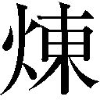

| 光の精煉師ディオン 皇太子と危険なバカンス (角川ビーンズ文庫) | |
| 村田 栞 | |
| (2014) | |
光の精師ディオン
皇太子と危険なバカンス
村田 栞

角川ビーンズ文庫
本作品の全部または一部を無断で複製、転載、配信、送信したり、ホームページ上に転載することを禁止します。また、本作品の内容を無断で改変、改ざん等を行うことも禁止します。
本作品購入時にご承諾いただいた規約により、有償・無償にかかわらず本作品を第三者に譲渡することはできません。
本作品を示すサムネイルなどのイメージ画像は、再ダウンロード時に予告なく変更される場合があります。
本作品は縦書きでレイアウトされています。
また、ご覧になるリーディングシステムにより、表示の差が認められることがあります。
 師〉
師〉中天にかかるかけ始めた月が、雲間に見え隠れしていた。
雲を透かして、青白い月明かりが照らすのは、地平の彼方まで続く白い砂礫の荒野だった。
草も木も生えず、動物どころか小さな虫さえもその地には棲めない。ただ、乾いた風だけが大地を渡り、砂を寄せては不可思議な文様を刻んでいた。
生きる物の存在を拒むはずの荒野に、漆黒の軍服の一団があった。神殿の跡なのだろうか、灼熱の炎に炙られ、溶け崩れたまま冷えて固まったような太い石の柱の根元を、彼らは発掘していた。
「発見しました」
下士官の報告に、長身の若い将校が現場に歩み寄る。彼は癖のない灰色の髪を肩まで垂らし、髪と同じ色の眼に、銀縁の眼鏡をかけていた。
かつて、彼は正体を隠して敵国の〈精師〉養成学校で教鞭を執っていたが、当時の面影はすっかり失われ、肌の色に生気はなく、目の下の影も濃かった。
下士官が示した場所には棺と思われる石の箱が一つ、蓋の一部だけを砂の上に覗かせていた。
瘦せた指で、将校は蓋の砂を払う。
雲が晴れ、蓋に彫られた死者の名が月明かりにさらされた。それを見て、将校の落ちくぼんだ瞳が輝いた。
「ようやく──手に入れた」
彼は笑おうとして顔を歪め、腹を押さえた。焼け付くような痛みに耐えかねて体を二つに折る。砂に手をついた途端、ゴボリ──と彼の口から血がこぼれた。
「閣下！」
下士官が駆け寄った。
「大事ない......」
差し伸べられる手を振り払い、将校は膝をついたまま肩で息をする。
広大な砂礫の大地の中でも、この付近には毒素が特に強く残っている。そのため、敵国の監視もこの地には及ばず、彼は神殿を探し当てることができた。しかし同時に、幾ばくもない彼の余命を削ってしまったのだ。
唇の血を白い手袋の甲で拭い、彼は立ち上がる。
「これですべて駒は揃った──」
足りないのは、自分に残された時間だけであることを、この時すでに彼は悟っていた。
「待っていたまえ、可愛い教え子たちよ──。これが最後の授業だ」
彼は灰色の瞳に禍々しい光を宿し、凄絶な笑みを浮かべた。
帝都シャマナの南の外れ、なだらかな丘陵地帯を鬱蒼と被う森の奥に、古い時代の様式を模した城がひっそりと建っている。
不夜城と呼ばれるその城は、貴族や大企業の重役など上流階級の人々のみが出入りを許される娯楽施設である。一階の大広間では毎夜カジノが営まれ、談笑交じりに人々は一時の遊戯に興じるが、広間に隣接する小部屋では、帝国議会議員の根回しや会社役員による談合、融資の取り付けなど国の重大事項に関わる会合が極秘で行われた。帝国議会が政治の表舞台ならば、不夜城とはそれを操作する舞台裏と言えよう。
八月も終わりに近づき、微かに秋の気配が偲ばれるようになった夜のことである。
不夜城のオーナー、虚無伯爵と呼ばれる人物の応接室で、帝国議員が耳にしたら腰を抜かすような会談がひっそりと開かれていた。
応接室正面奥のソファーに腰掛けているのは、濃い金髪に深い青の瞳、黒いタキシードに身を包んだ虚無伯爵ベルンハルトである。彼は長い足を組んでブランデーグラスを揺すっていた。
右側には、冷徹な美貌と天才的頭脳で名を知られる若き帝国陸軍中将キース・アーベルンが、濃紺の軍服姿で細い紙巻き煙草をくゆらしている。
そして左側には、羽根飾りの付いた銀のつば広帽子に銀のマント、目の周りを被う銀の仮面という、相変わらず華々しいいでたちの夢幻貴族だった。
「来月──九月十五日、満月の出とともに、我が革命軍は一斉蜂起する」
ヨートゥン共和国連邦の革命軍のリーダー夢幻貴族は言った。それを聞いたベルンハルトは片眉を上げ、キースは薄氷の瞳に小さな炎を点した。
「革命軍を三軍に分け、ファルネーゼの連邦議会堂と、ファルネーゼに通じる東西の地下トンネルを同時に制圧するつもりだ」
ファルネーゼとは連邦議会堂が置かれ、要人たちが住まう連邦最大の要塞都市である。
「驚いた。おお、プレスティッシモ・スビト──」
ベルンハルトは片手で胸を押さえた。
「何なんだ？ そのプレス何とかと言うのは」
夢幻貴族の問いに、
「速度を表す演奏記号だ。心臓の鼓動が急に速くなったと言いたいのだろう」
普段と変わらず無表情でキースが答えた。虚無伯爵ベルンハルトの表の顔は、今をときめくオペラ座の人気指揮者で、機嫌の良い時には会話に音楽用語が交じるのである。
「その通り。だって、連邦の革命が間もなくだということはわかっていたし、夢幻貴族、君が私を訪ねて来たのはそのことだろうと予想はしていたけれど、まさか詳しい日時と戦略まで知らせてくれるとは思っていなかったのだもの」
「俺が伯爵や中将を信頼している証拠だよ。ご理解いただけるかね」
夢幻貴族は端整な唇の端をつり上げて笑う。
「何と言っても、伯爵は帝国の政治経済を意のままに操る闇の帝王、中将は帝国の諜報活動を担う特殊部隊〈蒼い鷹〉の指揮官。お二人に黙っていたのでは革命を成功させることはできないではないか」
「なぜ、満月の夜なのだ？ 夜陰に乗じて奇襲するなら、もう少し暗い夜を選ぶべきではないのか？」
天才軍師の指摘に夢幻貴族は立ち上がり、
「よくぞ聞いてくれた。月は我々連邦の民にとって力の源なのだ。伝説では、我々の住むこの世界は、満月の夜に巨神ヨートゥンが創造したと言われている。我ら革命軍が巨神に成り代わり、新しいヨートゥン連邦を誕生させるのだ。これほど革命にふさわしい夜があるだろうか。更に、その日はムスベルの月神の祭りである。連邦に囚われている二万人のムスベル人が、我々の勝利を月の神に祈ってくれるであろう」
と、演説の口調で説明する。
「要するに神頼みなのだな」
キースはため息交じりに煙草の煙を吐いた。
「前日に、こっそり革命に必要な物資を陸揚げするっていう理由もあるけど──。港は警戒の目が厳しいから、天然の岩壁に船をつける。それには満潮時の水位が高い満月か新月の前後でなくてはならないのだ」
「けれど、中将はともかく、私は連邦のトップが君だろうと〈沈まぬ星〉だろうと一向に構わないのだよ。私が〈沈まぬ星〉に情報を漏らす危険は考えなかったのかな？」
ベルンハルトは薄い笑みを浮かべた。〈沈まぬ星〉とは、現在連邦の政治を牛耳る政党で、帝国への侵攻を企てている急進派である。口には出さないが、虚無伯爵ベルンハルトが密貿易で〈沈まぬ星〉とつながっていることは、夢幻貴族もキースも承知していた。
しかし、夢幻貴族は笑みを崩さず、
「一七一五年製のアントニウス・デル・ジェス。それが革命軍の手にあるのだ」
唐突に、ヴァイオリンの銘柄を口にした。
「一七一五年製の──！ 最もグラツィオーソと謳われた名器が！ 先の大戦で一七一五年製の物は全て消失したと聞いていたのに......」
ベルンハルトは濃い青の瞳を見開いた。
「連邦にマルコというヴァイオリニストがいるのを知ってるかね？ 彼は国家叛逆罪で〈沈まぬ星〉に追われ、逃亡中に事故死したことになっているのだが、実は我が革命軍が極秘で匿っているのだ。彼のヴァイオリンと共に」
「マルコ・ルカス！ 生きていたのか！ おお、何という喜び。彼のドルチェでアマービレな演奏は健在かな」
「何なんだ？ そのドルチェでアマービレというのは」
「ドルチェは甘美、アマービレは愛らしい」
夢幻貴族の問いに、無表情の奥に小さな苛つきを隠してキースは答える。
「健在だとも。歳を取って演奏に一層の深みがましたぞ」
夢幻貴族はベルンハルトに向き直って、大きくうなずいた。
「それから、ホルン奏者のカペーに、リステルが愛用していたピアノ──」
夢幻貴族は、死んだと思われていたり行方不明だったりした著名な演奏家や作曲家の名や、消失したと思われていた有名な楽器、楽譜を連ねた。その度に、ベルンハルトは「ガウディオーソ！ ゲリュールト！」と、音楽用語を駆使して感激を表現する。
（音楽がからむと人格が変わると聞いていたが、このような人物に帝国を陰で操らせておいていいのだろうか）
盛り上がる二人の会話には加わらず、キースは瞑目した。
「音楽関係のものばかりではない。多くの美術品も大切に保管している。我が革命軍は、王制時代の貴族の末裔が中心になっているのでね、芸術や文化には造詣が深いのだ。〈沈まぬ星〉のように領土を広げることしか考えていない無粋な輩とは違って」
夢幻貴族は仮面の奥から、ベルンハルトを悪戯っぽく見上げる。不夜城では、非合法の品をオークションにかけ、ベルンハルトは莫大な利益を得ていた。
「大方、お前が連邦の成金から盗み出した物なのだろう？」
キースは凍った海を思わせる薄い色の瞳を眇める。
「人聞きの悪いことを言わないでくれたまえ。美しい物は音楽であれ品物であれ、愛でられるために存在するのだよ。価値を理解できる者に所有される方が、それらの品々も嬉しいはずだ。俺としては、正しい所有者に譲渡したつもりだ。もとの持ち主に無断ではあるが」
銀の手袋を着けた手を伸べ、頭を振って夢幻貴族は抗議する。
「それを盗みと言うんだ。資金調達と帝国内での後方支援の依頼に来たのだろう。早く本題に入れ」
キースのこめかみに青筋が立つ。
「了解。というわけで、虚無伯爵。あなたには俺たち革命軍に手を貸していただきたい」
夢幻貴族はベルンハルトに視線を戻す。
「まずは、革命軍が所有する美術品を不夜城のオークションに出品させてほしい。連邦では売りさばけないのでね。それとは別に現金で三十億。リーレでもらえるとありがたい」
リーレとは連邦の通貨である。
「イントレピド！」
「何？」
「大胆なという意味だ」
キースのこめかみには青筋が増えていた。
「伯爵。頼むから音楽用語で話すのはやめてくれ。通訳する時間の無駄だ」
「おお、すまない。名高い連邦の夢幻貴族と膝を交えて話すのは初めてだが、この私に担保無しで三十億の借金をいきなり申し込んでくるとはさすがだと、つい興奮してしまってね」
「担保なしではないぞ」
夢幻貴族は立ち上がり、銀のマントの裾を指に掛けて鳥の翼のように広げた。
「革命が成功すれば、日陰の身の音楽家も晴れて舞台に立つことができる。彼らは音楽を奏する喜びに打ち震え、観衆は感涙に噎ぶだろう。また、何十年も日の差さぬ蔵で眠っていた楽器らが目覚め、新生ヨートゥン連邦の誕生を祝って美しく華やかなるファンファーレを奏でるであろう。偉大な天才指揮者ベルンハルト殿にとってこれほどの担保となるものが他に──」
朗々と語る夢幻貴族を、キースは途中で遮った。
「その大仰な台詞回しはよせ。話が進まん」
キースの眉間には皺が寄っていた。表情の乏しい彼にしては珍しいことである。夢幻貴族は「はいはい」と腰掛け、
「さらに、これらの物を船で送ってもらいたい。代金は出世払いで」
と、内ポケットからとんでもなく大量の武器弾薬、兵糧や医薬品の類が記されたリストを出す。
「君、ほんとにいい度胸をしているね」
ベルンハルトは苦笑した。
「これだけの物を手配してもらうのに手ぶらでは何だと思ってね。これは挨拶代わりだ。受け取ってくれたまえ」
夢幻貴族はリストの上に、茶色く変色した楽譜の束を置いた。ベルンハルトは目を見開いてそれを手に取り、
「これは、シュラウスのヴァイオリンソナタ第五番の原譜──。ああ、あのマエストーソ且つミステリオーソな......」
夢見るような笑みを浮かべ、うっとりとつぶやくベルンハルトに、
「音楽用語は禁止」
キースは冷たく言い放った。ベルンハルトは「そうだった」と真顔に戻る。
「ふむ、いいだろう。君の言う通りオークションと三十億リーレ、それに物資の件は承知した。失われていた音楽が蘇るのであれば、悪くない投資だ」
「ありがとう。そう言ってくれると思っていた」
夢幻貴族は再び立ち上がり、マントを翻して優雅に一礼する。
「それで、盗品の売買と武器の密輸を契約する場面に私を立ち会わせて、どうするつもりだ？ 逮捕してほしいのか？」
キースは眉間の皺もそのままに、紫煙を深く吐き出す。
「わかっているくせに」
夢幻貴族は小さく笑った。
「虚無伯爵は俺と契約しておきながら、同時に〈沈まぬ星〉にも武器を売るだろう。もちろん楽器や音楽家のことがあるから、革命軍が負けない程度の商売をするとは思うがね。伯爵はそういう人だ」
「本人を前にして言うことではないね」
ベルンハルトは呆れたように笑む。
「そこで、中将には〈沈まぬ星〉の子会社、帝都運輸を牽制してもらいたい。九月十五日までは、帝都運輸の船が連邦に入らないようにしてほしいのだ。勝てる戦でも、できるだけ被害は少ない方がいいだろう？」
「つまり、虚無伯爵が〈沈まぬ星〉に売った武器を、革命が成功するまで差し止めておけと？」
キースは、帝国陸軍を使い走りにする革命軍のリーダーを睨める。
「そうだ。俺たち革命軍は伯爵に物資の代金を今すぐには払えないが、〈沈まぬ星〉は伯爵に莫大な現金を落とすはずだ。ここまで迷惑をかけておきながら儲けまで減らしては申し訳ないではないか」
「わかったよ。〈沈まぬ星〉相手に商売してもいいから、裏切るなということだね。大丈夫、中将が全部聞いているのに、〈沈まぬ星〉に寝返るような無謀な真似は、私にはできないよ」
（私は契約書代わりに使われてるのか）
キースは眉間の皺をなかなか消せなかった。
「私がお前たち二人を裏切って、夢幻貴族が不夜城に持ち込む盗品を押収したり、すぐにでも帝都運輸の強制捜査に踏み切るとは思わないのか？」
キースは呆れ半分、怒り半分で尋ねたが、
「「中将がそんな卑怯なことをするとは思えない」」
二人は口を揃えて答え、キースはやるせない吐息をついた。
「それに革命の成功は、フェルナンド皇太子殿下が目指す平和な国作りに近づくことになる。君がいくら四角四面に法律を遵守する真面目人間だとしても、殿下の夢をくじくはずがない」
ベルンハルトは夢見る笑顔で言い、キースは仏頂面で応じる。
「そう言えば、可愛いお嬢さんは元気かね？」
夢幻貴族は女装したフェルナンドをいたく気に入り、私的には「可愛いお嬢さん」と呼んでいた。
「そうそう、私のアレグロ君もどうしている？ 毎日怠らずに基礎練習をしているだろうか？」
アレグロ君とは、ディオンのことである。ベルンハルトはディオンに打楽器奏者としての才能を見出し、いつかオペラ座に引き抜こうと熱烈なラブコールを送っていた。
「二人とも休暇中だ。この一年、任務に次ぐ任務だったので、二週間の休暇を与えた。今頃は海辺の離宮だろう」
キースの眉間の皺が消えていた。
帝国が何とか平安を保っているのは、自分の部下二人が連邦の革命軍リーダーと帝国の陰の黒幕の信頼を得たからなのだろうと、彼は心の奥で静かに笑んでいた。
抜けるような青い空だった。海はさらに青く、水平線の彼方では真っ白い入道雲がゆっくりと育っていた。海は穏やかに凪ぎ、午後の日が白い砂浜を眩しく照らしている。
「冷たーい！ でも、いい気持ちー」
「また波が来たわ！ キャー、濡れるー！」
波打ち際では、二人の少女がドレスの裾を膝までたくし上げて、寄せては返す波に足を洗わせていた。一人は淡い金の長い巻き毛を腰まで垂らし、空色の大きな瞳が印象的な美少女で、もう一人は、金茶の髪を首の後ろで緩く結び、頰に散ったそばかすが愛らしい少女である。
彼女たちの足下で、灰色の地に黒い虎縞模様の大きな犬と、ふわふわの白い子犬が波と戯れていた。
「お兄様もいらっしゃったら。気持ちいいわよ」
金髪の少女がこちらに向かって手を振った。
「あとでね」
浜辺に立てた大きなパラソルの下で、長椅子に寝そべったままフェルナンドが手を振り返す。彼は白い半袖シャツに薄手の短パンといういたってラフな恰好だった。
涼しげな三人の服装とは異なり、ディオンだけは軍服姿である。真面目にフェルナンドの隣に腰掛けてはいるが、（暑いー、泳ぎたいー）のが本音だった。
「俺、山育ちだからわかんないけど、帝国の皇女があんな膝まで足出していいもんなのか？ いくら他に人がいないってもさ」
「アマーリエは礼儀作法とかに縛られるのが嫌いなんだよ。まあ、時と場所をわきまえて、やる時はちゃんとやるから、みんな大目に見ちゃう。甘やかしすぎだって思うけどね」
妹から視線を外さず、フェルナンドは笑った。
「それに、今年はナタリアも一緒だし、少しは羽目を外してもいいかなって」
彼は、アマーリエの隣ではしゃぐそばかすの少女に目を移す。ナタリアは連邦の大使ステファノ・オルシーニの娘である。家族と共に帝国に亡命し、連邦の刺客に襲われたところをディオンに助けられ、アマーリエに匿われていた。
「ここなら警備もしっかりしてるから、安心して羽を伸ばせるもの」
「ほんと、誰もいないのな。この砂浜全部がお前んちのって、やっぱ皇帝ってすごいよなー」
ディオンはあらためて広々とした砂浜を見渡す。
浜の左には遥か彼方に港が小さく見えるが、港の手前の高い柵と数名の歩哨が、一般人の立ち入りを禁止していた。
浜の右は黒々とした断崖絶壁の岩がそびえ、その上に豪奢な白亜の城が建っていた。ラハ離宮である。このラハ海岸一帯はシャウエンブルク家が皇帝位を継ぐようになる以前からの領土で、大昔は砦として使用していたらしい。フェルナンドとアマーリエは毎年夏になると、この離宮で過ごすのが慣例なのだそうだ。
「俺みたいな庶民が、こんな豪華な夏休みを過ごしていいんだろうか」
ディオンはどっかりと寝椅子に背をもたれさせた。
今朝早く、〈蒼い鷹〉宿舎を出て王宮を訪れたディオンを待っていたのは、物々しい行列だった。先頭は単騎の近衛兵が二名、その後ろに近衛隊の二頭立ての馬車が続き、皇太子フェルナンドと皇女アマーリエ、そしてナタリアを乗せた馬車は六頭立てだった。ディオンはその贅沢なしつらえの馬車に乗せられた。後ろには侍女たちが乗る馬車が何台か続き、最後尾はまた近衛隊の馬車である。馬車の両脇を近衛の単騎が固め、皇太子殿下御一行はおごそかに王宮を出発したのだった。
帝都から海沿いに南へ半日、ラハ離宮へ着いたのは昼近くだった。フェルナンドたちと同じ食卓へ案内されたディオンはこれから何かのパーティーがあるのかと思ったのだが、ただの昼食だったようだ。
アマーリエは昼食もそこそこに「早く早く」と浜辺へ行きたがったので、寝室には荷物を置きに行っただけだが、ディオンのために用意された部屋は、兵士や侍女の部屋ではなく王族専用の客室だったのである。
「何言ってるの。成人したらリフスラシル領を継ぐんでしょ？ 立派な侯爵だよ」
「俺、そんなこと知らないで育ったから実感ないもん」
「僕も君と一緒の方が楽しいし、アマーリエだって、君をどうしても連れて行きたいみたいだったしね」
「どうしても連れて行きたい？ 噓だろ」
ディオンは数日前のことを思い起こす。
休暇がもらえることになり、ディオンは王宮に戻るフェルナンドの護衛として付いて行った。東の宮ではアマーリエが待ち受け、
「お帰りなさーい、お兄様。ね、ラハ離宮へ行きましょう。今年はナタリア様も連れて」
開口一番、フェルナンドにせがんだ。皇女の愛らしい笑みはディオンには向かず、
「ディオンもお兄様の護衛をしたいでしょ？ 来たいなら来てもいいわよ」
つんとした表情で彼女は言った。
「俺、今からビヴロスへ帰るつもりなんだ」
帝都から北へおよそ四百キロ、ビヴロスの山小屋がディオンの実家なのである。ディオンがそう答えると、アマーリエはどういうわけかサーッと顔色を変え、何と涙ぐんだのだ。
すると、アマーリエの守り役ヘルマンが慌てた様子で、
「ナタリア様もご一緒となると、近衛だけでは警備が心配です。どうか一緒にお出でいただけませんか」
と、話に割って入ってきた。
「せっかくの休暇に申し訳ありませんが、近衛隊から特別手当を出しますから」
「はあ、そういうことなら......」
温厚なヘルマンはディオンに対しても丁寧な言葉遣いをしてくれるが、彼はアマーリエ付の近衛隊隊長で、しかも少佐である。彼にそう言われてしまうと断れない。
「お仕事ならしょうがないわね。一緒にいらっしゃい」
アマーリエはそっぽを向いてそう言ったのである。
「あれはどう考えても、本当は来てほしくないって感じだったぜ」
ディオンは冷えたジュースをストローですすり上げる。
「あの子、意地っ張りだから」
フェルナンドはクスクスと笑う。
アマーリエとナタリアはスカートをたくしあげたまま砂浜にしゃがんでいた。どうやら貝殻を拾っているらしい。やがて二人とも素足で砂浜をかけて来る。後を追って大小二頭の犬も走って来た。黒い大型犬が濡れた体を震わせると、
「キャー、アッシュ。そこでブルブルしないで、水が飛ぶー」
アマーリエとナタリアは声を上げる。
（こういうとこは普通に可愛いんだけどな）
なぜ、自分だけにこうも風当たりが強いのか。
「桜貝を見つけたわ。きれいでしょ」
アマーリエは握っていた手を開いてフェルナンドに見せた。手の平に小さなピンクの貝殻がいくつか載っている。
ナタリアはアマーリエの手から閉じた二枚貝をつまんだ。
「連邦では、桜貝は恋のおまじないに使いますのよ。思う人に片方を持たせれば、いつか結ばれるのですって」
貝を二つに分け、アマーリエの手に戻す。アマーリエは薄紅色の光沢を放つ左右対称の貝殻をしばらく見つめ、やがて耳まで真っ赤に染めた。
「そ、そんなおまじないがあるの......」
彼女はそそくさと貝殻をレースのハンカチに包み、
「そんなことより、お兄様も一緒に水遊びしましょ。せっかく海に来たんですもの」
と、フェルナンドの手を取る。そんな妹の様子を見て、フェルナンドはニコニコしながら「そうだね」と立ち上がった。靴と靴下を脱ぎながら、
「ディオンもお出でよ、軍服なんか脱いで。暑いでしょ？」
と、誘ってくれたが、
「いいよ。俺は護衛だし」
ディオンは肩をすくめる。本当は素っ裸になって泳ぎたいが、そうもいかない。
「私も少し休みます」
ナタリアはディオンの隣に腰掛けた。
「疲れちゃったかしら、大丈夫？」
「いいえ、飲み物をいただいたらすぐに参りますわ」
ナタリアは穏やかな笑顔で皇子と皇女を送り出した。ディオンがポットから新しいグラスにジュースを注ぐと、彼女は「ありがとうございます」とグラスを受け取り、
「本当にアマーリエ様はお優しい方ですわね」
と、しみじみつぶやいた。
「私は、生まれも育ちもファルネーゼですから、海を見るのは初めてなのです。桜貝のおまじないも聞いたことがあるだけで、実際に目にすることができるとは思っておりませんでしたわ」
ヨートゥン連邦は国土の大半が砂漠で占められている。ファルネーゼも砂獣という怪物の棲む砂漠に囲まれ、厳重な警戒が敷かれる東西の地下トンネルを通る以外に、街から出る方法はなかった。親帝国派の議員だったオルシーニに対する監視の目は厳しく、海どころか自由に街を歩くこともできなかったのだ。
「帝国に来てからも、王宮から出られませんでしたから、私を気遣ってこちらへ誘ってくださったのだと思います」
「そうなんだろうな」
ディオンはうなずいた。アマーリエは結構細かい心遣いをする。少なくとも自分以外には。
「半分は、アマーリエ様のだしにされたわけですけれど」
ナタリアは軽く笑う。
「だし？」
「私が参れば、少尉殿を護衛のために同行させるという大義名分ができますでしょう？ アマーリエ様はとても楽しみにしていらしたのですよ。決して口にはなさいませんが、私にはわかりましたわ」
「はあ？」
意味がわからない。
「でも、少尉殿はご実家にお帰りになりたかったのでしょう。お祖父様とお父様が、さぞがっかりされたのでは？」
「いや、俺は別に。休暇がとれたことは連絡してなかったし」
ビヴロスに帰れば大歓迎されるだろうが、それはそれで鬱陶しいような気もする。
「少尉殿のお父様も窮屈な生活をなさっていると伺いましたわ。父と同じですわね。一日も早く、公の場に出られるようになるといいのですが......」
ディオンの父モーリスは天才と言われる〈精師〉で、その技術を欲して連邦やムスベルの秘密組織、帝国の〈精師〉養成学校ムセイオンにまで行方を捜されていた。その点ではナタリアの父と同じ境遇である。
「お父さんは陸軍の官舎にいるって聞いたけど」
「ええ、軍の施設内なら警備が行き届きますし、仕事もしやすいということで、母も兄も一緒にそこで暮らしております。私だけ王宮に留め置かれておりますの」
「姫が放さないんだろう」
ディオンは笑った。
「いいえ、父の希望なのです。同じ年頃の子といる方が楽しいだろうと──。私もアマーリエ様が大好きなので、王宮に置いていただけるのは有り難いと思いますが......」
ナタリアは小さな吐息をつく。
「父が私を遠ざけているのは、私に余計な心配をさせたくないと思っているからだと思います。母からの手紙では、ここのところ父は軍本部に呼ばれることが多くなっているそうです。毎日のように密書が届くようですし──。きっともうすぐ革命が興るのでしょうね」
「そうかも──」
軍の上層部に慌ただしい動きがあることはディオンも気づいていたが、具体的な指令はまだ下りていない。
「夢幻貴族が指揮を執っているようですが......。不安ですわ、無血で政権交代というわけには参りませんでしょうし、夢幻貴族も他の皆様もご無事で革命を成功させることができますでしょうか」
「大丈夫じゃないか？ 見た目はあんなんだけど、夢幻貴族はなかなかの実力者だし」
「でも、お年寄りや子どもたちが巻き込まれて酷い目に遭うかもしれないと思うと......」
ナタリアは薄茶の瞳を翳らせる。
「俺も同感だけどさ。君がそんな心配するから、オルシーニ大使は自分の仕事を見せないようにしてるんだろ。姫が君を王宮に住まわせておくのも同じ理由なら、そんな顔してちゃだめだぜ」
それを聞いて、ナタリアはハッとしたように顔を上げた。波打ち際では、フェルナンドとアマーリエが気遣わしげにこちらを見ている。
「私、余計な心配ばかりしていて、アマーリエ様のお気持ちを考えておりませんでしたわ」
ナタリアは微笑んだ。
「少尉殿は、本当に心根の良い方ですのね。アマーリエ様のお目は確かですわ」
彼女は立ち上がり、「しばらく心配事はおあずけにしておきます」と、駆け出した。
『いい子ね。何不自由ない生活を手に入れたのに、遠い故国の人々を思いやれるなんて』
それまでディオンの足下で黙って寝そべっていた黒い大型犬──アッシュが言った。
『あの子なら、ボクたちが〈精〉犬だって打ち明けても大丈夫な気がする』
白い子犬──シュネーがピョンとディオンの膝に跳び乗った。
「つまり、喋りたいんだな」
アッシュもシュネーも、ディオンの父モーリスが〈精〉で造った生物である。この技術を持っているのはモーリスだけであり、モーリスが狙われているのはそれが理由である。ゆえに、この二頭の知的人造生物は、人前では喋ってはいけないことになっていた。
『だってー。普通の犬の振りしてるのって、けっこう気疲れするんだもーんって、あれ？』
シュネーは沖合を見やって、耳をそばだてる。
「どうした？」
アッシュも首をもたげて海の彼方を注視していた。
『変な音が──。ディオン、大変、大きい波が来るわ』
ディオンが水平線に目を移すと、見る間にそれが大きく盛り上がった。
「津波か!?」
ディオンは寝椅子からバッと立ち上がり、
「波が来る！ 早く戻れ！」
波打ち際のフェルナンドたちに叫んだ。彼らは一瞬驚いたようにディオンを見つめ、やがて背後を振り返った。その時にはすでに大波が山のように膨れ上がっていた。
「キャー！」
三人は一斉にこちらへ向かって走り出したが、大波が押し寄せる速さはそれを上回った。波の頂が白く崩れ始める。
「まずい」
ディオンは波打ち際に駆け出した。アッシュとシュネーがディオンを追い越してフェルナンドたちに駆け寄る。
急な曲線を描いた波は、魔物の顎を連想させた。それが三人と二頭の上に被さっていく。
水の音とは思えない重低音が浜に響いた。
波が砕け散り、その中にフェルナンドたちの姿が吞み込まれる。
「フェルナンド──！」
次の瞬間には、水はディオンにも届いていた。流されてきた白いドレスをつかめたのは奇蹟に近い。ドレスの細い腰を抱いたまま、凄まじい圧力に押し流され、沈んでいく。
幼い頃から流れの速い谷川で水遊びし、水泳にはそこそこの自信はあった。しかし、この大波はそんな生やさしい流れではない。しかも動転したアマーリエが暴れるので、泳ぎの体勢を整えることすらできない。
（マジ、やばいかも）
黒い指なし手袋形の〈炉〉に玲石を貼る余裕などなかった。目も開けられない激流の中でディオンは自分の首にアマーリエの腕を巻かせ、手袋を取った。そして両手の平を向かい合わせる。手に埋められているのは水星、金星、火星、木星、土星、そして月と陽の玲石である。総称して〈光〉の玲石と呼ばれるそれらは、生き物を造れる希少な玲石だが、向き合わせる角度と距離によって他にも様々な〈精〉を行うことができた。
（息が......くそっ）
耐えきれずディオンはゴボッと空気を吐き出した。途端に塩辛い水が鼻と喉に浸入する。
自分の手が見えない上、水圧が指の自由を奪っていた。
（この──っ）
勘だけを頼りに、ディオンは自分の周囲に球形の障壁を張った。更に空気を造る。呼吸が可能になった途端にアマーリエが激しく咳き込んだ。
「大丈夫か」
ゼイゼイと荒い息をつきながらディオンは尋ねた。
「何なの？ あなたディオン......？ ここはどこ？」
アマーリエは咳交じりに問う。
「俺の障壁の中」
ディオンは透明な障壁越しに辺りを見回す。フェルナンドとナタリアが心配だった。
「障壁？」
咳のせいで涙をこぼしながら、アマーリエは周囲に視線を巡らす。
その時、一瞬流れが止まった。と思ったら、いきなり逆流し始めた。
「キャア！」
アマーリエは再びディオンにしがみついた。
「波が引いてるんだ──」
海水は砂を巻き上げて、ディオンたちを包む障壁を沖へと運ぶ。ディオンはハッと視線を上げた。頭上を人影がよぎったからである。
「フェルナンド！」
「え？」
アマーリエも顔を上げてディオンの視線を追うが、兄の姿を確認できたのはほんの一瞬だった。砂混じりの海水が瞬く間に視界を遮ってしまう。
「助けて！ お兄様を助けて！」
彼女は必死の形相でディオンの濡れた軍服の胸元をつかんだ。
「わかってる」
ディオンはすでに障壁の外壁を加工して噴射型の推進装置を〈精〉していた。噴射口に圧縮空気を送り込み、フェルナンドが流れ去ったと思われる方向へ障壁を進ませる。しかし、海はあまりにも広かった。しかも砂が渦巻いていて遠くまで見渡せないのだ。
「早く！ お兄様が溺れてしまうわ！」
「くそっ」
せめてもう少し視界が利けば、と思った時──。
海上から眩い光が振ってきた。そして斜め上方に、流されて行く人影を映し出す。
「いた！」
急いで進行方向を変えようとすると、海面から白く輝く球体が下りて来た。ディオンと同じく〈精〉で造った障壁である。中に、小柄な人物がいた。彼はすばやくフェルナンドに近寄り、一旦障壁を解くと、次の瞬間にはフェルナンドを取り込んで再び障壁を〈精〉する。
「お兄様......助かったの？」
ディオンの軍服にしがみついたまま、アマーリエが呆然とつぶやいた。
「らしいな、けど誰だろう？ 近衛の中に〈精師〉なんていたっけ？」
ディオンが近寄ると、ぐったりとしたフェルナンドを抱きかかえている人物が振り返った。燃えるような赤い巻き毛に碧玉の瞳、透き通るように白い頰には微かな朱が滲み、紅を引いたような唇に、不遜な笑みが浮いていた。
「シーグ!?」
「シーグフリード・アレクサンドル・ヴォルジェと申します。フェルナンド皇太子殿下とディオンとは、昨年の夏、ムセイオンで親交を結ばせていただきました。以後お見知りおきを」
何事もなかったように波が引いた砂浜で、シーグは言った。そして片膝をつくと、呆然と立ちすくむアマーリエの手を取り、塩と砂にまみれた彼女の甲に口づける。さぞしょっぱかったに違いないが、そんなことを顔に出す彼ではない。
「......こちらこそ」
目を瞬き、多分条件反射なのだろう、アマーリエは王室の正式作法に則り、びしょ濡れのスカートをつまんで軽く腰を折った。
シーグの後ろには、長い灰褐色の髪を後ろで一つに結んだ長身の青年が控えていた。
「ハーラル・マーシアと申します。シーグフリード様に仕えている者です」
穏やかな笑みを浮かべ、彼は胸に片腕を当てて臣下の礼をとる。
傍らには、だいぶ水を飲んだらしく、フェルナンドが青い顔で座り込んでいた。その背中をナタリアがさすっている。ナタリアは、波に吞まれる寸前にアッシュとシュネーにドレスを咥えられ、海に引きずり込まれずに済んだということだった。
「アレクサンドル・ヴォルジェ......ムスベルの大神官のお家柄なのね」
アマーリエはあらためて紅顔の美少年と物静かな青年を交互に見た。二十六年前の戦時下、祖父である先帝フィリポ六世は、神の手を持つと言われたヴォルジェ大神官と密約を交わした。それが公になって、帝国中が大騒ぎになったのはこの夏の初めのことだった。
「お前ら、何でここに？」
ディオンは予想外の助っ人に尋ねた。
「ムセイオンを卒業したのでね。君とフェルナンド殿下がムセイオンに在学していた時に取った単位の認定証を届けに来たんだ。いずれ殿下が〈精師〉免許を取るときに必要だろうと思って。それで〈蒼い鷹〉を訪ねたら、ここだと聞いたんだ。着いた途端に大波に吞まれる君たちを目撃してしまったものだから、こんな無粋な再会になってしまったけれど」
声変わり前の高い声も、上からものを言うところも以前と変わらない。
「ムセイオンをもう卒業なさったの!? 驚いたわ、私と同じぐらいの歳なのに！」
アマーリエは驚嘆する。普通は十八歳でムセイオンの高等科を卒業するのだが、シーグは義務教育年齢で入学試験に合格し、スキップして卒業単位を取得した天才なのである。
「道理であの濁流の中でお兄様を見つけられるはずだわ。さすがは大神官の血を引く〈精師〉、すばらしい技術を持ってらっしゃるのね。本当にありがとうございました」
「何、大したことはありません。海に飛び込む前に音波を〈精〉して、どこにどなたがいるか見定めておいただけです。目の前の事象に目を奪われて、全体を見失うような愚を犯したくなかったので」
シーグはチラリとディオンを見やる。アマーリエしか助けられなかったディオンの短慮を非難しているのだ。
（悪かったな）
そこはディオンも反省しているので言い返せない。
「とにかく今はお城にお戻りください。濡れたお姿でも十分にお美しいですが、お風邪を召されては大変です。お届け物はその後にいたします。御一緒させていただいて構いませんか？」
この辺りの台詞回しは一年の成長の成果か。アマーリエは「ま──」と、頰を染めた。
「もちろんですわ。お兄様の命の恩人に何のお礼もせずにお帰しできませんもの。よろしかったら、しばらく離宮に滞在なさって。卒業したのなら、少しはお暇なのでしょう？」
離宮へ続く小径を、シーグとアマーリエ、ナタリアは談笑しながら並んで歩く。その後ろに続くディオンとフェルナンドに、ハーラルが小声で話しかけてきた。
「城の警備兵は何名ですか？」
「近衛の一個小隊を連れてきたから、常駐している兵士も含めると六十人ぐらいかな。それが何か？」
フェルナンドが問い返すと、
「皇太子殿下と皇女殿下が溺れかかったというのに、城から誰も出て来ませんね。屋外には歩哨もいるのでしょう？」
ハーラルは油断なく周囲の気配を窺いながら答えた。
「そう言えばそうだな」
海に臨む高台に建つ離宮には、あの津波が届かなかったのだろうが、それにしても誰も気がつかなかったというのはおかしい。
「あの波は変でした」
ハーラルの銀灰色の瞳が不安げに曇っていた。
「〈精〉で起こした高波？」
風呂に入って着替えを済ませ、ディオン、フェルナンド、シーグ、ハーラル、そしてアッシュとシュネーは人払いされたサロンに集まった。
ナタリアとアマーリエは呼んでいない。余計な話を聞かせて心配させたくないというフェルナンドの配慮だ。
ディオンは窓の外を見やる。青紫に色を変えた空に、雲が明るいオレンジに輝き、波頭は赤く染まっていた。夕暮れ時の海はあくまで穏やかである。
「本物の津波ならばこの入り江全体に及ぶはずですし、繰り返し波がやってくるはず。けれど、あの波は一度きり、しかも幅二十メートルにも満たない小規模な波でした。しかし、どんなに小規模であろうと、殿下や姫様を常に見守っている近衛が、あの波に気付かないわけはありません。同時に幻術系の〈精〉が行われたのではないでしょうか」
ハーラルは言った。
「誰かが僕たちを殺すために......？」
フェルナンドは毛布を頭からかぶっている。彼は熱を出してしまったのだ。
「ナタリアを狙ったのかもしれない。今の情勢を考えると彼女が一番危ないだろ」
ディオンはナタリアの素性をシーグたちに説明した。
「ほう、亡命大使の娘ね──。でも、彼女を殺して何になる？ 誘拐してオルシーニ大使を呼び出すための人質にするならわかるけど」
「殺すつもりじゃなくて、誘拐する目的で大波を起こしたのかもしれないだろ。現に、俺はナタリアまで手が回らなかったし──。アッシュたちがいたからよかったけどさ」
「殺すつもりがないのなら、狙いは君の〈光〉の玲石と黒雷獣の〈精〉技術かもしれないね」
シーグは黒い指無し手袋を差し出した。海中で障壁を〈精〉した時に外した手袋である。
「フェルナンドと一緒に回収したんだ。その手の玲石が人目にさらされるのはあまり愉快ではないのでね」
「助かったよ。もう見つからないと思って諦めてた」
ディオンは指なし手袋をはめながら、ふと疑問に思う。
「お前たちが居合わせたのは偶然か──？ あの高波は、お前たちがここへ到着するのと同時に起こったんだろ？」
「犯人は私たちも波に巻き込むつもりだったと？」
ハーラルは問い返す。
「そうだ。お前たちがムセイオンに入学する前に、どこで何をしていたか、知られたくないやつがいるんじゃないか？」
シーグとハーラルは、ムスベル復興を目論む秘密組織の管理下で、長い間〈精〉の修業をさせられていた。幽閉されていた研究所は壊滅したが、組織そのものはまだ存在する。
フェルナンドがふと思い当たったように口を開いた。
「ラハ港──ここの西にある港には、帝洋漁業っていう会社の漁船が時々入港するんだけど、帝洋漁業の親会社って、帝都運輸なんだ」
帝都運輸とは、表向きは帝国の船会社だが、実際は〈沈まぬ星〉の息がかかっている密輸業者である。
「ね、とりあえず中将に報告しようよ。この離宮は電信が引かれていないから、近衛の誰かを伝令に使うしかないんだけど......」
フェルナンドは言った。
「いや、犯人はこの付近に潜伏しているかもしれないし、複数という可能性もある。手練れの〈精師〉相手に早馬を飛ばすのは危険だ」
ディオンが答えると、
『私とシュネーで行くわ』
『うん。ボクたちの方が馬よりも速いし、鼻も耳も利くから、おめおめ犯人に接近されて幻術をかけられたりしないもんね』
アッシュとシュネーが立ち上がる。
「そうだな、近衛にはこの件を知らせない方がいいと僕は思う。当然、アマーリエ姫とナタリアにも。下手な警備を敷いて犯人を逃がしてしまうより、何も気づかなかったふりをして中将の指示を待っている方がいいだろう」
シーグの言葉に、ハーラルとフェルナンドはうなずいた。
確かに、アマーリエのことだから、「犯人をおびき寄せて捕まえるわよ」と言い出しかねない。
「それまでは謎の〈精師〉相手に、私たちだけで持ち堪えなければなりませんね」
ハーラルのつぶやきはその場の者を不安にさせた。
「犯人が誰を狙ったのかわからないけど、犯人の誤算は、ディオンもシーグもハーラルも簡単にやられたりしない超一流の〈精師〉だったってことだね」
フェルナンドは敢えて明るい笑みを浮かべる。
（そうだ、ここにいる者すべてが、それぞれ狙われる理由を持っている）
ディオンは窓の外を眺める。日が沈み、空は赤と濃紺のグラデーションを描いていた。赤黒く色を変えた海は何となく禍々しい。
（いったい誰が、誰を狙ったのか──）
とんでもない夏休みになりそうな予感がした。
翌日も抜けるような夏空だった。
離宮の中腹に張り出したテラスにはパラソルが立てられ、白く塗った丸テーブルと椅子が置かれていた。
日差しは強かったが、パラソルの陰に入れば涼やかな風が秋の近いことを知らせてくれた。
眼下の海はひたすら青く、離宮の土台となっている黒い大岩に、波が打ち付けては白い飛沫となって砕けていた。穏やかで規則的な波の音が耳に心地よい。
「眠いー」
椅子の背もたれに身を預け、ディオンは閉じそうになる目を無理矢理開けていた。謎の〈精師〉の襲撃に備え、ディオンは夜通し辺りの気配に気を配っていたのである。
「僕も。昨夜は何だか緊張して眠れなかったよ」
隣の椅子で、フェルナンドも大きなあくびをする。
「そうか？ 僕はぐっすり眠ったよ。やっぱり学生寮のベッドより寝心地がいいね」
シーグは晴れやかな顔をしていた。
「そりゃ、ハーラルが寝ずの番をしていれば安心して眠れるだろうな」
ディオンはハーラルをチラリと見やる。彼は礼儀正しく腰掛けていたが、うつむいてあくびをかみ殺していた。
「みんなで同じ部屋で寝ることにしない？ で、順番に見張りをするの。そうすれば安心して眠れると思うんだけど」
フェルナンドの提案に、シーグは「それもいいね」とうなずいたが、
「姫とナタリアがカードゲームとかチェス盤を持って乱入して来そうだ。それで、朝まで寝かしてくれなさそうな気がする」
ディオンは緩やかに首を振った。
「お待たせー」
その姫がナタリアを伴ってテラスにやって来た。二人とも大きな銀のトレイを持っている。アマーリエのトレイには、レースのナプキンの上にてんこ盛りの焼き菓子、ナタリアのトレイには六人分のグラスとポットが載っている。
昨日の今日で、フェルナンドの体調もいまいちなので、今日は浜で遊ぶのを止め、朝食が済むとアマーリエとナタリアはお菓子作りにいそしんでいたのである。
「焼きたてよ。温かいうちに召し上がって」
アマーリエはトレイをテーブルに置いた。バニラの甘い香りが辺りに漂う。
「菓子作りがお得意だとは、存じませんでした」
シーグは早速、焼き菓子を口に運ぶ。
「得意ってほどじゃないわ。普通の女の子がやることを、わたくしもやってみたいだけ」
「でも、アマーリエ様はとても手際がよろしいのですよ」
ナタリアがグラスにアイスティーを注ぎながら言った。
「味はどう？」
アマーリエは、寝ぼけたような顔で菓子をかじるディオンを覗き込んだ。
「うまいよ」
皇女は普通台所なんかに立たないのだろうが、この姫はかなり料理が上手だと思う。〈蒼い鷹〉には四十五口径の拳銃をぶっ放す凄腕のガンマンのくせして、極上のパンと菓子を焼いてしまう大佐がいるのだが、彼に比べても遜色ない。
「それだけ？」
アマーリエは不満そうに言った。
「表現力が乏しいね、君は」
シーグは侮蔑の混じった視線をディオンに送る。
「この甘やかな心休まる香り、大陸中の美食家が驚嘆するであろうサックリとした快い歯触り。甘すぎずしつこすぎず、舌の上で溶けた時のまったりとした味わいは、天使の食べ物かと思うほどじゃないか。この菓子に使われた小麦粉とバターの生産者は、これを食べたら感涙に噎ぶに違いない。それを、『うまいよ』だけで済ましてしまうなんて」
どこをどうひねったら、こんな装飾語が出てくるのだろうか。
「ま、お上手なのね」
アマーリエは嬉しそうに頰を染めた。
「ほんと、ディオンて不調法なのよね。田舎丸出しの言葉遣いで、気の利いた台詞一つ言えないのよ」
「君、その場と相手に応じた受け答えは大事だよ。誠実であってもそれが相手に伝わらなかったら、ただ鈍くさいだけだ。こんな調子では出世は望めないよ」
言いたい放題である。
（だって、何を言ったって怒るじゃないか）
ディオンはふくれっ面で黙々と菓子を食べる。
「そうよね。身の回りのことにも全然構わないし。髪は洗いっぱなしでバサバサ、軍服のボタンもきちっと留めないし。こんなことじゃ上院議員の貴族に良く思われないわ」
「顔のつくりは悪くないのだから、もう少し自分の見た目に気を配ったらどうだい。そうすれば少しは上級〈精師〉に見えるかもしれないよ」
（焼き菓子の味からどうしてこういう話になるんだ）
いたたまれない気持ちになった時、救い主が現れた。テラスの出入り口からアッシュとシュネーが入って来たのである。
二頭は昨夜のうちに離宮を出発し、謎の〈精師〉の件について、帝都にいる中将に指示を仰ぎに行っていたのだが、
「あら、ワンちゃんたち。そういえば朝から姿を見なかったわね。どこに行っていたの？ お菓子食べる？」
そうとは知らないアマーリエは無邪気な笑顔で、トレイの焼き菓子を手の平に載せ、アッシュとシュネーの口元に差し出した。二頭はパタパタと尻尾を振って菓子を食べる。
この場で報告を聞くわけにもいかないので、
「そういや、朝飯まだだったな。おいで」
と、ディオンは席を立った。
『夢幻貴族が帝国に来たそうよ。革命決起は九月十五日、もちろん極秘。フェルナンド以外には知らせるなって』
ディオンの寝室で、餌の皿を前にしたアッシュはキースの指令を伝える。
「九月十五日──。あと二週間ちょっとか」
ディオンの背筋に緊張が走る。
『革命の具体的日時が漏れているかどうかはわからないけれど、高波を起こした謎の〈精師〉が〈沈まぬ星〉の手の者である可能性は高いって』
「だとしたら、やっぱり狙いはナタリアかもしれないな」
『そうとも限らないでしょ。昨日の話の通り、ここにいる誰もが〈沈まぬ星〉にとって利用価値がある人ばかりだもの。ディオンあなたは特に......。ベニートが生きていて、黒雷獣を〈精〉させようと狙っているのかもしれないわ』
アッシュは心配げにディオンの手を舐めた。
「それはないだろ。ベニートだったら俺を捕らえるために高波を起こしたって無駄なことぐらい承知している。仮にそうだとしても俺は自分の身ぐらいは自分で守れるから」
ディオンは軽く笑う。
『とにかく、しばらくはラハ離宮に留まってろって。犯人を捕まえるまではフェルナンドもアマーリエ姫も、もちろんナタリアも帝都に戻すなって』
それまでミルクの皿に顔をつっこんでいたシュネーが顔をあげた。
「そうだな。帰り道を襲われたらやっかいだ」
断崖絶壁の上に建っているこの離宮は、砦として使用されていただけのことはあって、守りやすい構造になっている。
『謎の〈精師〉の捜査はジェイダとユアンがするって。午後には着くんじゃないかな』
シュネーは口の周りについたミルクを舐める。
『着いたらこっそり打ち合わせて。ジェイダたちのことは近衛にも内緒だよ。幻術を使う〈精師〉だったら、近衛から情報が漏れるかもしれないからって──』
その時突然、外でバラバラという凄まじい音がした。
アッシュは窓に駆け寄り、窓枠に前足をかけて外を見る。
『雹が降ってきたわ！』
「噓だろ。さっきまでいい天気だったぜ」
言いながらディオンも窓に走り寄る。見ると人の拳ほどもある氷の塊が、ものすごい勢いで地上に降り注いでいた。しかし、海の上の空は明るく、黒く厚い雲が被っているのは、離宮の上空だけである。
変だな──と思った時、
『今、悲鳴が聞こえた！ あれはアマーリエ姫！』
アッシュとシュネーがダッと扉に向かって駆け出した。
「もしかして、謎の〈精師〉か──!?」
ディオンの背筋に緊張が走る。
厚い絨毯が敷かれた廊下に出ると、侍女や近衛たちもあたふたと走っていた。途中でアマーリエの守り役ヘルマン・レイゼン少佐と合流する。
「アマーリエ様やフェルナンド様はまだテラスに？」
「多分。シーグたちが一緒だから大丈夫だとは思うけど......」
二頭の犬がアマーリエの悲鳴を聞いたとは言えない。
アッシュはテラスへ続く階段を全力疾走していた。シュネーも、ピョンピョンとうさぎのように四、五段すっ飛ばして階段を駆け上がる。
テラスへと出たディオンは愕然とした。
雹はすでに止み、噓のように青い空が広がっていた。しかし、幻ではない証拠に、テラス一面に拳大の氷の塊が転がっている。パラソルは見る影もなくボロボロに破け、木製の丸テーブルと椅子にはいくつも窪みができていた。そして──、
「アマーリエ様！」
ヘルマンは絶叫した。片膝をついたシーグに抱き留められている彼女は、大量の血でドレスを真っ赤に染めて、ぐったりとしていたのである。
ディオンとヘルマンが駆け寄ると、
「済まない。すぐに障壁を張ったのだけれど、彼女だけ少し離れた場所にいて......」
シーグは青い顔で言った。フェルナンドも呆然と妹を見下ろしている。ナタリアは貧血を起こしたらしく土色の顔でハーラルに抱きかかえられていた。
「アマーリエ様──。なんということだ」
ヘルマンはわなわなと震え、溺愛する姫の傍らに膝をつく。
「どこをやられたんだ？」
言いながらディオンはアマーリエの脈をとった。
「額だ。雹が直撃した」
簡単に診察したところ、幸いにも額からの出血以外に異状はなかった。脳しんとうだけで済んだようだ。
「大丈夫、命に別状ないから。額はちょっと切れただけでもたくさん出血するんだ」
ディオンが言うと、フェルナンドとヘルマンは長い息を吐いて肩の力を抜いた。
「他に怪我人は？」
「いいえ。ナタリア様が姫の血を見て気を失いましたが」
ハーラルが答えた。
ディオンは油断なく辺りの気配を探る。アッシュとシュネーはテラスのあちこちの匂いを嗅いでいた。謎の〈精師〉の気配を探っているのだ。だが、敵の痕跡は見つからなかったらしく、犬たちは首を横に振る。
「とにかく治療しよう」
ディオンはシーグからアマーリエを受け取り、そっと抱きかかえて寝室へ運んだ。
ところが──。
「キャー！ いやいやっ！ 何するの!!」
ベッドへ寝かせて間もなくアマーリエは意識を取り戻したのだが、息がかかるほど接近している顔がディオンだと気づいた途端に大騒ぎした。
「暴れるなって、頭を打った後は安静にしてなきゃ」
「だからって、何よ！ 何するつもりだったの？」
「何って、消毒と皮膚形成」
「ヒフケイセイ──？」
そこでアマーリエはドレスが真っ赤に汚れていることにはたと気づいた。そして血の出所が自分の額であることも。
たっぷりと一呼吸置いて、彼女は絶叫した。
「見ないで見ないで！ ディオン、あっち行って！」
毛布を引き寄せて頭からかぶろうとするアマーリエを、「よせ、傷に触るな」とディオンが止めると、彼女は身をよじって一層暴れる。
「アマーリエ様、落ち着いて。お怪我をなさったのです。少尉が治療してくださいますから」
「動いちゃだめだよ。静かに寝てなくちゃ」
ヘルマンとフェルナンドが間に入って、アマーリエを押さえた。
「脳しんとうによる錯乱？」
シーグは啞然とアマーリエを見つめる。
「いや、違うだろ。姫は俺が嫌いなんだ」
ディオンは肩をすくめた。
「それなら、僕が治療するよ」
シーグはポケットから白い手袋形の〈精炉〉と銀の小箱を取り出した。小箱から幾つか玲石を選んで貼り付ける。
「お前が？」
「専門分野は君と同じだ。君の手にあるものほど上等な玲石ではないが、痕を残さずに傷を塞ぐぐらいのことはできる」
彼は手袋に貼った水星、金星、火星、木星の玲石を見せた。ディオンの手に埋まっているものよりも小粒で純度も落ちるが、それでも希少な〈光〉の玲石である。
「よく集めたな」
「土星、月と陽の玲石が手に入らないのが残念だけどね」
シーグは投げやりな笑みを浮かべた。
ディオンの手にはすべての〈光〉の玲石が埋まっているが、もとの持ち主は黒雷獣を〈精〉したヴォルジェ大神官、すなわちシーグの祖父である。本来シーグが継承すべき玲石を、本意ではないにしろ手に埋めているディオンとしては少し胸が痛い。
シーグの薄い笑みはすぐに消え、
「姫、そのように取り乱しては傷に障ります。僕でよければ治療させてください」
真摯な表情で彼はアマーリエに向き直った。
「シーグが......？」
アマーリエは泣くのを止めた。
「シーグフリード様はムセイオンではディオンと成績を争った仲なのですよ。医療系の上級〈精師〉免許も取りましたし」
ハーラルが部屋へ入ってきた。彼はナタリアを寝室に送ってきたのである。
「それなら......シーグにお願いするわ......ディオンは出てって」
しゃくり上げながらもアマーリエは力を抜いて横たわった。フェルナンドとヘルマンはホッと彼女を押さえていた手を離す。
「じゃ、頼んだ」
ディオンはシーグに向かって軽く手を上げ、アマーリエの望み通り退散することにする。
廊下に出ると、フェルナンドも後からついてきた。
「気を悪くしないで。アマーリエは、ディオンに顔の傷を見られたくないんだよ、きっと」
「だったら、何で俺はだめで、シーグならいいんだ？ 同じ免許持ってるのに」
釈明の意味がわからない。
「あの子、屈折してるから」
フェルナンドは困ったように笑った。
アマーリエの治療が終わるのを廊下で待つ間、衛兵を遠ざけてもらって、ディオンは連邦の革命のことや、それに付随するキースの指令をフェルナンドに伝えた。
「九月十五日──。いよいよだね」
フェルナンドは強ばった表情でゴクリと唾を吞む。
「でも、どういうことだろ。革命と関係あるとしたら、狙いはナタリアっていう線が濃いけど、怪我したのはアマーリエだし......」
「だよな。雹を降らせたってことは、ナタリアを誘拐するつもりじゃなかったってことだ。テラスにいたんじゃ誘拐できないもんな」
ディオンは引っかかりを感じていた。
「殺すつもりだったのか──？ けど、殺すなら雹じゃなくてナイフか何か凶器を振らせる方が確実だよな。いっそ爆弾落とすとか......」
「皇帝の離宮に爆弾落としたら、それこそ全面戦争になっちゃうよ。革命の危機が迫ってるのに、帝国に喧嘩を売るほど〈沈まぬ星〉は馬鹿じゃないと思うよ。だから事故に見せかけようとして、高波を起こしたり雹を降らしたりしたんじゃないかな」
「あとわからないのは、誰を狙ったのか──。ナタリアを殺しても意味ないよな。アマーリエ姫が狙われてるのか、それともたまたま巻き込まれただけなのか。彼女が怪我した時って、どんな状況だった？」
「それが、よくわからないんだ。僕、すごく眠くてうとうとしちゃってて──。でも、〈沈まぬ星〉にアマーリエを殺す理由なんかないと思うけど......」
「それを言ったら、ここにいる俺ら全員死んでも〈沈まぬ星〉にいいことないぜ」
「そうだよねー」
フェルナンドも首を傾げる。
やがて、寝室のドアが開き、シーグとハーラルが出てきた。
「うまくいったか？」
ディオンの問いに、
「もちろん。僕を誰だと思っているのさ。傷なんか跡形もなく消したよ」
シーグはフンと鼻を鳴らした。
「麻酔をかけたので、しばらくは眠っておられるでしょう。今夜は少佐が付き添うそうです」
ハーラルは穏やかに笑む。
ディオンはシーグとハーラルをしげしげと眺めた。
「ムスベルの秘密組織は、お前ら二人に死んでほしいかも......」
「いきなり何だよ」
シーグは目を剝いた。
「いや、敵が雹を降らせたり高波を起こしたりしたのは、事故に見せかけて誰かを殺そうとしたんだろうっていう予想なんだけど、俺らが死んでもあんまり意味ないし」
「よしてよ。高波にさらわれて沖まで流されたら危なかったかもしれないけど、雹なんかで僕を殺せないことぐらい、組織の連中は百も承知だよ」
ムスベルの秘密組織に〈精〉の技を叩き込まれたシーグは、侮蔑の混じった視線を送る。
「じゃ、誰を狙ったと思う？ 姫が怪我したのは偶然だったのか？」
「それは──何とも言えない」
シーグは急に神妙な顔つきになって、ハーラルと視線を交わす。
「フェルナンド殿下もナタリア様も私たちのそばで眠っておられて、アマーリエ様がお茶のおかわりを持って来ると席をお立ちになり、その直後に雹が降ってきましたが......」
ハーラルは答えた。
「姫を狙ったのなら、彼女がお前たちと離れる機会を待ってたことになるな。敵は、高波の一件で、シーグとハーラルが〈精師〉だってことはわかってるはずだから」
「じゃ、謎の〈精師〉はすぐ近くで僕たちのことを見てるってこと!?」
フェルナンドの顔から血の気が引く。
『それはないと思うよ』
廊下の奥から、アッシュとシュネーがやってきた。アッシュは猫の死骸を咥えていた。シーグとフェルナンドはギョッと後退り、ハーラルは眉をひそめる。
『姫の容態は？』
アッシュは猫の死骸を床に離した。
「大丈夫だ。シーグが治療して、今眠ってる。それは？」
ディオンは猫に目を落とす。どこにでもいるようなまだら模様の猫だ。
『敵の間諜──だと思うわ』
アッシュは前足で猫の額の毛をかき分ける。毛の間に埋まっているものを見て、ディオンたちは息を吞んだ。
「血の玲石──！」
そこにはルビーに似た直径五ミリほどの真っ赤な石が埋まっていた。
血の玲石は外部からの音の刺激を特殊な信号に〈精〉して脳に伝える働きをする。アッシュやシュネーの脳の中にもこの玲石が埋まっていて、人間や他の動物の発する声を言語として理解しているのだが、使い方によっては、これを脳に埋め込んだ生き物を自分の意のままに操ることも可能なのである。
『城の東側の崖で見つけたの。追っかけたら崖下へ落っこっちゃって』
可哀想なことをしたわと、アッシュは猫を見下ろす。
『この辺りを全部嗅いでまわったけど、少なくともあのテラスが見える場所に不審な匂いは残ってなかったわ。だから、みんながテラスに出ていることをこの猫が主に伝えたとしても、ピンポイントで姫を狙うのは無理だと思うの』
「じゃ、アマーリエに雹がぶつかったのは偶然だったんだね」
フェルナンドはホッと表情を和らげた。
「犯人の匂いは見つからなかったのか？」
ディオンは二頭に尋ねた。
『離宮の敷地の外にはいくつか知らない匂いがあったけど、一般人が行き来する場所だから、犯人の匂いかどうかわからないなー』
シュネーはポリポリと後ろ足で首を搔いた。
「謎の〈精師〉はムスベル人なのかな。狙われてるのはシーグとハーラル......？」
フェルナンドはつぶやいた。ムスベルでは手の平に直接玲石を埋める習慣があり、生き物に玲石を埋める技術も発達したが、連邦はそのような高等技術を持たず、帝国では文化の違いからか、生き物への玲石の移植を忌避する傾向があるのだ。
「そうとも限らないよ。先の大戦で多くのムスベル人の〈精師〉が連邦の捕虜になってるもの。それにさっきも言ったけど、ムスベルの組織は僕たちを雹ぐらいで殺せないことはわかってるよ」
シーグは青ざめていたが、気丈な声だった。
「連邦の刺客だとしても、高波の一件で謎の〈精師〉は私たちの実力を知ったはずです。なのに、殺す目的で雹を降らせるのは不自然ですね」
ハーラルの顔も強ばっている。
「脅し、もしくは警告？ 俺たちをこの城に閉じこめておくために──？」
ディオンは、離宮に留まっていろというキースの指令を思い出していた。
（けど、何でだろ？ 革命間近で、俺たちが動くと都合の悪いことなんてあるのか？）
謎は深まる一方だった。
「姫の様子が変？」
翌朝、フェルナンドに揺り起こされたディオンは、慌てて軍服を着た。
「心配だったから、朝起きてすぐに様子を見に行ったんだけど、いつものアマーリエじゃないんだ。頭を打ったせいなのかな？ ヘルマンは喜んでるけど」
アマーリエの寝室に向かいながら、フェルナンドは言った。
「どんな風に変なんだ？」
守り役が喜ぶ「変」というのはどういう「変」なのだろう。
「見てみればわかるよ」
部屋の前に立つ衛兵に敬礼を返し、ディオンはフェルナンドの後に続いてアマーリエの寝室に入る。
ベッドに起きたアマーリエの額には痛々しく白い包帯が巻かれていたが、顔色は良かった。
ヘルマンと何か話していた彼女は、ディオンの来訪に気づいて明るい空色の瞳を向けた。
「まあ、ディオン──」
彼女は楚々とうつむいて、白い頰をパーッっと桜色に染める。
いつもなら「何しに来たのよ」と言うところだ。確かに少し変だとは思ったが、彼女の次の言葉に、ディオンはびっくりしすぎて立ちすくんでしまった。
「来てくれて......ありがとう。それから......ご免なさい。聞けばわたくし、随分とディオンに失礼なことを言ったとか......。怪我をした前後のことを全然覚えてなくて......」
毛布に顔の下半分を埋める彼女の声は、ひどくか細い。
（ありがとう？ ご免なさい？ 姫がこの俺に？）
ディオンは思わずフェルナンドを振り向いた。
「ね？ 変でしょ？」
フェルナンドは心配げに言ったが、ヘルマンは嬉しそうだった。
「いえいえ、これこそがアマーリエ様の真のお姿なのです。今まで猫を被ってらしたのですよ」
反対じゃないか？
「脳しんとうの後に一時的に錯乱したりすることはあるけど──。姫、頭痛は？ 目眩とか吐き気とか、すごく眠いとか」
「いいえ、別に。気分はとてもいいわ。ちょっと胸がドキドキするけど......」
ディオンはアマーリエのベッド脇に寄り脈を取った。彼女はビクッと体を強ばらせたが、手を振り払ったりはしない。
「確かに、ちょっと速いな」
続いてディオンが瞳孔反射を診ようと彼女の片目に手をかざして影を作り、顔を近づけて覗き込むと、彼女は「いや、恥ずかしいわ......」と真っ赤になって目を閉じた。
「恥ずかしい？」
そうとう重症だ。
その時、シーグとハーラルもやって来た。
「ちょうどよかった。姫の様子が変なんだ」
ディオンはシーグに耳打ちした。
「変？」
シーグはアマーリエに目を移し、「姫様、お加減は？」と尋ねる。
「とてもいいわ。シーグが治療してくださったんですってね、ありがとう」
アマーリエはニッコリと笑んだ。
「別に変じゃないよ？」
シーグはディオンに向き直って怪訝な顔をする。
「いや、ところがさ」
ディオンはアマーリエの耳の下や首筋に触れた。
「ディ、ディオン......あ、あの......何？」
アマーリエは首まで真っ赤になって、ふるふると震えて身をすくませる。
「確かに変だ。僕に対する反応なら当然だが、ディオン相手に恥じらうなんて。脳しんとうの後遺症か」
シーグは瞠目する。
「細菌性髄膜炎の初期症状かな？ 完璧に殺菌消毒したんだけど」
「熱もないし、首の硬直もないよ」
「頭蓋内血腫の可能性は？ 髄液は漏れてない？」
医療系〈精師〉二人はこそこそと話し合う。結局、
「脳しんとう後症候群なら数週間で症状は消えるはずだから、しばらく様子を見よう」
ということになった。
その日は、みんなアマーリエのベッドを囲み、チェスやトランプなどをして過ごした。
「相思相愛、二人の相性は百パーセントですって。ナタリア、よかったわね」
アマーリエはベッドに広げたカードを集める。
「今度はシーグを占ってあげるわ。シーグ、好きな人はいるの？」
「いいえ。ですが、一昨日出会ったばかりの皇女様に心を揺さぶられております」
「まあ......からかわないで」
アマーリエは手の甲を口元に当ててウフフと笑う。
「なんて穏やかな日なのでしょうか。これが永遠に続いてほしいです」
乙女チックにカード占いに興ずるアマーリエを見て、ヘルマンは嬉しそうだった。
（そうかなあ）
立ち居振る舞いも喋り方も、おしとやかすぎて何だか不気味だ。
「今度はディオンの番よ。思う人を心に描いてカードを切って」
アマーリエはカードを差し出した。頰が薄紅色に染まっていて心なしか瞳が潤んでいる。
「俺はいいよ。思う人なんていないし」
ディオンは手を振ったが、
「そう仰らずに」「付き合ってあげてよ」「是非とも」
ナタリア、フェルナンド、ヘルマンが勧めるので、渋々カードを切る。
（こんなことやってていいのかな。革命がらみで他の〈蒼い鷹〉は今頃奔走してるだろうに）
チラリとキースの氷の瞳が脳裏をよぎった。
「ちゃんと好きな人のことを思い浮かべるのよ」
うっかり、中将の顔を思い浮かべてしまったとは言えず、「ああ」とカードをアマーリエに渡す。彼女は頰を赤らめ、いそいそとカードを並べた。
「信頼、忠誠......なかなかいいわね。相性は九十パーセントですって」
（中将と相性がいいって言われてもなー）
あまり嬉しくない。
「身分の違いが障害になってるって。そんなこと気にしなくていいのに」
（いや、普通気にする。軍人なら）
「ね......。誰を思い浮かべたの？」
上気した頰で、アマーリエは囁いた。この上なく愛らしい表情だが、それが頭を打ったせいだと思うと心配になる。
「内緒」
ディオンは笑ってごまかした。
「次はアマーリエ様の番ですよ」
ナタリアに急かされて、「そうね」とアマーリエは恥ずかしそうに笑んだ。目を閉じ、深呼吸してカードを切る。
「まず一枚目。え？ 誤解？......次はすれ違い、喧嘩......」
アマーリエはカードを置きながら次第に青ざめた。
「そんな......相性は最悪、この恋は実らないって......」
全てのカードを置き終わった彼女は涙ぐんでいた。
「ディオン......」
潤んだ瞳で見つめられてディオンは面食らう。情緒不安定は脳しんとう後症候群の症状だが、
（たかが占いだろ）
とも言えないので、
「姫なら大貴族の子弟がよりどりみどりだろ。無理に相性の悪いやつ相手にしないで、モガッ」
慰めようと思ったら、ヘルマンとフェルナンドに、ほぼ同時に口を塞がれた。
「あなたが言ってはだめです」
（何でだ？）
「アマーリエ様、ほら、桜貝のおまじないもありますし。未来は努力次第で変わるものですよ」
ナタリアはおろおろしながらも笑って、ベッド脇の小引き出しから桜貝の貝殻を出した。
「そうね。こんなことで泣くのはおかしいわね」
ハンカチで目頭を押さえ、無理に微笑む。
「桜貝のおまじないって？」
シーグは対になった薄紅色の貝殻を覗き込む。
「これの片方を思う人に持たせれば、いつかきっと結ばれるというおまじないです。連邦がまだヨートゥン王国だった頃からの古い言い伝えですのよ」
「ムスベルにもその類の言い伝えはありますよ。月神祭の夜にまじないをかけるのですが」
シーグはチェス盤からキング、クイーン、ジャックの駒を取った。
「九月の最初の満月に、ムスベルでは月の神の美しさを讃える祭りを行います。太陽は西の地平に。満月が東の空に上ります」
彼はキングを太陽に、クイーンを月に見立ててベッドの上に置き、続いてポケットから銀の小箱を取り出した。
「水星と金星が太陽に寄り添い、木星と土星は月神の美しさに見惚れます。土星は持っていないので、変わりにジャックを」
薄水色の玲石と黄金色の玲石が黒いキングの脇に置かれ、淡黄色の大きな玲石と黒いジャックが白いクイーンを囲む。自ら光を発するところから星の名を冠した玲石は、白いシーツの上で燦爛と輝いた。
「そして、火星が月神に口づけを──」
彼は紅の光を発する玲石をクイーンに接触させる。
「この時に祈れば、思う人の心が手に入ります。必ずや──」
シーグはなぜかアマーリエではなくディオンを見た。碧玉の瞳が熱を帯びたように怪しく輝いている。
（そこは俺を見るとこじゃないだろ）
ディオンはギョッとして後退った。
「まあ、ロマンチック......」
アマーリエは頰を染めて、不規則に並んだ玲石とチェスの駒を見つめていたが、天文の知識のないディオンには、〈精〉の際の玲石の配置に思える。
（まるで〈光〉の玲石で何かを〈精〉するみたいだ。星が実際にこんなふうに並ぶことがあるのかな？）
顔をあげてシーグを見ると、彼はすでにアマーリエに視線を移していた。
「月神の祭りはもうすぐです。連邦の桜貝のまじないに加えて、ムスベルの月神にも祈れば、姫様の恋は成就しますよ」
「トランプ占いぐらいでめそめそしないわ。やってみるわね」
アマーリエは淡く笑んだ。
「姫の好きな人って誰なんだろ。皇女の嫁入り先となりゃ、政治的な策略もからんでくるだろうし、国家的大問題だよなあ」
小声でディオンがつぶやくと、隣にいたヘルマンとフェルナンドが長い吐息をついたが、ディオンにはその意味がわからなかった。
その夜──。
「水星と金星が太陽に寄り添い、木星と土星は月神の美しさに見惚れ、そして、火星が月神に口づけを──おかしいな」
ディオンは一人で浜辺に出ていた。頰を撫でる冷えた潮風が心地よい。打ち寄せる波は穏やかで、月の沈んだ夜空には宝石を撒いたように星が輝いていた。
星を探しながらディオンはあることに気づいていた。やがて、
「お待たせ」
崖下の暗がりから、二つの人影が現れる。一人は長い赤毛の妖艶な美女で、もう一人は淡い金髪の、優しげな美貌の青年だった。二人とも〈蒼い鷹〉の軍服を身に着けている。
「残念だけど、謎の〈精師〉の手がかりは見あたらなかったわ」
赤毛の美女──ジェイダは言った。ジェイダとユアンは、昨日の午後から極秘で離宮の周囲の探索に当たっていたのである。
「一昨日の高波について、港の方で聞き込みをしてみたけど、目撃情報はなかったわ。昨日の雹は、城を中心に半径一キロの範囲で降ってるわね。でも、今までこんなことはなかったって地元の漁師さんも言ってたわ。そっちはどう？」
「今日は特に何も。日中はみんな姫の寝室にいたし。アッシュとシュネーにも警戒させてたけど、不審な気配はなかったって。でも油断はできないから、今もフェルナンドとアッシュたちは置いてきた」
「そうね。今は護りに徹するしかないわ。謎の〈精師〉は私たちで捜すから、ディオンはそれまで離宮内の警護を頼むわ。いいこと、はやまってはだめよ。狙われているのはあなたかもしれないんだからね」
「大丈夫、わかってるよ」
ディオンは苦笑いし、「あのさ」と、先刻からの疑問を二人のムスベル人に尋ねてみることにした。
「月神の祭りの夜に祈れば、思う人の心が手に入るって、シーグが言ってたんだけど、本当？」
「聞いたことないわね」
ジェイダは怪訝な顔をする。
「月神の祭りは、古くから国中で行われてた祭りだけど、地方によって習慣が違うからね。私の父母が住んでいた街では、そんな願掛けしていなかったはずよ。ユアン、知ってる？」
「さあ、僕も聞いたことないですよ。僕の育ったムスベル人孤児の施設には、様々な地方の者がいましたが、月神の祭りにそんなことをしている人はいませんでしたね」
女性と見紛う美貌の彼は、優雅に首を傾けた。
「シーグはヴォルジェ大神官のお孫さんでしょ。貴族の令嬢や侍女たちの間で流行ったおまじないかもね」
ジェイダは微笑んだ。
「でも、おかしいんだ。月神の祭りの夜、水星と金星が太陽に寄り添い、木星と土星は月神の美しさに見惚れて、火星が月神に口づけを──シーグはそう言ってた。でも、今、空を見てたら、星の位置が全然違うんだ」
「当たり前じゃない。恒星は同じ季節には同じ位置に見えるけど、惑星の並びなんて毎年違うでしょう？」
「だよなー。そもそも太陽が出てる時間に惑星が肉眼で見えるわけないし」
「見えるとしても金星ぐらいですよね。でも今は明けの明星で、夕方は見えませんよ」
ユアンもうなずく。
「シーグは何でそんな噓をついたんだろ......」
「星の並びじゃなくて、〈光〉の玲石を使った〈精〉とか」
ジェイダは言った。
「俺もそう思ったんだ」
あの時、シーグの意味ありげな視線は、ディオンに向いていた。
（俺は全部の〈光〉の玲石を持っている。つまり俺だけにできる〈精〉なんだ）
ではいったい何を〈精〉させたいのか──。
話の流れからすると、媚薬の類なのかもしれないが、
「まさか、あのシーグがなー」
ディオンはポリポリと頭を搔いた。
「アマーリエ様、どうなさったのです。こんなところで何を？」
昼食を終えて自室に戻る途中、廊下にぼんやりと立っているアマーリエの後ろ姿を見つけて、ナタリアは声をかけた。しかし、アマーリエの返事はない。
「午睡をなさると、お部屋へ行かれたはずでは──」
昼食の途中でアマーリエは頭痛を訴え、自分よりも先に部屋へ引き取ったはずだった。
前へ回り、アマーリエの顔を見たナタリアは、ハッと息を吞んだ。
いつも明るい皇女から、すべての表情が欠落していた。
空色の瞳は焦点が定まらず、愛らしい唇は力なく薄く開いている。頰と唇に赤みが差していなければ、死人の顔のようだ。
「アマーリエ様！ 大丈夫でございますか!?」
ナタリアはアマーリエの肩を揺さぶった。雹が彼女を直撃してからまだ三日目である。しばらくは頭痛や目眩、軽い錯乱があるだろうと少尉は言っていたが、やはり心配である。
「誰か──」
と、叫ぼうとした時、アマーリエの目蓋がパッと開いた。
「あら、ここは......？」
ナタリアはホーッと長い息をつき、
「よかった。気がつかれましたか」
肩をつかんでいた手を離す。
「わたくし、どうしてこんな所にいるのかしら。お昼寝してたはずなのに」
アマーリエはパチパチと目を瞬いた。
「私のお部屋の前でございますよ。お加減はいかがですか？」
「大丈夫よ。いやね、寝ぼけたのかしら。どうやってここまで来たか、全然覚えてないわ」
きょろきょろと辺りを見回し、アマーリエはばつの悪そうな顔をした。
「脳しんとうなんとか群とか、ディオンとシーグが言ってたわね。そのせいかも」
「お部屋へお戻りになりますか？ お送りいたしますよ」
「いいえ。もう頭痛も治ったし、せっかくここまで来たんですもの。ナタリアの部屋でお茶したいわ。いいかしら？」
「もちろんですわ。どうぞ」
ナタリアはドアを開けた。
南に大きく開いた窓の外はひたすら青い空と海が広がっていた。これはアマーリエの部屋からの眺めと同じだが、西にも窓があるナタリアの部屋からは、白い砂浜と椰子の林、遥かに港街の景色も見えた。
「今日もいい天気ね。外へ出られないのが残念」
アマーリエはようやく包帯の取れた額に手をやる。シーグの腕は確かで、傷痕はまったく残っていなかったが、ぷっくりと小指の先ほどのコブがまだ引っ込まず、触れると軽い鈍痛があった。このコブがなくなるまでは安静にしているようにと、シーグからきつく言い渡されているのだ。
「冷たいお茶でよろしいですか？」
ナタリアには侍女がいないので、彼女は隣室の小さなキッチンで自らお茶の支度をする。
「ええ、結構よ。ね、コブが治ったら一緒に港へお買い物に出かけましょう。あそこは週の初めに朝市が立つのよ。お魚がメインだけど、遠方から船で運ばれる珍しい果物とか、織物も売っていて、なかなか楽しいの」
「シーグフリード様のお許しが出てからですよ」
「大丈夫、ちゃんとわかってるわ」
アマーリエは苦笑してソファーに腰掛け、ふとセンターテーブルの上の書簡に気づく。
「あら、ナタリア、お父様からお手紙が来てるわよ」
「まあ、父から？ そう言えば、お昼頃に王宮からお使いが参っておりましたわね」
トレイにグラスを載せ、ナタリアがキッチンから出てきた。グラスをアマーリエの前に置き、早速書簡の封を切る。
「まあ──」
ざっと目を通したナタリアは、心なしか青ざめていた。
「どうかした？」
「いいえ、何でもありません。あの、アマーリエ様、私、急いで返事を書かなければなりませんので、申し訳ありませんが、お茶はまたの機会に......」
書簡を持ってナタリアは立ち上がりかけたが、
「待って、どこへ行くつもり」
アマーリエは彼女の手をつかんだ。
「いいえ、どこへも......」
「噓おっしゃい。出かけるつもりでしょう？ 返事を書くだけなら、わたくしがここにいても構わないはずよ。ね、お父様は何を知らせていらしたの？」
ナタリアは困惑しきって押し黙る。
「きっと大事な用事なのね。オルシーニ大使が離宮にまで手紙を寄越すなんて、よほどのことだわ。だから心配なの。わたくしにできることがあれば力を貸すから」
「ありがとうございます......」
ナタリアは観念して再びソファーに腰掛けた。
「緊急に且つ極秘で夢幻貴族に知らせたいことがあるのだそうです」
ナタリアは封筒の中をまさぐり、中から小振りの封筒をもう一通出した。それには夢幻貴族の宛名がタイプライターで打ってあった。
「知らせたいって──、夢幻貴族は今、帝国に来ているの？」
「そのようです。漁船を装った密航船でラハ港から連邦に戻るはずだから、その前に同封した書簡を渡してほしいと──」
「オルシーニ大使ご本人は、迂闊に動けないものね。お兄様に頼んで、ディオンを使いに出してもらいましょうか。彼は夢幻貴族を知っているし」
アマーリエは夢幻貴族宛ての書簡を手に取る。
「いいえ、誰にも知らせないようにと父が厳命しております。革命に関わる重要な知らせだから、夢幻貴族が帝国と接触していることを〈沈まぬ星〉の密偵に知られてはならないと」
ナタリアは切迫した表情で首を振った。
「だから、アマーリエ様にもお知らせせずに行こうと思って......」
「でも、あなたはこの辺りの地理に詳しくないでしょ。それで、密航船はいつ出港するの？」
「八月二十日......今日の夜八時です」
消え入るような声でナタリアは言った。
「わたくしが一緒に行くわ。毎年ここには遊びに来ているから道もわかるし」
アマーリエは立ち上がった。
「でも、皇女様にそのような危険なことを......」
「変装していけば大丈夫よ。それに、連邦の密偵だって、女の子二人が国家的機密文書を運んでいるなんて思わないでしょ。ディオンに頼むより安全よ」
アマーリエはニッコリ笑った。
「姫とナタリアがいない!?」
サロンでチェスをしていたディオンとフェルナンドは同時に立ち上がった。
「アマーリエ様はお昼寝をなさっていたはずですが、こんな時間になっても起きていらっしゃらないので、見に行ったらベッドは空で──。ナタリア様のお部屋かと、そちらにも伺ったのですが、ナタリア様もいらっしゃらず。もしやこちらではと伺ったのですが」
息を切らせてヘルマンは言った。
「もう、夕方だぜ」
ディオンは窓に目をやる。長くたなびく雲は朱色に染まり、空はラベンダーの色をしていた。
「シーグとハーラルのところは？」
フェルナンドの顔からは血の気が引いていた。
「ここへ来る前に寄りましたが、ご存じないと──。おそらくお二人で外へ出られたと思われます。歩哨が、似たような年恰好の少女を二人、見かけていますから」
「何で止めてくれなかったの！」
フェルナンドは激昂した。
「地味な服装だったので、この辺りの村娘が迷い込んだのだと思ったそうです」
ヘルマンを始め、近衛兵たちは謎の〈精師〉の存在を知らないのだ。危機感が足りなくても無理はなかった。
「すぐ捜しに行く」
ディオンは一旦部屋へ戻り、愛用の狩猟用ナイフをホルダーに下げ、猟銃を肩に担いだ。弾と玲石も携帯する。
駆け足で階下へ降りると、玄関でヘルマンと杖を持ったフェルナンドが待っていた。〈精炉〉を兼ねた特別な杖である。
「今、近衛を四隊に分けて捜索に向かわせました。シーグ様とハーラル様も協力してくださると、先に出発なさいました。私は残りますから、何かわかったら連絡をお願いします」
ヘルマンは言った。
「わかった」
ディオンが外へ駆け出すと、フェルナンドがついてきた。
「来ちゃだめだ。お前も城で待ってろ」
椰子の林に設けられた小径を走りながら、ディオンは言った。
「僕が一緒に捜した方が早いよ。多分、アマーリエはナタリアと港へ遊びに出かけたんだと思う。あの子が行きそうな場所の見当はついているから」
「アッシュとシュネーがいれば、すぐに見つけられるさ。謎の〈精師〉に出くわしたらどうするんだ」
「だから、僕も一緒にいくの。狙われているのは君かもしれないじゃない。それに、もしもあの子たちが謎の〈精師〉に捕まってたら、ディオン一人で救出するのは大変だよ」
「そりゃ、そうだけどさ。やっぱ、皇太子を危険にさらすのはよくない気がする」
フェルナンドはもう軟弱な王子様ではない。精鋭〈蒼い鷹〉隊員として活躍できる技量を十分身に付けていた。わかってはいるが、心配なものは心配なのである。
「そんなこと言ってる場合じゃないでしょ。アマーリエやナタリアを捜し出す方が先決だよ」
「そうだな」
フェルナンドが、一旦決めたことは最後まで貫き通す性格だということはよくわかっている。彼の説得を諦め、ディオンは口笛を吹いた。しばらくすると椰子の間からアッシュとシュネーが駆けてきた。
『何かあったの？』
「姫とナタリアが行方知れずだ。多分港の方に行ったと思うんだが、見なかったか？」
『えー！ そうなの!? ボクらジェイダたちと離宮の東側を嗅ぎ回ってて──』
『ご免なさい。みんなしばらくはお城から一歩も出ないと思ってたから、油断してたわ』
アッシュとシュネーは済まなそうに尻尾を下げる。
「そう、僕たちも油断してた。アマーリエは怪我をして以来、人が変わったみたいに大人しくなったから、まさか無断で抜け出すなんて思わなかったんだ」
「やってくれるよなー。さすがは姫だ」
帝国は、姫に振り回されていつか滅びるんじゃないかと、ディオンは真剣に心配した。
港に着いた頃には、日はとっぷりと暮れていた。街には賑やかに明かりが点り、人通りも多かったが、船着き場は閑散としていた。
『姫とナタリアはこっちに行ったみたいよ』
匂いをたどって、アッシュは堤防の上を歩く。
帝都近くのシャマナ港には及ばないが、このラハ港もかなり大きな港で、小さな漁船に交じって遠航路用の帆船が幾つか停泊しているのが堤防から見えた。
「なぜ、こんな方に？ 織物やアクセサリーの店に行ったんじゃなかったのか」
フェルナンドは訝った。
「まさか、無理矢理連れて来られたんじゃ......」
『ううん。今のところ、姫とナタリアは二人だけで行動してる。他の人が一緒に歩いてる匂いはしないよ』
シュネーが地面に鼻をこすりつけながら言った。
「一安心だな。少なくとも謎の〈精師〉に襲われたんじゃないんだ」
ディオンは思わず肩から力を抜く。ところが──。
『あの船に乗ってる......』
アッシュは顔を上げ、すぐ近くの桟橋から今まさに出港しようとしている遠航路用の機帆併用船を見た。艫に網が装備されているところを見ると漁船らしい。アッシュの視線をたどり、ディオンも見上げると、デッキに地味な木綿のワンピースにエプロン姿のアマーリエとナタリアがいた。背筋が寒くなる思いで、船名を確認する。
「アウグスタ号、帝洋漁業──って」
ディオンとフェルナンドは同時に顔を見合わせた。帝洋漁業の親会社は帝都運輸、すなわち間接的には〈沈まぬ星〉の船なのだ。
「噓だろ────っ!!」
叫ぶと同時に、二人は桟橋を走った。ディオンは振り返り、
「離宮へ戻ってヘルマン少佐とジェイダ、それから中将に連絡してくれ。俺たちは姫を追う！」
アッシュとシュネーに向かって叫んだ。
『わかった』
二頭の犬はそれぞれ離宮と、陸軍本部のある帝都に向かって全力疾走を始めた。その間にも、船は少しずつ桟橋から離れて行く。
ディオンは走りながら黒い指無し手袋に玲石を貼り、〈精〉でゴム状の物質を造った。リンゴほどの大きさに成長させたそれの端を指にからませ、思いっきり船縁に向かって投げつける。伸縮性に富み、且つ粘着性のあるそれは、ディオンの手からビューンと伸びてデッキの手すりにペタッと貼り付いた。
「つかまれ！」
フェルナンドを肩につかまらせ、ディオンは勢いよく地面を蹴る。ゴムはシュルシュルと縮み、ディオンたちを船縁に引きつけた。デッキの手すりをはっしとつかみ、ディオンはフェルナンドを背負ったまま手すりをよじ登る。すっかり日が暮れていたことと船体が黒かったことが幸いして、ディオンの軽業は誰にも目撃されなかったようだ。
暗いデッキに降り立ち、身をかがめて周囲をうかがったが、アマーリエとナタリア以外の姿はなかった。二人はディオンたちの到来に気づいていないらしく、困惑した表情できょろきょろしている。ディオンとフェルナンドは足音を忍ばせてアマーリエたちに駆け寄った。
近づいてくる黒い影に驚いて、アマーリエとナタリアは声を上げかけたが、
「シッ！ 俺だ。騒ぐなよ」
ディオンが小声で制すると、影の正体に気づいたらしく、彼女たちは安堵の息をつく。
「ディオン、お兄様も──。なぜこんな所に？」
「それはこっちの台詞だっ!!」
声量は落としてあったが、十分怒気のこもった声音に少女たちは目を丸くする。
「黙って離宮を出たのは悪かったと思うけど......」
二人は途惑った様子で顔を見合わせた。
「......もしかして、自分たちの状況がわかってない？」
思わず拳が震える。
「話は後だ。急いで船を下りるぞ」
ディオンが踵を返すと、
「って、どうやって──？」
フェルナンドが海を見下ろして言った。ディオンも慌てて船縁へから身を乗り出す。
「げ──」
船は波飛沫を上げて加速し、桟橋は遥か彼方となっていた。
（障壁を張って海へ飛び込むか。けど──）
四人を囲むとなると、かなり大きな障壁を〈精〉しなくてはならない。容積が大きければ推進力が損なわれ、スクリューに巻き込まれる可能性が高かった。
（源石もちょっとしか持って来なかったし、陸に上がるまでの酸素を造れそうもない......）
ヒュ～と、首筋を撫でる潮風が妙に冷たく思えた。街の明かりが虚しく遠のいていく。
「出港は八時のはずなのに、変ねえ。まだ七時を過ぎたぐらいでしょ？」
陸の方を眺めるアマーリエの声は、のほほんとしていた。
「あのなー」
ディオンはアマーリエの方に振り返った。
「姫。この船がどこへ向かっているか知ってる？」
「えーと。もしかして......連邦？」
「わかってるんなら──」
ディオンは思わず怒鳴りかけ、ハッと口を押さえて周囲に視線を巡らせた。
「......なぜ乗ったんだ？」
息だけの声で尋ねる。
「出港時間を間違えたのかも......。でも頼めば、港に引き返してくれるんじゃない？」
「頼むって──敵船の船長にか？」
目眩がしそうだ。
「敵船？ 革命軍の船じゃないの？」
アマーリエとナタリアはきょとんとした。
「何言ってるの。これ、帝都運輸系列の船だよ。君たち〈沈まぬ星〉の手の中に、自分で飛び込んじゃったんだよ」
珍しくこめかみに青筋を立てているフェルナンドの言葉に、
「え────っ!!」
二人の少女は真っ青になった。
「どうしてこんな事になったんだ？」
デッキの隅に四人は身を寄せ合って座り込んでいた。吹き付ける強い風が体を冷やし、船が高速で進んでいることをいやが上にも教えてくれる。
「父から手紙が来たのです」
涙声でナタリアは、父親から極秘で夢幻貴族に書簡を渡すように頼まれたことを語った。
「港まで道案内するってわたくしが言ったの。ナタリアはわたくしを巻き込むつもりはなかったのよ」
アマーリエの声も細く、微かに震えていた。
「港には四時前には着きましたが、どれが革命軍の船かわからなくて、かなり長い間捜しました。そのうちに暗くなってしまって......」
「まさか、その辺の人に革命軍の密航船はどれですか、なんて訊けないでしょ。だから、八時頃に出港する遠洋漁業船はどれなのか訊いて回ったの。そしたら、漁協の人がこれだって教えてくれて......。船の出入り口が開いてたから乗っちゃったの。でも、誰もいなくて、近くの階段上ったらデッキに出ちゃって......」
「うろうろしてたら、船が出てしまったというわけだな？」
「そうなの......」
アマーリエは膝に顔を埋めるようにしてうなずいた。
「世間知らずなのはしょうがないけどね......」
フェルナンドはやれやれと肩をすくめる。
（だよな。アマーリエも世間知らずだけど、ナタリアはそれ以上だ）
彼女は連邦でも帝国に亡命してからも、ほとんど家の外に出たことがない筋金入りの箱入り娘である。
（そんな娘に、なんでオルシーニは機密文書を革命軍に届けろなんて、危険なことを頼んだんだろう？）
ディオンは不審に思う。
「見せてくれないか、オルシーニ大使からの書簡を」
「同封してあった夢幻貴族宛ての手紙しか持ってきていませんけど。これが入っていた父からの手紙は離宮に置いてきました」
ナタリアは村娘が着けるような木綿のエプロンをまくり、ワンピースのポケットに大事にしまっていた封筒を取り出した。
「でも、絶対に開けてはいけないと......。開けた形跡があれば、〈沈まぬ星〉の密偵が開封したと思われてしまうからと、手紙に書いてありました」
しゃくり上げながらナタリアは言った。
「そこなんだ。伝書鳩で密書を送る場合とか封蠟を押しておいたりする。鳩を捕まえて、密書の内容を盗み見たり内容を差し替えたりしてまた鳩を放すなんて、間諜の常套手段だからさ。お父さんからの書簡は、誰かが開封した様子はなかったか？ それと、筆跡は間違いなくお父さんのものだったか？」
「封蠟は押してありませんでしたが、きっちり封がしてありました。タイプライターで打ってあったので筆跡はわかりませんが、父はいつもタイプライターですから」
「ディオン、この手紙が罠だと思ってるの？ でも、ナタリアがラハ離宮に来たことを知ってるのは、ナタリアのご家族とわたくしの近衛だけよ。密偵がオルシーニ大使の名前を使って離宮へ手紙を寄越すはずないと思うけど」
アマーリエは言った。しかし、謎の〈精師〉が襲ってきたことを考えると、どこかでナタリアの離宮行きが漏れた可能性も捨てられない。
「一応念のためさ。これも封蠟が押してないな」
ディオンは夢幻貴族宛ての封筒を受け取り、表裏を観察する。
「開けてみるか」
「だめよ！ 大事なお手紙なのに──」
アマーリエは言ったが、
「フェルナンドが開けたことにすれば、夢幻貴族は許してくれるさ」
ディオンは指無し手袋に玲石を貼り、〈精〉で封筒の糊を溶かした。ディオンが開いた便せんを他の三人も覗き込む。
ヨートゥン語で綴られたタイプライターの手紙はたった一文だった。
──満月の夜に祈り、北極星を堕とせ──
「これだけ？」
アマーリエは目を丸くした。
「暗号なのかな？ 北極星って〈沈まぬ星〉って感じだけど」
フェルナンドも首を傾げている。
「今度の満月って、九月十五日だろ？」
ちょうど革命軍蜂起の日である。夢幻貴族からオルシーニに、革命の日を知らせるのならわかるが、今更オルシーニが夢幻貴族にこれを知らせてどうするのだろう。
「罠かと思ったけど──」
それなら、開封されることを考慮して、もっと周到な内容にするはずだ。
「フェルナンドの言うとおり、夢幻貴族にはわかる暗号なのかもしれないな」
ディオンは便せんをしまい、ナタリアに返した。
「さて、これからどうするかな。船を乗っ取って、ラハ港に戻させてもいいけど──」
ディオンは、辺りをざっと見渡す。船の上では逃げ隠れする場所がない。戦闘になった場合、姫とナタリアの安全確保が難しそうだ。
「今、七時半。戦闘が長引けば、八時出港の夢幻貴族の船と行き違いになるかもしれないよ。催眠剤を〈精〉して、船員を眠らせちゃったら？」
フェルナンドは懐中時計を出して時刻を確認する。
「機関士や操舵手を眠らせたら、船が動かないぜ。夢幻貴族みたいに、人間を自在に操るなんて器用な真似は、俺にはできない」
「それじゃ、その手紙を夢幻貴族に届けるにはこのまま連邦に行くしかないね」
それを聞いてナタリアは、
「申し訳ありませんっっ。......アマーリエ様ばかりか、フェルナンド様や少尉殿まで......」
わっと泣き伏した。
「万一見つかって、わたくしたちが〈沈まぬ星〉の人質になってしまったら、革命軍には大打撃でしょうね......。お父様にも議会にも、ものすごく迷惑をかけてしまうでしょうし......」
アマーリエの瞳にも涙が溜まっている。
「泣くなよ、大丈夫。見つかったって、正体がばれなきゃいいのさ」
ディオンは慌てて言った。女の子に泣かれるのは苦手なのである。
「僕たちが追いついてよかった。君たち二人だけだったらって思うとゾッとするけどね」
フェルナンドの声は明るい。次代の皇帝は見た目よりもずっと肝が据わっているのだ。
「だから泣かないで。僕たちにはディオンがついてるからね、安心していいんだよ」
（度胸の源は俺かよ）
そこでディオンは、自分を見つめるアマーリエの視線に気づいた。いつもなら、「誰が、あなたなんか頼りにするものですか、つん」というところだ。ところが、
「頼むわね......ディオン」
微かに頰を染め、潤んだままの瞳で彼女はディオンを見つめている。
（おいおい、大丈夫か......？）
脳しんとうの後遺症はまだ完治していないらしい。
その頃──。
「〈蒼い鷹〉大尉、ジェイダ・ファーロングです。たった今、ディオンから連絡がありました」
離宮で待機していたヘルマンは、美女と名高い〈精師〉将校の突然の訪問に面食らったが、彼女の次の言葉に、腰を抜かさんばかりに驚いた。
「アマーリエ皇女殿下とナタリア様は、帝洋漁業の船に乗って連邦へ向かった模様です」
「ななな何ですと、帝洋漁業!? では、〈沈まぬ星〉の──」
「詳細は不明ですが、ディオンとフェルナンド殿下が跡を追っているはずです。今、ユアン・レト中尉が港へ向かっていますから、確認が取れ次第、御報告申し上げます」
ジェイダの足下には、シュネーがゼイゼイと舌を出して喘いでいた。シュネーは、自分が喋る人造犬だと知られるわけにはいかないので、先にジェイダとユアンに報告したのである。
「王宮と陸軍本部に連絡を......。海軍にも応援を頼まなくては......」
ヘルマンは震える足を踏みしめ、目眩を振り払うように軽く頭を振った。
「〈蒼い鷹〉にはすでに使いをやってありますから、中将が采配するでしょう。それよりも、この件に関して少佐は何かご存じありませんか？」
ジェイダの問いにヘルマンは頭を振る。
「私は何も──。てっきり港町へお忍びでお買い物に出かけたのだと......。お部屋を見てみましょう。何か手がかりがあるかも......」
ヘルマンは、ジェイダをアマーリエの部屋へ案内した。彼女は慣れた様子でクローゼットや化粧台の小引き出しを開け、中を探る。皇女の部屋には手がかりになるような物は何もなかったが、ナタリアの部屋で一通の書簡を発見した。人に見られることを恐れたのか、それはカップボードの皿の下に隠されていた。
「オルシーニ閣下からナタリア様に宛てたものですね。失礼とは存じますが──」
ジェイダは封筒から便せんを取り出す。
「ナタリア様は、夢幻貴族へ手紙を渡すようにお父上から頼まれたようです。本日午後八時、ラハ港から出港予定の漁船を装った革命軍の密航船に、夢幻貴族が乗るはずだからと」
「八時──。もう間もなくだ、夢幻貴族にすぐ連絡を。革命軍の船にアマーリエ様を追ってもらいましょう」
ヘルマンは時刻を確認すると、急いで部屋を出る。
「閣下がそのような危険なことを、御自分の娘にさせるとは思えないのだが」
廊下を足早に歩きながら、ヘルマンは不安げにつぶやいた。
「仰るとおりです。陸軍本部を通じてアーベルン中将に依頼すればよろしいのに。そのために〈蒼い鷹〉があるのですから」
ジェイダもうなずいた。
不安は的中した。
「八時出港の漁船？ 近海の釣り船なら、明日の朝早くに何隻か出るけど。もう今夜は船は出ないよ」
ラハ港に駆けつけた近衛兵は漁協や近在の漁師に問い合わせたが、皆一様に同じ返事だった。
ディオンたちの足取りを追って一足先に港を調べていたユアンも、
「大型漁船は、七時に出港したアウグスタ号が最後です。もう、連邦まで行けるような船は、港には残っていません」
と、首を振る。
報告を聞いたヘルマンとジェイダは愕然とした。
「では、夢幻貴族は最初からラハ港にいなかったと──？」
その日の深夜、帝都へ戻ったアッシュは、〈蒼い鷹〉宿舎のキースの執務室の扉を恐る恐る前足で叩いた。
『あの、中将──』
ラハ港から三時間近く全力で走り続け、〈精〉で造られた人造生物もさすがに息が上がっていたが、できるだけ落ち着いた声を出すように努める。
「アッシュか、何だ？」
扉の向こうから返事があった。
『緊急事態です』
後ろ足で立って前足二本を器用に使い、ドアノブを回すと、ドアを二十センチほど開けて、鼻だけ出す。
『アマーリエ皇女殿下とナタリア様が、帝洋漁業の船に乗ってしまいました。船はラハ港から出港。ディオンとフェルナンドが跡を追って乗船しました』
ガタガタと椅子から立ち上がる音がして、
「何をのんびり報告している！」
ドアがいきなり開かれた。前足をドアノブにかけたままだったアッシュは、バランスを崩して室内に転がり込む。危うくキースを押し倒すところだったが、彼はその一瞬前に数メートルも跳び退っていた。
表情は変わらずとも、全身に鳥肌を立てている指揮官を見て、
『突然私がやって来ると、中将はいつもひどく驚かれるので......今もそうでしょ？』
アッシュは済まなそうに尻尾を垂れる。
「......いや......まあ、そうだが」
額の冷や汗を手の甲で拭い、
「時と場合による。──なぜ、皇女殿下とナタリアは密輸漁船などに乗ったのだ？ 船は何時に出港した？」
微妙に腰が引けた姿勢で尋ねた。
『七時です。理由はまだわかりませんが──』
その時、白いモフモフがアッシュの頭を踏み台にして、ピョ～ンとキースに跳びかかった。
『ちゅーじょーっ！ 大変！ 夢幻貴族がいないんだよー！』
肩章に前足をかけて胸に貼り付いているシュネーを見下ろし、キースはそのまま固まった。
「オルシーニ大使が、夢幻貴族宛ての密書を届けるようナタリアに頼んだが、ラハ港には革命軍の密航船はなくて、夢幻貴族もいなかったっつーことなんだな？」
カイルはシュネーを抱き、よしよしと頭を撫でる。
『そーなの。で、姫たちが乗ったアウグスタ号も戻って来なかったから、多分連邦へ行っちゃうと思うんだ』
「夢幻貴族は陸路で連邦へ帰ると言っていた」
弱々しい声でキースは言った。デスクの椅子に腰掛け、顔を冷たいタオルで冷やしている。
物音を聞きつけてカイルが駆けつけ、胸元からシュネーを引っぺがし、ようやくキースは放心状態から回復したところだった。
『じゃ、夢幻貴族がラハ港から連邦に帰るという情報はどこから？』
アッシュとシュネーは目を丸くする。
「ゼノンを呼べ。オルシーニに確認を取らせる。ウォルターに海軍へ打電させろ。最新鋭の高速船を至急用意するよう要請する。ヴァレリーには帝洋漁業の資料を集めさせるのだ」
ようやく回り始めた頭で、キースは指令を出した。
間もなく、オルシーニを訪ねたゼノンから報告があった。
「オルシーニ閣下は、そのような手紙をナタリア様に出した覚えはないとのことです」
それを聞いてもキースの表情は変わらず、カイルは「やっぱりな」と眉をひそめた。
『罠......だったの』
シュネーとアッシュは愕然と尻尾を垂れた。
「閣下もそれを危惧し、ひどく御心配されておいででした」
ゼノンは言った。
「アウグスタ号の方は？」
キースは、束になった書類をめくっているヴァレリーに目を移す。
「ディオンたちの乗ったアウグスタ号がこの時期にラハ港に寄港するのは毎年のことで、七時の出港も予定通りです。ラハの沖合から南下しながら漁をし、大陸の南を廻って西海岸のドイラ港で水揚げすると申告していますが、おそらくそのまま北上して連邦へ卸すつもりでしょう」
「わからねえな、罠にしちゃおかしいことが多すぎる」
カイルは腕を組み、首を傾げた。
「拉致するなら帝都運輸の高速船に連れ込む方が早えだろうに。手紙では八時と書いておきながら、七時の船に乗せたりさ。しかも、〈沈まぬ星〉にしろ革命軍にしろ、最初から八時に出港予定の密航船なんかなかったっつーのはどういうことだ？」
『アウグスタ号のデッキで見たアマーリエ様とナタリア様は、強引に乗せられたという雰囲気ではなかったわ。周りに誰もいなかったし──。〈沈まぬ星〉はラハ港で姫たちを拉致するつもりだったのに、その前に彼女たちがアウグスタ号に乗ってしまって、船が出港しちゃったんじゃないかしら？』
アッシュは言った。
「〈沈まぬ星〉にしちゃ、おそまつすぎる。何か裏があるんじゃねーか」
カイルは眉間に皺を寄せた。
そこへ通信係のウォルターが入室してきた。
「海軍から返事が来ました。高速船はシャマナ港、海軍の第三埠頭で準備中です。午前二時には出港できるとのことです」
「二時か。しばらく時間があるな」
キースは時計を見る。
「〈蒼い鷹〉全員に招集をかけろ。ウォルター、陸軍本部に打電だ。〈蒼い鷹〉はアマーリエ皇女殿下およびナタリアの救出を最優先事項とし、全員で連邦に向かうと」
相変わらずの無表情で、キースは言った。
「了解」
ゼノン、ウォルター、ヴァレリーの三隊員は敬礼すると、急ぎ足で執務室を退出した。
「カイル、馬車を出してくれ。今すぐに」
キースは濡れタオルをデスクに置いて、立ち上がった。
「今になって、どこへ行くんだ」
「オペラ座だ。やつにはあまり借りをつくりたくないが、このような事態では仕方あるまい」
「だなー」
キースの表情はいつもと変わらないが、カイルには彼の心痛が手に取るようにわかった。
「珍しいね。君から訪ねて来るなんて」
演奏会が終わったばかりで、燕尾服のままのベルンハルトは渋い笑みを浮かべた。
オペラ座の指揮者専用の楽屋である。部屋には女性ファンからの花束やプレゼントが所狭しと置かれ、ソファーの上にも山積みになっていた。それらを押しのけて、彼はキースとカイルにかけるように勧める。
飲み物を持ってきた世話係が下がるのを待ち、
「虚無伯爵に用があって来た」
キースは言った。
「わかってるよ。君がサインをもらいに来たなんて、私だって思ってない。不夜城経由ではなく、アポもなしに直接ここへ来るなんてよほどの緊急事態だね」
深い青の瞳に冷たい光が走る。彼は指揮者ベルンハルトから、虚無伯爵に変貌していた。
「先に言っておくが、謝礼は払えない。〈蒼い鷹〉には雑費や交際費が認められていないのだ」
キースの怜悧な瞳に射貫かれ、
「嫌だね、人を金の亡者みたいに。いいよ、玲石を買ったことにでもすれば？ 領収書を書いてあげるから」
ベルンハルトは苦笑する。しかし、結局金は取る気なのだ。
「帝洋漁業のアウグスタ号の航路を教えてもらいたい。漁協に提出してある表向きのものではなく、実際の航路を」
キースはアマーリエとナタリアがアウグスタ号に乗ったことや、それに関わる概要を伝えた。
「アレグロ君が......それはゆゆしいことだね」
ベルンハルトは瞠目した。
「彼には無事に帝国に戻ってもらわなければ。いずれは私のもとで打楽器奏者として活躍するのだから」
ベルンハルトはペンを取り、その辺にあった公演のチラシを裏返した。
「帝国内に船籍のあるすべての船を正確に把握しているわけではないけれど、確か、南回りの遠洋漁船だったはず」
彼はチラシの裏にサラサラと大陸の略地図と主な海流を描く。
「ラハ港には、食料その他、生活物資の補給に寄ったのだよ。そしてこの辺でカツオ漁、場合によってはマグロも獲る。潮の具合によってそこは微妙だけどね」
正確に把握していないと言いながら、ベルンハルトは船の航路をよどみなく記していった。
帝国の経済を操る頭脳は、やはり並ではないのだ。
「そうだな、帝洋漁業に一報入れておこうか。一攫千金を目論んで無断でアウグスタ号に乗り込んだ少年少女四名を雇ってやってくれって」
「そのようなことができるのか──？」
キースの端整な眉がピクリと動く。
「魚心あれば水心だよ」
〈沈まぬ星〉の傘下にある帝都運輸といえど、虚無伯爵には逆らえないのだ。
「密輸船には漁船も含めて大抵は無線が装備されている。今ならまだ通信圏内だろう」
「無線!? こないだムセイオンで実験に成功したばかりだろ。もう実用化されたのか！」
カイルが驚いて尋ねると、
「非合法だがね。ムセイオンは軍にも実験機の使用を打診したらしいけれど、話が現場に下りてないらしい。お役所は仕事が遅くて困る」
ベルンハルトはわざとらしく肩をすくめた。
「では帝洋漁業の件はお願いする。くれぐれも殿下たちの安全確保を頼む。それと、もう一つ、夢幻貴族に送る武器に、五百キロほど源石を加えてほしい。そちらは下期の補正予算に盛っておく」
「そんなに在庫がないよ。正規のルートに流れているのは、かき集めても三百キロだ」
つまり、闇で流通している物を集めれば何とかなると言っているのだ。
「定価の二割の手数料を付けよう」
キースは氷の瞳でベルンハルトを見つめる。
「二割五分、送料は別で」
冷たく恐ろしげな中将の視線にもベルンハルトは負けない。
「二割二分、送料込みで」
キースの声音に静かな迫力が込められた。
「二割三分。どうせ国費から捻出されるのだろう？ 天下のアーベルン中将がみみっちいことしないでおくれ。女性ファンが嘆くよ」
「予算オーバーすれば来年度分の〈蒼い鷹〉宿舎の光熱費が削られるのだ。二割二分五厘、それ以上は出せない。だめならこの話はなしだ。ムセイオンに直接かけあって源石を調達する」
「手を打てよ。ディオンたちが連邦に着いた途端、革命に巻き込まれるかもしれねーとか、俺らも戦うことになったら手持ちの源石だけじゃ足りねーとか、わかってんだろ」
カイルはフンと鼻を鳴らす。
「アレグロ君の事を出されると弱いな」
ベルンハルトは自分で描いた地図に目を落とす。
「アウグスタ号は、アレラモ港で水揚げする。ファルネーゼに最寄りの港だ。順調に航行できたとして」
彼は地図から顔を上げ、キースを見た。
「アレグロ君がアレラモに到着するのは九月十三日、革命の二日前だ」
「起きろ。おめえらこんなとこで、何、寝っこけてるんだ」
ディオンは肩を揺り動かされた。
「う、う～ん、」
本当は起こされる前に気配を感じて目覚めていたが、ディオンはわざとらしくのびをした。
ディオンたちの前に男が二人立っていた。一人は黄色いバンダナを頭に巻いた中年で、カンテラを持ったもう一人は二十代半ばぐらいの青年である。二人とも袖のない丸首シャツに作業ズボンという漁師の恰好をしていた。真っ黒に日に焼け、〈蒼い鷹〉隊員たちにもひけをとらないほど筋骨隆々たる体軀だ。
「あれ、もう船が出てる？」
ディオンは辺りを見回した。空も海も真っ暗で夜明けはまだ遠そうだ。
「何を言ってる。出港してからもう四時間ぐれー経つんだぞ。おめえら、誰の許可をもらってこの船に──」
中年男の怒気の混じった声を、
「リッポ甲板長、こっちにもいます」
カンテラを持っていた青年が遮った。彼はデッキの縁に張り付くようにして寄り添うフェルナンドとアマーリエ、ナタリアを照らす。
「どこの子どもですかね？ ずいぶん色が白いけど」
アマーリエとナタリアは最初から村娘の服装だったが、フェルナンドはいかにも貴族の子弟といった上等な絹の上着を着ていたので、〈精〉して質素な綿のシャツに造り変えてあった。ディオンの軍服も革のベストとズボンに変えてある。
「弟と妹なんだ」
ディオンは両手を広げてフェルナンドやアマーリエたちを背にかばった。
「頼むよ、俺を雇ってくれ。こないだ父ちゃんが熊に殺られて......俺の父ちゃん猟師だったんだ。海じゃなくて山の方の猟師」
と、ディオンは愛用の猟銃を見せた。
「俺も狩りをするけど、俺一人じゃこいつらを食わせてやれない。頼る親戚もなくて......遠洋漁船の漁師になれば稼げるって聞いて、山を下りて来たんだ」
切ない顔を作ってディオンは男たちを見上げた。折良く、フェルナンドの腹がグ～ッと鳴った。そう言えば昨夜は夕食を食べていない。
「おっ母さんは？」
中年男──リッポ甲板長は腹の音にほだされたようだった。
「妹を産んで、すぐに死んだ。俺が三つの時だ。顔もろくすっぽ覚えてないよ」
半分は本当のことだ。寂しそうに翳る少年の表情は、海の男の義俠心をくすぐったらしい。
「しょうがねえな。降りろったって、もう海の真ん中だ。ちっと待ってろ。船長に話してくる」
リッポは青年とディオンたちを残し、船尾の方へ姿を消した。
「よりによって何でまた、こんな船に乗っちまったんだ？」
青年は不憫そうにディオンと、その後ろのか弱そうな少年少女たちを見た。
「帝洋漁業はあこぎな商売しててよ。この船だってまっとうな仕事してねえ」
「え？ どういうこと？」
ディオンたちは不安そうな表情を作る。
「俺からは言えねえ──。俺はウーゴ、俺もお前らと似たような身の上でさ、何とかしてやりてえとは思うけど......」
青年は船長室のある船尾の方を心配げに見やった。
「来い。船長が話したいと言ってる」
間もなくリッポが戻って来た。ウーゴに付き添われ、ディオンたちは広いデッキから船縁沿いに船尾へ向かう。操舵室の横を通ったとき、舵を握っていた操舵手が、ディオンたちに気づいて目を瞠り、続いてアマーリエとナタリアを見て「うわぉ」と小さく声を上げた。
船尾楼の下の扉をくぐると、船員のための食堂なのか、広い部屋に、六人掛けのテーブルと椅子がいくつも並べられていた。椅子は清潔な布張りで、ここの船員はなかなか快適な生活をしているようだ。
船長室は食堂のさらに奥にあった。正面奥に海を望む大きな窓があり、開け放たれたその窓から、スクリューが巻き上げる水泡が船の後方に長く延びている様子が見える。
「儂が船長のジルヴィウス・テックだ。お前たちの名は？」
初老の船長は、パイプをくゆらしながらディオンたちを舐めるように見た。立派なカイゼル髭をたくわえ、紺の詰め襟を着ていたが、屈強な体軀と日に焼けた顔は、ウーゴやリッポ甲板長と変わらない。本社から出向してきた腰掛け船長ではなく、叩き上げの漁師なのだろう。
「俺はディオン・クラウド。弟はフェル。金髪の方がマリエで、金茶の髪の方がナターシャ」
ディオンは皇太子と皇女、亡命してきた大使の娘に適当な偽名をつける。
「兄弟だそうだが、似てないな」
「よく言われるよ」
そこは笑ってごまかす。
「親を亡くして食えないから、漁師になりたいということだが」
「ああ、頼むよ。俺は山で狩りをしてた。力仕事には自信があるから」
「僕も、海の仕事はしたことないけれど、がんばります！」
フェルナンドも一歩前に出た。
「わたく......えっと、あたしたちも料理でも掃除でも、できることは何でもします」
アマーリエはナタリアと手を取り合って、うるうるの瞳で船長を見つめる。彼女たちも必死なのだ。それが功を奏したのか、ごつい船長の顔が弛んだ。
「ふむ。いいだろう、お前たちを雇おう。ただし見習いとしてだ」
「ありがとうございます!!」
ディオンはホッと息をつき、アマーリエ、ナタリアは手を取り合って喜んだ。ウーゴも「よかったな」とフェルナンドの肩を叩いた。
「しかし、条件がある」
船長は険しい表情に戻り、髭を指先で整えた。
「猟銃は預からせてもらう。役に立たなければ給料は払わん。食わせてもらえるだけでもありがたいと思え。それから、この船がどこで漁をし、どこへ寄港したか、陸へ上がっても絶対に漏らしてはいかん」
「了解！」
ディオンは危うく敬礼しそうになって、慌てて手を引っ込めた。
「あの子らが、本社から連絡のあった四人組ですかね？」
ディオンたちがウーゴの案内で船室に向かった後、船長室に残ったリッポは小声で尋ねた。
「ああ、そうだ。しかし、社長が雇ってやれと直々に打電してくるなんぞ、いったいどういう連中なんだ？ 下手に会社に逆らって船を下ろされてはかなわんから、何も訊かずに使ってやるが、どうも胡散臭い」
髭をいじりながら、船長はつぶやいた。
「そうですな。ディオンは田舎育ちという感じですが、他の三人はきっと貴族の坊ちゃん嬢ちゃんでしょう」
リッポは日焼けした厚い胸をボリボリと搔く。
「目を離すな。本意ではないにしろ儂らがやっているのは犯罪だ。あのやっかい者どものせいで船員たちの首が吹っ飛ぶことにならんように」
ディオンたちが去った扉に、船長はうろんげな視線を送った。
「き、緊張したわ......」
アマーリエとナタリアはそろって長い息を吐いた。
「何とか潜り込めてよかった」
フェルナンドの春風の笑みも復活している。
ディオンたちが案内されたのは、上のデッキから一階下にある四人用の船室だった。奥に小さな丸窓があり、両脇に作り付けの二段ベッドがあるだけの簡素な部屋だったが、スプリングの利いたベッドは寝心地が良さそうだったし、シーツも洗い立てだった。
下段のベッドに向かい合って腰掛け、四人は小声で話す。
「〈沈まぬ星〉の密航船て感じじゃないな。船長も生粋の漁師みたいだし」
「そうだね。連邦に着くまで、僕たちの正体がばれなければ大丈夫かも」
「俺は演技の必要もないから平気だけどさ、お前たちは気をつけろよ」
「わかってるわ。あんまり余計なお喋りしないように......」
言いかけたアマーリエをディオンは「シッ」と制した。部屋の外から足音が聞こえたからである。
「こんばんわ～」
船室の扉が開き、とんでもなく大きな体の男が、布巾をかぶせたトレイを持って入ってきた。
「あたし、コックのエルトマン。お腹すいたでしょ、夜食よ」
野太い声と熊のような巨軀に似合わず、物腰と喋り方が妙に柔らかい。
彼は向かい合って座るフェルナンドとアマーリエの膝の上にトレイを置き、「竃の火を落としちゃったから、こんなものしかできないけど」と、布巾を取った。
「わぁ。おいしそう！」
皿にはツナのサンドイッチと一口大に切ったフルーツが山のように盛られていた。四人は歓声を上げ、しばらくの間、空腹を満たすことに専念する。その間エルトマンは角張った顔をニコニコさせて四人を見守っていた。
最後のサンドイッチをフレッシュジュースで流し込み、
「ありがとう、ものすごく腹減ってたんだ。うまかったよ」
ディオンがトレイにグラスを置くと、
「その食べっぷりを見ればわかるわよ。完食してくれて嬉しいわん」
ウフフとグローブのような手を口に当ててエルトマンは微笑んだ。ちょっと不気味である。
「みなしごなんですってね、可哀想に。本当は女の子は船に乗せないことになってるんだけど、特別にあたしの下働きをしてもらうことになったの。よろしくねん。料理は得意かしら？」
彼は、少女二人と握手した。握手と言っても手がでかいので、彼女たちの手はエルトマンの手の平にすっぽりかくれてしまう。
「こちらこそよろしく......得意ってほどじゃないけど、お料理は好きよ」
アマーリエの顔は少しばかり引きつっていた。無理もない。
「あのさ、この船って何か秘密がある？ ウーゴって言ったかな、若い船員がこの船はやばい仕事してるって言ってたんだ。船長もこの船がどこへ寄港するか陸へ上がっても絶対に言うなって言ってたし」
ディオンは探りを入れてみた。漁師に紛れて〈沈まぬ星〉の密偵がいるかもしれないし、目の前のエルトマンだって、簡単に信用するわけにはいかない。
「あはん、そのこと──。どうせわかることだから言っちゃうけど。この船、獲った魚を連邦まで運んで売ってるの。帝洋漁業ってそういう会社なのよ」
「連邦!?」
ディオンたちはわざとらしく驚いた。
「本当はそんなことしたくないんだけどねぇ。でも、稼ぐにはしょうがないのよ。ウーゴみたいに、坊やたちと同じみなしごだとか、家族に仕送りしなくちゃならないとか、陸じゃ食べられなくて船に乗った連中ばかりだもの」
彼は、片手の指先を頰に当て、首を傾けて切ないため息をつく。美女がやったら妖艶な姿だ。
「乗組員って、いつも同じ？ 航海の度に替わるとか、臨時で雇うやつがいるとか」
密偵がこの船を使うのかを確かめる。
「たまーに。それこそ一年に一度ぐらい、船長のお客とかで連邦の人が乗ることがあるわよ。きっと密航者なのね。乗組員はいつも同じよ、臨時は雇わないの。それがどうかした？」
「いや、別に。やばい仕事って言うから、心配になっただけ」
ディオンは笑って首を振った。
「じゃ、夜が明けたら漁が始まるから、それまでゆっくり休むといいわ」
エルトマンはそう言うと、トレイを持って船室を出た。
「見た目と動作にギャップがありすぎるけど、悪い人じゃなさそうだわ」
足音が遠ざかるのを待って、アマーリエは囁く。
「油断はできないけどね」
フェルナンドは軽くうなずいた。
「まずは第一段階は突破だな。けどさ、よく考えたら男ばかりの船に女の子が二人だろ。何だかそっちの方が心配になってきた。この部屋は四人部屋だからいいけどさ。昼間は、姫たちは厨房で働くとなると、いつも俺たちがそばにいるわけじゃないし」
ディオンはアマーリエとナタリアを交互に見る。まだ十四とはいえ、女は女なのだ。
「ディオン、心配してくれるの？」
アマーリエは頰を染めた。
「当たり前だ。男がみんな、近衛みたいに礼儀正しく傅いてくれると思ったら大間違いだぞ」
うっかり強い口調で言ってしまい、ディオンは条件反射的に心の準備を整えたが、
「うん。気をつける......」
彼女は殊勝にうつむいた。
（何だか調子狂うけど、まあ、いっか）
アマーリエが大人しいのは、かえってこの旅には好都合だ。連邦に着くまでは、姫が完全復活しないことを祈るディオンだった。
夜が明けた。
上のデッキに出るとさわやかな潮風が顔を叩いた。
見事な快晴だった。抜けるように青い空には雲一つなく、右を見ても左を見てもどこまでも広がる大海原は群青に近い青だった。
広いデッキには乗組員たちが勢揃いしていた。漁師がおよそ三十名。他に船長、操舵手、機関士、コックのエルトマンなど、漁船としては大所帯かもしれない。並ぶ位置はバラバラで、腕を組んだり煙草を吹かしたりと、軍の点呼とは雰囲気がだいぶ違う。
ディオンたちは、居並ぶ船乗りたちを前に、一段高い船尾楼に上らされた。
「新入りだ。船の仕事は初めてだそうだ。面倒見てやってくれ」
船長が紹介し、四人が「よろしくお願いしまーすっ！」と、そろって頭を下げると、
「初々しいねえ」「坊主たち、大丈夫か？」
ディオンとフェルナンドは揶揄され、アマーリエとナタリアには、
「よっ！ 可愛いねっ！」
と、口笛が鳴る。
「さ、早速仕事よ」
エルトマンは、アマーリエとナタリアの手を取って段から降ろし、厨房へ連れて行く。
「お前らの面倒は俺がみることになった。よろしくな」
ディオンとフェルナンドはウーゴに迎えられた。
「さあ、仕事にかかれ。順風だ、帆を張れ！ 潮に乗るぞ！」
船長が号令した。遠航路用の船は燃料節約のために、順風の時にはエンジンを止め、風の力を借りて航行するのだ。船員たちは「ウォーッス」と雄叫びに近い声を上げて、それぞれの持ち場に散る。
「帆を張る時は、若えのが上へ登るんだ」
ウーゴは、メインマストを支える綱に張られた段索と呼ばれる縄ばしごを登る。ディオンとフェルナンドも彼の後について行った。
「ひゃー、高い～」
物見台に上がり、フェルナンドは下を見て震え上がる。物見台には手すりも柵もなく、マストを支える綱につかまっていなければ、風で吹き飛ばされてしまいそうだった。
「帆が吊るしてある横柱を帆桁って言うんだ。帆桁に登って、合図があったら、絞帆綱を解く。無理しなくていいぜ、初めてだし、今日はやり方覚えてくれればいいから」
ウーゴは物見台から、帆桁に沿って張ってある足場綱を伝い、帆桁の端まで移動する。
フェルナンドは物見台にしがみついたままだったが、ディオンはスタスタと足場綱を歩いた。
ビヴロスの山では日頃から絶壁に近い岩場を登り下りしていたし、もっと高い木にも登っていた。おかげで〈蒼い鷹〉では、ディオンの身体能力は「猿なみ」と評価されている。
「ほう。やるじゃん、あの坊主」
デッキで帆動索を握り、マストを見上げていた乗組員たちがニヤニヤする。
「綱を解け！」
リッポの合図で、帆桁にいた船員たちが一斉に絞帆綱を放し、デッキの船員が数人がかりで帆動索を固定する。真っ青な空を背景に、白い帆が風をはらんで膨らんだ。
「よっしゃ、次行くぞ」
ウーゴはニッと笑って更に上の帆桁に登り、ディオンは「了解」と熟練の船乗りのような軽い足取りで足場綱を伝った。フェルナンドも恐る恐る後に続き、今度は絞帆綱を解く作業に参加する。それが微笑ましく見えたのか、「がんばれ」「落ちんなよ」と下から励ましの声がかかった。
すべての帆を張り終えて、デッキに降りたディオンたちは、「初めてにしちゃ上出来だ」「よろしくな」と乗組員たちに頭をはたかれ、痛い歓迎を受けたのだった。
船が順調に航行し始めて間もなく、船尾楼の鐘が鳴った。朝食の合図だそうだ。ディオンたちも他の船乗りと一緒に、食堂へ行く。
テーブルには、トーストとコーヒー、豆と干し肉のスープに、マッシュポテト、魚のソテーが並べられていた。ラハ離宮で食べたごちそうに比べれば簡素かもしれないが、〈蒼い鷹〉宿舎の朝食よりもずっと豪華だ。
「うめえ、焼きたてのパンなんて久しぶりじゃん」
「スープも魚も温けえし。コーヒーも淹れたてだぜ」
船員たちは感激する。
「この子たちがいるからよん。今まであたし一人だったから、作り置きしとかなきゃ間に合わなかったけど」
エルトマンはぶっとい左右の腕に、アマーリエとナタリアの肩を抱く。
「いいなあ、独り占めすんなよ」
「役得よん」
ウフフと彼は嬉しそうに微笑み、二人の少女は困ったように笑って応じていた。
「よかった。あの子たちもうまくやってるみたいだね」
フェルナンドはトーストをかじりながら、かいがいしく船員たちにスープのおかわりを持っていく妹たちを春風の笑みで見守った。
翌日、まだ暗いうちにディオンたちは起こされ、若い猟師たちと一緒に網を海に投げ込んだ。緩やかに膨らんだ網を船尾に引き、船はゆっくりと朝焼けの海を進む。
「何を獲るんだ？」
「イワシ。撒き餌に使うんだ。生きてねえとだめなんだ。だから朝のうちに獲っておくのさ」
朝日が水平線から顔を出す頃、網を引き上げるように指示が出た。ずっしりと重い網を引くと、中には大量の小さい魚が白い腹をぴちぴちさせていた。それらを船倉にあるプールのような生け簀に放しておく。
本格的な漁はその日の昼前から始まった。
「カツオ鳥がいたぞ～！」
物見台に立っていた船員が、双眼鏡を目に当てたまま叫んだ。漁師たちはにわかに活気づき、竿を持ってデッキを走る。今度は網ではなく竿で魚を釣るらしい。
「鳥？ 魚を獲るんじゃないの？」
ウーゴの後について竿を取りに走りながらフェルナンドが尋ねる。
「漁師が鳥を獲ってどうする。カツオ鳥の下にカツオの群れがいるのさ」
ウーゴは笑いながら、ディオンとフェルナンドに竿を渡す。
「変な針だな。これで釣れるのか？」
手渡された竿の釣り針には返しがなかった。湾曲させただけの単純な形状の針に鳥の羽毛のような疑似餌がついている。
「いちいち、カツオの口から針を外してる暇なんかねえんだよ。とにかく、ひたすら釣る」
「ひたすらね──」
渓流釣りしかしたことのないディオンには、いまいちイメージが湧かない。
「まあ、やってみりゃわかる」
ディオンとフェルナンドはウーゴと一緒に、デッキと船縁の間にある狭い通路のような釣り台に立つ。
やがて、デッキからも鳥の群れが見えてきた。何十羽という大形の鳥が海面すれすれを羽ばたいている。その下の海は黒っぽいまだら模様を描いていた。魚影である。
「おも舵一杯！ 減速しろ」
船長の声が響き、船はカツオの群の先頭に近づいた。魚影の右側に船を寄せる。
「イワシを撒け、散水開始！」
生け簀からイワシが放されると同時に、船縁の外側に沿って取り付けられたホースから勢いよく水が噴射された。
「え？ 魚を獲るんじゃないの？ 魚を放してどうするの？」
フェルナンドは船縁から海を覗き込む。海中では、カツオがもの凄い勢いでイワシを補食していた。
「ホースから出る水の泡で、カツオは大量のイワシが暴れてると勘違いするのさ。嬉しすぎて、何でも食いつくから、そこを釣るってわけ。見てろ」
ウーゴは針を海に投げ入れた。一呼吸ほどの間をおいて竿を振り上げると、五十センチ以上もある流線形の銀の魚が宙に躍り出た。竿が後方にしなると同時に魚から釣り針が外れ、デッキに落ちる。
「すごい！ 魔法みたいだね」
フェルナンドは目を丸くした。
「さ、お前らもやってみろ」
周囲ではすでに他の漁師たちが、次から次へとカツオを釣り上げていた。すばらしい速度でディオンたちの頭上を銀影が舞う。
「よしっ」
ディオンも海へ針を投げ込む。瞬時に手応えがあった。かなりの重さだ。ヒュンと手首を返して竿を上げると、八十センチはある大物がかかっていた。そのまま、勢いで後ろに放ると、針が外れて、カツオはデッキを滑る。
「うまいじゃん。とても初めてとは思えねえ」
横目でディオンの様子を見てウーゴは言った。しかし、フェルナンドは、
「け、結構、難し──、そんなうまく──」
竿を上げるが、食いついたカツオの重みに耐えきれず、ヨロヨロしているうちに魚は目の前で針から外れて、また海へ戻ってしまう。
「もっと踏ん張れ」
ウーゴのアドバイスで、フェルナンドはようやく一匹釣り上げた。その間にもディオンはすばらしい速さでカツオを釣っていく。ディオンの背後にはすでに数十匹のカツオがバタバタと暴れながら重なり、カツオを貯蔵庫に運ぶ作業が間に合わないくらいだった。それには熟練の猟師が「なんつー坊主だ！」と目を剝いた。
「どうすればそんなにうまく釣れるの？」
フェルナンドは汗びっしょりになって、釣り竿を空振りしている。
「んー、タイミングかな？ カツオと息を合わせて、勢いつけて。パクッ、ホイッって感じ」
「カツオと息を合わせるって......」
人間業じゃないよとフェルナンドは呆れる。
「ふむ、十年に一人いるかいないかという逸材だ」
「カツオの申し子ですな」
船尾楼で見守っていた船長とリッポは感嘆していた。
その日の漁が終わった。まっとうな漁船ならここで一番近い港に寄港し、新鮮なうちに獲れたカツオを陸揚げするらしいが、
「氷付けにして、溜めとくんだ」
ウーゴは船底に設けられた貯蔵庫の蓋を開ける。脇に据えられた製氷機から氷を取り出して小さく砕き、貯蔵庫に投げ入れた。自動的に氷を〈精〉する高性能の製氷機である。
「連邦へ行くんだってな。エルトマンから聞いたよ」
氷を砕く手伝いをしながらディオンが言うと、
「帝国で売るより三割増しの稼ぎになるのさ。悪いことしてるってわかってるけど、やっぱ儲かる方がいいし......」
ウーゴは苦い笑みを浮かべる。
「それに、海流の関係で、あの国は沿岸でカツオが獲れねえし、沖に出るほどいい船がねえって話だ。食うもんがなくて困ってる連中が喜ぶんなら、いいじゃんかって気にもなる」
「連邦は経済が慢性的に停滞してる上に、軍備に予算をかけてるからね。個人では造船できないし、自由競争も認められてないから漁業が発展しないんだ。他の産業もだけど──」
フェルナンドはつぶやき、「お前、博学だな」とウーゴを驚かせた。
「大手を振って連邦に魚が運べるようになりゃいいんだけどな」
ウーゴは作業の手を止めて、浅いため息をつく。
「大丈夫。近い将来、連邦と停戦協定を結んで、経済交流できるようにするよ」
フェルナンドはニッコリと笑んだ。
「なんでぇ、王様みたいなこと言うじゃん」
ウーゴは目を瞬き、ディオンは少し焦った。
「あー、お風呂に入りたいわー。厨房って暑いのよ、もう汗びっしょり」
夕食の片付けを終え、船室に戻ってきたアマーリエとナタリアは、パタパタと手で首の辺りを扇いだ。
「一つ下の階の左舷にシャワー室があるでしょ？」
ベッドに寝ころんで雑誌を読んでいたフェルナンドは起き上がった。
「それがね、今見てきたら水が出ないの。雨水を溜めて使う仕組みになっていて、ここのところお天気が続いたから、シャワー用の貯水タンクが空なんですって。ねえ、ディオン、何とかならない？ ナタリアだってシャワー浴びたいわよね」
「え？ ええ、まあ......」
アマーリエは半ば強引に同意を得る。
「何とかならなくもないけど、タンクが空なのに、シャワー使ってたら怪しまれるんじゃね？」
海水を〈精〉して淡水に変えるなんて朝飯前だが、自分が〈精師〉だとばれたらまずい。
「十分で出るから、ね、お願い、付き合って」
姫のお願いは、命令に等しい。ディオンは仕方なく立ち上がった。
ナタリアはアマーリエが戻るまで部屋で待っていることになり、ディオンはアマーリエと二人でデッキに出る。
人気がないことを確かめ、ディオンは、貯水タンクにポンプをつなぐと海水を汲み上げた。指無し手袋に玲石を貼り、それを真水に〈精〉する。ついでに適温に温めておいた。
「準備できたよ」
ディオンが降りて来るのを待って、アマーリエはシャワー室に入る。
「誰か来たら、適当にごまかしてね。覗いちゃいやよ、いい？」
扉を閉める前に、アマーリエは頰を赤らめて念を押した。
「はいはい」
そんなことをしたら軍法会議にかけられて、悪くすれば銃殺だ。まだ命は惜しい。
「今日の漁、すごい活躍だったわね。わたくしも見てたのよ」
シャワー室の扉越しに、アマーリエは言った。姫に褒められるなんて、多分初めてではないだろうか。
しばらくするとシャワーから水が出る音が聞こえてきた。
「わたくし......ディオンにはひどいことばかり......」
「あ？ よく聞こえない。お湯が熱すぎたか？」
「ディオンの実力は認めて......よ。でも、つい意地を......」
湯加減がよくなかったらしい。
「いつか......お兄様とディオンが一緒に............本当は嬉しい......」
お湯の〈精〉ぐらい、フェルナンドに手伝ってもらわなくてもできるのだが。
「わたくしのこと......って思ってる？ ねえ......」
よく聞き取れないので返事ができない。そのうちに水音が止まり、代わりに衣擦れの音がした。しばらくして、濡れた髪を指ですきながらアマーリエが扉から出てきた。
「ね、考えておいて」
彼女はひどく上気した顔をうつむかせたまま言った。やはりシャワーが熱すぎたようだ。
「ああ、わかった」
次はもうちょっとぬるくしておこう。
「ちょっと気になることがあるのですが」
一日の仕事が終わり、船室に戻ってきたナタリアは言った。
乗船してから一週間が過ぎていた。船の生活にも慣れ、毎回大量のカツオを釣るディオンは、「一本釣りの達人」と称されるまでになり、フェルナンドも一人前弱の仕事ができるようになっていた。
「船員さんは、皆一斉に食事をなさいますでしょ。私とアマーリエ様は皆様が食べ終わった後にいただくのですが、コックのエルトマンは食事を御自分の船室に運んで、一人で召し上がるのです。作ったお料理の残りを全部持って──。三人前ぐらいにはなりますでしょうか」
彼女はベッドに腰掛け、不安そうに厨房の方角を見る。
「この船に乗組員以外の誰か......密偵が乗ってるかもしれないってこと？」
フェルナンドは問う。
「そんなことあるかしら。そんな何百人も乗ってる大帆船じゃあるまいし、わたくしたちの目に触れないはずはないんじゃない？」
「でも、彼の船室は食料庫の隣で、ここからはかなり離れておりますし......」
「船員全部がぐるになって、匿ってるのか、って俺たちに隠す必要があるかな。一応、俺たちも乗組員になったわけだし」
エルトマン自身が、年に一度ぐらいは密航者らしい船長の客が乗ると打ち明けてくれたのだ。
「晩酌でもしながら一人でゆっくり食べたいんじゃない？ あの体だもの。三人前ぐらい食べるわよ」
アマーリエは笑った。
「そうですわね」
ナタリアは不安そうな表情に笑みをかぶせた。
更に日々は過ぎ、アウグスタ号は大陸南端の岬を大きく回り、北上を始めた。
この季節、大陸の西側ではカツオは獲れない。漁師たちはデッキで、酒瓶を片手にカードゲームに興じたり、バグパイプやチターなどを奏でたり、それらの伴奏でのど自慢大会を開いたりしていた。
書類上の目的地であるドイラ港を過ぎれば、事実上の密航船である。
「この辺りの海域は帝国海軍の監視の目が厳しいはずなのに、そんなお酒飲んで歌を歌ってて心配じゃないの？」
フェルナンドは気が気でないようだったが、
「そんなこと、いちいち気に病んでもしょうがねえ。見つかったら逃げる、捕まったらしばらく臭い飯を食う。それだけのことさ」
船乗りたちは豪快に笑う。
「板子一枚下は地獄──。海軍より、おっかねーのがもうすぐ来るぜよ」
ラム酒をラッパ飲みしながら、一人の漁師がトロンとした目を薄い雲に覆われた空へ向けた。
「何？ それ」
フェルナンドは不安げに空を仰ぐ。
「嵐が来るんだ」
ディオンは水平線に沿って重く垂れ込める黒い雲に目をやった。
その日の夕刻には、妙に生温かった風は雨交じりの強風に変わった。
「帆を巻け！」「積み荷を固定しろ！」
号令が飛び交い、船員たちはデッキを走る。ディオンとフェルナンドも若い船員たちと一緒に、風の吹きすさぶ帆桁に上がった。漁師たちは相当酔っぱらっているはずだが、盛大に揺れる足場綱をものともせずに歩いていた。酒に強くなくては船乗りは務まらないのだ。
すべての帆を巻き上げた頃、本格的な暴風となった。二人が船室に戻ると、ナタリアが青い顔でベッドに横になっていた。
「船酔いしてしまって......」
「酔い止めを造るよ。姫は？」
雨で濡れた髪をタオルで拭き、ディオンは指無し手袋に玲石を貼る。
「まだ食料庫です。樽が崩れそうなので縛りに......」
「手伝ってくるか」
〈精〉した酔い止めをナタリアに飲ませ、船室の扉を開けた時、ゴンと船全体が振動した。
ぐらりと船が傾く。
「キャア！」
ナタリアはベッドにしがみつき、フェルナンドは「わわっ」と、ずるずる通路を滑った。
「暗礁にぶつかった！」
上で喚く声がした。
「大変──」
フェルナンドは青ざめ、ナタリアは恐怖のあまり声もでない。
「ちょっと見てくる」
二人に言い置き、ディオンはデッキへ走った。
傾斜したデッキでは、船員たちが板切れや布を持って走り回っていた。
「船底に穴が開いたんだと！ 食料庫が浸水してるらしい！」
ウーゴが声をかけてきた。その間にも荒れ狂う波が襲い、頭から海水を被る。
「食料庫──!?」
そこにはアマーリエがいるはずだ。ディオンはウーゴの後について船底へと降りる。
「うわ──」
食料庫は胸まで浸かるほど海水が浸入していた。天井から吊ってある小さなカンテラが、横倒しになって水没したいくつもの樽と、散乱したジャガイモやリンゴを微かに照らす。
（姫は──？ まさか樽に挟まれて身動きできないとか）
ディオンは水に飛び込み、泳ぐようにして進みながら、暗い食料庫に目を凝らす。
破損しているのは奥の左舷側だった。開いた穴から噴水のように海水が流れ込んでいる。
「急げ！」「もっと布を持ってこい！」
数人の船員が布を押し込めたり板を打ち付けたりしていたが、浸水が止まる様子はなく、水位は上がる一方だった。
ディオンは忙しなく行き来する船乗りたちの間を縫って、他の船員と一緒に布で穴を押さえているエルトマンに近づく。
「マリエは？」
「右舷側にいるはずよ。水かさが増してるわ。早く助けてあげて」
彼の視線をたどると、浮き沈みする樽の間に、溺れかかっているエプロン姿があった。
「姫！」
しかし、慌てふためく船員や流れる樽に邪魔されてなかなか前へ進めない。その時、大小二つの人影がアマーリエに近づいた。顔はわからないが、船乗りにしては華奢な体つきで、小柄な方はフェルナンドよりも一回り小さいように思えた。
（子ども？ 何でこんなところに──）
と、思った時、前を横切る船員に視界を遮られた。次に見た時には、二人の人影は消え、アマーリエは中二階に登る梯子に取り付いていた。
（無事だったか）
ホッと息をついたのもつかの間、
「うわっ！」
大波が打ち付けたのだろう、凄まじい水圧に負けて、修理にかかっていた船員たちが吹っ飛んだ。ザーッと、勢いの増した海水が船内に流れ込んでくる。
ディオンも頭から海水をかぶり、後方に流された。立とうとしたが、すでに足がつかない。
船体に開いた穴もすでに水面下だ。
（このままじゃ沈没する──）
水流の勢いが収まった隙にディオンは一旦水面に顔を上げ、大きく息を吸い込んだ。再び潜り、泳いで穴に近づきながら、指無し手袋に玲石を貼る。近くを漂う板や布きれを集めて穴に当て、〈精〉して船体と同化させる。穴はあっという間に塞がったが、普通に板を打ち付けておくことも忘れない。〈精師〉だということを知られないためだ。
プハッと水面に顔を出すと、体勢を立て直したエルトマンたちが泳いで近づいて来た。
「え？ 坊や、一人で穴を塞いだの？」
彼らは穴に板が打ち付けてあることに気づいて、啞然とする。
「あはは、俺、山育ちだから」
「坊や、木こりだったの。猟師じゃなかったかしら？」
「似たようなもんだよ。ほら、早く排水しないと、ジャガイモが腐るんじゃない」
「そうだったわ。みんな手伝って！」
船員たちの気持ちが大切な食料へ向いたのをきっかけに、ディオンはその場を離れて、梯子につかまっているアマーリエの所へ行った。
「ディオン～、恐かったわ～」
「無事でよかった」
ディオンが手を差し伸べると彼女は、ディオンの肩にしがみつく。
「姫を梯子につかまらせたのは誰だ？ なんか子どもみたいな感じだったけど」
「わたくしたち以外に子どもがいるはずないでしょ。それに、わたくし一人で梯子に登ったわ」
アマーリエは怪訝な顔をする。
（おかしいな、確かに見たんだが......）
ディオンはふと「エルトマンが三人分の食事を持って、食料庫の隣にある自分の船室で食べている」というナタリアの言葉を思い出したが、
（ま、いっか。〈沈まぬ星〉の密偵が子どもなわけないし）
と、それ以上考えなかった。
「おらおら、右へ行ったぞ！」
「踏ん張れ！ そんな弱腰で漁師が務まるか！ アレラモ港へ置いてくぞ！」
デッキの漁師たちは船縁から身を乗り出して、応援とも野次ともつかない掛け声をかける。
昨日の嵐が噓のような晴天だった。空と海は目の覚めるような青い色をしている。
「まあ、何の騒ぎ？」
アマーリエとナタリアがエルトマンと一緒にデッキに上がって来た。
「ウーゴがカジキを釣っているんだ」
フェルナンドが海上の〈機関炉〉付きボートを指差した。
艫の横板に腰掛けた若い漁師がボートを操作し、ウーゴは舳先に片足をかけ、重心を思いっきり後ろにかけて、太い釣り竿を握っている。ピンと張った釣り糸の先では、四メートルはあろうかと思われる巨大な魚が、角のような口先を振り上げて暴れていた。
「まあ、おいしそう！ がんばって、今夜はカジキのバター焼きよ！」
エルトマンが野太い声で声援を送った。
しかし、時には深く時には浅く、ものすごいスピードで泳ぐカジキに、ボートは翻弄される。
「も、もうだめ～。俺、一人じゃ無理～」
ウーゴは情けない声を上げた。
「しょうがねえなあ、おい、誰か手伝ってやれ」
年かさの漁師がデッキを見渡した。
「よし、俺が行く」
ディオンは名乗りを上げた。先刻から狩人の血が騒いでうずうずしていたし、脳裏にはカジキのバター焼きの映像が張り付いて離れなかったのだ。
「新入り、カジキを釣ったことあるのか？」
一人の漁師がディオンに銛を渡す。返しのついた槍のような代物だが、中間部に長い縄が結んであった。
「あるわけないだろ。けど、山じゃ鹿や猪を狩ってたぜ」
「猪は泳がんぜよ」
わははと漁師たちは笑いながら、ボートの準備をしてくれた。銛を片手にディオンはボートに乗り移る。
ボートの操縦にはフェルナンドが名乗り出た。「大丈夫か」とディオンが問うと、
「僕、これと同じようなボートを持ってるんだ。ラハ離宮に置いてあるよ」
彼は小声で答えた。さすがは皇太子である。
「よし、行くぞ！」
銛を構えてディオンは舳先に立ち、フェルナンドはボートを発進させる。
「ディオン、がんばって！」
アマーリエがデッキから手を振った。
「ウーゴの横に並んでくれ、もうちょっと右」
狙いを定めながらディオンが言うと、フェルナンドはウーゴの乗った船と併走させる。
カジキは釣り針から逃れようと、狂ったように蛇行したが、フェルナンドはそれに合わせて器用に船を操った。
「上手えじゃんか、もやしっ子だと思ってたが、お前、見所あるぜ」
船乗りたちがはやし立てる。
カジキが潜った。ディオンはじっと水面下のカジキに目を凝らす。ウーゴはいったん糸を緩め、呼吸を計って「そりゃあっ！」と竿を引いた。ぐぐっとカジキの背が浮上する。
「今だ！」
体を反らし、思いっきり弾みを付けてディオンは銛を投げた。ヒュンと音を立てて、銛は一直線に宙を走り、ドスッと鈍い音を立ててカジキの頭部を貫いた。
「命中」
ディオンはニッと笑む。
「おおっ！」と、デッキの船員たちはどよめき、「坊や、すてきよん」エルトマンは投げキッスを送ってきた。アマーリエとナタリアも「やったわ！」と手を取り合って跳ねている。
カジキを引いて凱旋してきたディオンと、それを盛大な拍手で迎える船乗りたちの様子を見て、
「身元は怪しいが、腕は確かだな。船員たちともうまくやってるようだし」
「あの小僧なら、マグロやクジラもやれるでしょうな」
「昨夜の船の修理も、あの小僧がやったというし、褒美をやらんとならんな」
船長は満足そうに髭を撫で、リッポはニコニコと笑った。
ディオンとフェルナンドはこの日、正式にアウグスタ号の乗組員として認められ、船長から金一封の報奨をもらったのだった。
九月十五日、アウグスタ号は嵐のせいで予定より二日遅れて目的地のアレラモ港に到着した。
アレラモ港はさほど大きくもない漁港だったが、首都ファルネーゼに一番近い港であり、連邦海軍の母港が同じ湾内にあるということで、哨戒艇が頻繁に往来していた。しかしアウグスタ号に関しては暗黙の了解があるらしく、咎められることもなく悠々と入港する。
物揚場では、船影を見つけて集まって来たのだろうか、大勢の作業員が待ち受けていた。
（もうすぐ革命が始まるんだ......）
ディオンは緊張していたが、作業員たちは何も知らずに活気づいている。
威勢のよい掛け声と共に水揚げが始まった。ディオンも氷付けのカツオが入ったコンテナを運び出す。
『ワン！』
聞き慣れた声に顔を上げると、こちらに向かって駆けて来る二頭の犬の姿があった。
「アッシュ、シュネー！ 来てくれたのか」
コンテナを置き、ディオンはちぎれるほどに尻尾を振る愛犬たちの首を抱いた。
『心配したわ。捕まっちゃって船倉に押し込められてるんじゃないかとか、革命が始まっちゃったらどうしようって、ドキドキだったのよ。フェルナンドたちもみんな無事？』
アッシュはディオンの耳元で囁く。
「ああ、漁師として雇ってもらえたんだ。大丈夫、姫もナタリアも元気だよ」
『よかったー。力ずくでディオンたちを奪還することになるかもって、〈蒼い鷹〉みんなで来たんだよ。連邦の漁船に偽装した高速船で、先回りして待ってたんだ』
そう言うシュネーの視線を追うと、つなぎの作業衣にエプロンをかけ、ゴム長を履いたキースとカイルがうつむきがちに、カツオのコンテナを物揚場奥の市場へと運んでいた。
「うわ──」
カイルはもう何十年もこの仕事をしているかのように作業衣が板についているが、キースの着こなしはいまいちである、と言うか、冷徹な美貌が売りの帝国陸軍中将にはカツオを運んでほしくない。
『フェルナンドと姫とナタリアを呼んで来て。この隙に脱出しましょ。もたもたしてると革命に巻き込まれてしまうわ』
「わかった」
ディオンは急いで船内に戻り、他の漁師と一緒に貯蔵庫からカツオをコンテナに移しているフェルナンドに耳打ちした。彼は無言でうなずき、何気なくその場を離れる。
二人はそのまま厨房に向かった。アマーリエとナタリアはエルトマンと一緒に食堂の掃除をしていた。
「坊やたち、水揚げは終わったの？」
「あ、いや......」
どういう言い訳をしてアマーリエたちを連れ出そうかと考えていると、
「そう言えば着た切り雀だものね。このあたりの雑貨屋や洋服屋は暗くなると閉まっちゃうし。いいわよ、行ってらっしゃいな」
カジキ釣りの報奨として連邦の通貨を手にしたディオンが、買い物をしたがっているのだと、エルトマンは思い込んでくれたらしい。
「でも気をつけるのよ。街の人は承知しててくれるけど、一応あたしたちは密入国者なわけだから」
ごつい顔に艶っぽい笑みを浮かべる。
「ありがとう──」
アマーリエとナタリアはうっすらと涙を浮かべ、彼の太い首に手を回した。この抱擁が別れの挨拶だと知らないエルトマンは、「大げさねえ」と、二人の背中を大きな手の平でポンポンと叩いた。
四人は一旦船室に寄り、フェルナンドは布で包んで隠しておいた杖形の〈精炉〉を持ち出し、ナタリアは枕カバーの中から夢幻貴族宛ての手紙を取り出してポケットに入れた。その後、船長が物揚場で港の関係者と何か話しているのを確かめ、ディオンは預けてあった猟銃を取りに船長室へ行く。
カツオの搬出口を避けて、四人は船首近くの出入り口から船を下りた。物揚場は、カツオの運び出しに加え、買い付けにやって来た闇市の関係者とで、先刻よりも更にごった返していた。
アッシュとシュネーは「しっしっ」と作業員に追い払われてしまう。
人の波をかき分けるようにして、ディオンたちは市場へ向かう。競りが始まるのだろう、市場の人の出入りも一段と激しくなっていた。
競り場の入り口近くで、一塊になって作業服姿の〈蒼い鷹〉隊員たちは待っていた。
「心配かけて──」
ディオンが言いかけると、
「アマーリエ姫とナタリアは？」
キースの薄氷の瞳がディオンの背後を見る。
「え？ 一緒に来たはず」
ディオンとフェルナンドが振り返ると、いつの間にか二人ともいなくなっていた。
「はぐれちゃったのかな？ すごい人混みだったし」
「捜せ」
キースの命令で、〈蒼い鷹〉隊員たちがサッと四方に散る。ディオンも、物揚場の隅で所在なげにうろうろしていたアッシュとシュネーを呼んだ。
『え？ 姫たち、いなくなっちゃったの？』
アッシュもシュネーもアマーリエたちがはぐれた場面を見ていないと言う。
「とにかく捜してくれ。俺は船を見てくる」
ディオンは急いで今来た道を駆け戻る。しかしアウグスタ号の船室や厨房、船倉までくまなく捜したが、彼女たちを見かけた者はいなかった。物揚場では、アッシュとシュネーが作業員に蹴飛ばされそうになりながらも匂いをかいでいたが、『お魚の匂いがすごくて......、漁師さんや作業員さんも大勢いるし』と、尻尾を垂れる。
「行き違ったのかも」
ディオンは二頭の犬を連れて市場に戻ったが、アマーリエたちは来ていないと言う。他の隊員たちも次々と戻ってきたが、誰も二人を発見できなかった。
「これだけ捜してもいねえってことは、ただの迷子じゃねえな」
カイルは険しい顔をした。
（まさか、正体がばれて捕らえられたのか──）
ディオンの背中に冷や汗が伝う。
「夢幻貴族か誰か、革命軍の人を見かけて、手紙を届けに行ったとか？」
フェルナンドが言うと、
「あれは偽の手紙だ」
キースは低い声で告げた。
「偽手紙──!?」
ディオンは顔から血の気が引くのを感じた。フェルナンドも呆然としている。
「じゃ、俺たち罠にはまって、ここまで来ちゃったってこと!?」
「でも、誰が何のためにそんな手紙を......アウグスタに乗ったのは偶然だよ。船長も船員もみんないい人だったよ。捕まえるつもりなら、船の中でもできたはず......」
フェルナンドの声は震えていた。
「アウグスタ号は利用されただけなんだろうな」
陽気に働く船員たちを見やり、カイルはつぶやく。
「捜索範囲を広げる」
キースは表情を変えず、各班を革命軍の潜伏先や帝都運輸の出先機関などに振り分け、待ち合わせ場所や連絡方法など細かい指示を出した。
「カイル及びディオンとフェルナンドは引き続きアッシュとシュネーを使って、アマーリエとナタリアの捜索に向かえ。いいか、十分注意しろ。敵はお前たち四人を連邦に入国させるために、偽の手紙を寄越したのだ。狙われてるのはお前たちかもしれないのだぞ」
「了解」
地面に鼻をこすりつけながら歩き回るアッシュとシュネーを追いかけながら、
「中将は何をそんなに心配してるのかな。俺たちが姫とナタリアを追ってアウグスタ号に乗ったのは偶然だよ。代わりに近衛が乗ったかもしれないじゃないか」
ディオンは訝る。
「細かいからくりはわからねえが、敵は姫とナタリアが離宮を出れば、お前たちが追いかけることを知っているやつ、そしてアッシュとシュネーを使って、お前たちが一番最初に姫たちを見つけることを知っているやつ──。キースはその可能性も考えているらしい」
カイルは言った。
「謎の〈精師〉......だね」
フェルナンドは硬い表情でうなずいた。
「ま、そうは言っても、この場合一番頼りになるのはアッシュとシュネーの鼻だし、お前たちに〈沈まぬ星〉の詰め所を捜索させるなんてもっと危ねえだろ。で、俺がついてきたわけよ」
カイルがそう言った時、
『アマーリエ姫の匂いをみつけたわ。ナタリアのも──』
アッシュとシュネーは立ち止まり、念入りに匂いを嗅いだ。
「シュネーはキースに連絡してくれ。俺たちはアッシュと姫たちを追う」
カイルが言い、シュネーは『りょーかい』と物揚場へ駆け戻った。
「この連邦で、ラハ港と同じ轍を踏むわけにはいかねえぞ」
カイルの表情は珍しく真剣だった。
『あのお城よ』
紅の色をした太陽が山の端にかかる頃、アッシュは顔を上げた。
アレラモ港から十キロ近くも歩いただろうか、そこはぼうぼうと雑草の茂る丘だった。
頂上にはひどく古い型の城が、夕日に照らされ、寂寞とした姿を浮かび上がらせている。
「随分と荒れた感じだな」
丘のふもとから城を見上げてディオンはつぶやいた。
「王制から連邦になった時、捨てられたんだろうが、〈沈まぬ星〉の支所って雰囲気じゃねえな。だったらもっと人の出入りがあるはずだし──。何のための施設なんだ？」
と、カイルは眉をひそめる。
アッシュは、城へ続く崩れかけた石畳に真新しい轍を発見していたが、ディオンたちは敢えてその道を避け、背丈ほども伸びた草をかき分けて丘を登った。
カイルは四十五口径を、ディオンは猟銃を、そしてフェルナンドは杖を手にして、辺りの様子に注意を払いながら、三人はゆっくりと城へ近づいて行った。
城の周囲に人の気配はなく、遠くでチリチリと虫の鳴く声がしている。三人はそれぞれ武器を構えたまま、雑草が蔓延る玄関ポーチに上った。
表玄関にアッシュが耳をつけ、無言でうなずく。カイルはそっと扉を押したが、かんぬきがかかっているらしく、扉は開かなかった。
カイルの目配せで、ディオンは指無し手袋に玲石を貼り、赤い光を〈精〉した。それを扉の隙間に差し込み、内側のかんぬきを焼き切る。重い扉をそっと押しやると、ギイッと蝶番の音を軋ませて扉は開いた。
中はだだっ広い石の床の広間だった。天井には蜘蛛の巣が垂れ下がり、壁際には厚く埃を被った絵画や彫像が飾られている。
三人と一頭は足音を忍ばせ、その広間へ足を踏み入れた。
アッシュは床に鼻をつけてアマーリエとナタリアの匂いをたどり、ディオンとフェルナンドがそれぞれ左右に視線を巡らせる。カイルが最後尾で後方の警戒にあたった。
アッシュは広間を横切り、正面奥の扉へと進む。誰もいないことを確かめて扉を開けると、窓のない暗い廊下が、長く延びていた。迷路のような廊下を何度か曲がり、十字路に出たところで、ディオンたちは遠くにカンテラの明かりを発見した。
ディオンにはカンテラを持っているのが連邦の兵士に見えた。しかし、
「アマーリエ──」
フェルナンドはなぜか妹の名を呼んだ。スーッと、灯が遠のいた。
「アマーリエ、待って！」
フェルナンドはダッと駆け出した。
「待て！ ディオン、フェルナンドを止めろ」
カイルが叫ぶ前に、ディオンとアッシュは駆け出していた。
「アマーリエ、どうしたの!?」
フェルナンドは誰もいない廊下の奥に向かって呼びかけていた。
「落ち着け。お前は幻を見てるんだ」
追いついたディオンはフェルナンドの腕をつかむ。
「え？」とフェルナンドは振り向き、再び前方に視線を戻す。
「消えた......？」
幻と聞いた途端に、フェルナンドにはアマーリエの姿が見えなくなったらしい。
「いや、最初から姫なんていなかったんだ。この廊下を歩いている間に、どこかで幻覚剤を吸ったんだと思う。お前は姫に会うことばかり考えていたから、カンテラの明かりがちらついた時、それを持っているのが姫に見えたんだ。俺には敵兵に見えた」
ディオンはそう言って、ガス状の解毒剤を〈精〉する。
『カンテラを持っていたのは軍人だったわ。明かりだけ見せてすぐに逃げちゃったけど。私たちをどこかへおびき寄せるつもりだったのかもしれないわね』
「ごめん。ラハ離宮で高波が起こった時に、謎の〈精師〉が近衛たちを騙したのはわかったのに、同じ手に引っかかるなんて......」
フェルナンドはうつむいて、ディオンの造った解毒剤を吸った。
『仕方ないわ。大事な妹姫ですもの』
「大佐も、解毒剤いる？──」
ディオンは振り返って、カイルの姿がないことに気付いた。
「一緒に追って来るとばかり思ってたのに」
最初に幻を見た場所まで戻ったが、そこにもカイルはいなかった。
『ここで匂いが突然なくなってるわ。まるで消えちゃったみたいに......』
「恐いこと言わないで」
フェルナンドは鳥肌をたててディオンの腕に自分の腕をからませた。
『でも、姫とナタリアの匂いは残っているわ。こっちに続いている』
アッシュは十字になっている廊下の一方に顔を向ける。
「とりあえず、姫たちだ。早いとこ救出しないと......」
もう月が昇った頃だろう。〈沈まぬ星〉がアマーリエとナタリアを盾に取ったら、革命軍に勝機はない。悪くすれば宣戦布告の口実にされて、連邦が帝国に攻めてくるかもしれないのだ。
ディオンたちはアッシュの後について更に進む。やがてアッシュは一つの扉の前で止まった。
『この中よ。でも、見張りが──多分三人』
「姫たちには悪いが、催涙ガスを使う」
ディオンは先に中和剤を〈精〉し、フェルナンドとアッシュに飲ませた。続いて、催涙ガスを〈精〉し、扉の隙間から送り込む。間もなく中で、「何だ、この煙は！」の声と、盛大に咳をする音がした。
「今だ！」
ディオンはドアを蹴破り、中へ突入する。
「お兄様！ ディオン！ げほっ、ごほっ」
古風な燭台のろうそくが点るサロン風の部屋で、アマーリエとナタリアは手と足を縛られ、ソファーに転がされていた。今度はさすがに幻覚ではないだろう。
見張りの兵士三人は、大量の涙と鼻水を垂らし、咳き込んでよろけながらも銃を向けた。そこへアッシュが脇から跳びかかる。その隙にディオンはとりあえず狩猟用ナイフで足の縄だけを切り、ディオンはアマーリエを、フェルナンドはナタリアを抱えるようにして、部屋の外へ飛び出した。
「ひどいわ、げほっげほっ。わたくしたちにまで、ごほっ、こんなガスを吸わせるなんて」
アマーリエはボロボロと大粒の涙を流しながら走る。彼女たちの手の縛めも解き、
「悪い。麻酔ガスだと姫たちも眠っちゃって、逃げられないからさ」
ディオンは中和剤を飲ませた。
見張りの三人が「待て！」とよろよろ追って来た。前方の暗がりからも複数の足音が聞こえて来る。ディオンは猟銃を構え、走りながら前後両方に麻酔散弾を放った。ナタリアは銃声に怯えて小さな悲鳴を上げた。敵兵が一斉にばったりと倒れる。
「すごいわ、ディオン」
アマーリエは目を瞠り、ナタリアは青ざめて震えていた。
ぐっすりと眠りこける連邦の軍服姿をまたぎ越え、大広間まで間もなくという所で、アッシュが立ち止まる。
『待ち伏せされてるわ。二十、いいえ三十人はいるかも──』
「広い場所で大勢を相手にするのは不利だな」
自分たちだけなら何とかなるが、アマーリエとナタリアの安全を確保しながら、大広間を通り抜けるのは難しい。
「こっちに抜け道があるはずよ。最初、あちこち連れ回された時に通ったの」
アマーリエは手前の曲がり角を指差した。
「でも、そちらも待ち伏せられているのでは？」
ナタリアはおろおろと言ったが、
「通路は狭い方が戦い易いんだ」
と、ディオンはアマーリエの指差した角を曲がる。廊下は行き止まりで、大きな風景画が飾られていた。
「隠し扉よ。確か兵士がこの辺りを──」
アマーリエは、風景画の額縁を手で探り、目立たないように取り付けられている掛けがねを外す。すると、風景画は中央を軸にくるりと回った。絵の後ろの壁はくり貫かれ、その奥には地下へ降りる石の階段が続いていた。
ディオンは淡く発光する球を〈精〉した。手袋を取れば明かりは得られるのだが、〈光〉の玲石のことをアマーリエたちに知られるわけにはいかないからだ。それで真っ暗な階段を照らしながら地下へ下りる。
「随分、長い階段だね」
「いつまで下りればいいんだ？」
秘密の階段を下り始めて十数分が経過していた。ディオンは明かりを前方にかざしたが、遥か彼方まで階段が続いている。距離的に考えて、とっくに平坦な通路に変わり、上昇を始めてもいいはずだった。
「おかしいですわ。私たちが通った道は、こんなに長くなかったような......」
ナタリアも不安そうだったが、
「そう？ こんなものだったわよ」
アマーリエは平然としていた。
それからしばらくして、ようやく木製の扉に突き当たった。
「新しい──？」
ディオンはノブに手をかけ、扉が最近作られたものだと気づいた。
（城を造営したときに作った抜け道じゃないのか）
ディオンが逡巡していると、アマーリエが前に出て、
「急ぎましょ、追っ手が来るとまずいわ」
と、ノブを回す。鍵がかかっていなかったらしく、扉は音もなく開いた。
いきなり眩しい光が目を射て、ディオンは腕で顔を覆った。
（何!?）
目が慣れ、辺りを見回したディオンは愕然とした。
その部屋は大きなドーム形をしていた。作りも壁の材質も最近のものだ。高さにして三階ぐらいの場所に壁に沿って張り出しがあり、武装した兵士が一列横隊でディオンたちに照準を定めて取り囲んでいた。
何よりもディオンを驚かせたのは、ドームの中央に、黒い鋼の鱗を持った巨大な人面獅身の獣が据えられていたことだ。
「黒雷獣──!?」
ディオンは呆然と立ちすくみ、フェルナンドも声もなく目を見開いている。ナタリアはガクガクと震え、フェルナンドの腕にすがりついていた。
「何で、こんな所に......」
黒雷獣がいるのか、そして自分たちはやってきてしまったのか──。
「待っていたよ」
聞き覚えのあるその声は、帝国の標準語だった。一瞬ディオンは自分の耳を疑った。
「まさか......噓だろ......」
しかし、それはまぎれもない事実だった。黒光りする獣の足の陰から、漆黒の軍服に身を包み、彼は両脇に兵士を従え悠然と現れた。
「ベニート！」
肩までかかる灰色の髪、銀縁眼鏡の奥には髪と同じ色の瞳、面やつれしてはいたが、彼は教授時代と同じ温厚な笑みを浮かべていた。
彼は〈沈まぬ星〉から帝国に送り込まれ、長い間、帝国の〈精師〉養成学校ムセイオンで教鞭を執っていた。一時ではあるが、ディオンとフェルナンド、そしてシーグとハーラルの担任だったのである。
「久しぶりだね。ファルネーゼ教会の地下墓地以来かな？ また背が伸びたような気がするよ」
ムセイオンで、ディオンとフェルナンドに密偵であることを暴かれたベニートは連邦に戻り、要塞都市ファルネーゼでディオンの父モーリスを使って黒雷獣ベストラの製造に着手した。
「死んだんじゃなかったのか......」
モーリス奪還の折、彼はキースと死闘の末にベストラの自爆に巻き込まれて、教会の地下墓地に沈んだはずだった。
夏の初め、オペラ座の一件が落着した後に、虚無伯爵ベルンハルトの告げた言葉がディオンの頭の隅を掠める。
──ベニートは生きていて、君に黒雷獣を造らせようと狙っている──
「俺を......最初から、俺をここへおびき寄せるために......？」
革命勃発を察知して、ナタリアを人質にするためではなかったのか。
「そうだよ。この黒雷獣の胴体は、ファルネーゼ教会から掘り出したベストラのものだ。だが、肝心の頭部は君のおかげで、すっかり吹き飛んでしまっただろう？ そこでわざわざムスベルの砂礫の神殿まで出向いて、ユーミールの頭を掘り出して来たのだ」
「ユーミールの──！」
最後の黒雷獣ユーミール。二十六年前、黒雷獣は暴走して自らの体を〈精〉し尽くし、溶けてなくなった。しかし、黒雷獣の指揮官的役割を果たしていたユーミールだけは生き残り、帝国軍の手で分解されて、心臓は王宮に、〈死の光と熱〉の〈精炉〉は陸軍本部に保管され、その他の部分は、ムスベルの砂礫に埋められたのだ。
「ベストラの胴体とユーミールの頭部の破損した箇所は、私の出来る範囲で〈精〉して治した。しかし、神経組織の接合と起動は〈光〉の玲石でなければできないし、たとえ玲石があっても私はその〈精〉方法を知らない。君にそれをやってもらいたいのだが、黒雷獣を帝国に運ぶのは無理だろう？ 君に来てもらうしかないじゃないか」
そこで、ベニートは腹に手を当て、苦しそうに顔を歪めた。
「閣下──」
傍らに控えていた兵士が立ち上がり、ベニートを支えた。
「大事ない......」
彼は兵士を手で押しやった。しかし、その顔は土の色をしていた。
「あんた、病気なのか？」
ディオンはベニートがひどく瘦せていることと顔色が尋常ではないことに気づいた。
「他人のことを心配している場合ではないだろう？ 君はまんまと私のかけた罠にはまって、ここへ来てしまったのだよ」
彼は笑みを取り戻し、ディオンを指差した。
「姫とナタリアがアウグスタ号に乗ったのも、俺たちが追いかけて船に乗ったのも、みんなお前が仕組んだことだと......？」
「そうだ」
「一刻も早く黒雷獣を完成させたいところだが、君に協力してもらうためには、種明かしが必要だね」
彼はクックッと笑い、赤黒い光を放つ球を〈精〉した。そして禍々しい色の光をディオンたちに見せ、
「お出で、私の可愛い人形」
と、手招いた。
誰を？ とディオンが見回すと、すっと前に進み出たのは──。
「ごめんね、ディオン」
少しも済まなそうではない、無邪気な笑みを浮かべたアマーリエだった。
「な、何で──」
ディオンは混乱しすぎて動けず、
「アマーリエ！ どうして!?」
フェルナンドは絶叫した。
『アマーリエ様！』
いち早く我に返ったアッシュが、アマーリエのスカートを咥えて引き戻そうとした時、
「キャ──」
背後でナタリアが短い悲鳴を上げた。
いつの間にか忍び寄っていた兵士が、ナタリアを羽交い締めにし、喉に短剣を突きつけている。兵士はナタリアを引きずるようにして、ベニートの傍らへと連れて行った。
「アッシュだったかな？ アマーリエを放しなさい。君たちも妙な真似をすると、ナタリアが酷い目に遭うことを忘れないように。私にとって彼女は何の価値もないからね、殺すことに躊躇はしないよ」
優しげな笑みのままベニートが言い、アッシュはアマーリエのスカートを離した。彼女はアッシュに一瞥もくれず、ベニートの横に並んで立った。
「アマーリエ......どうしてお前が......」
フェルナンドは蒼白だった。
「彼女は、私の可愛い操り人形なのだよ。私の命令なら何でも聞く。実の兄を殺せと言えば、彼女は君の心臓に鉛弾を打ち込むだろう」
ベニートは小口径の銃をアマーリエに渡した。
「もちろん、自害しろと言えば、今ここですぐに死ぬ」
アマーリエは無邪気な笑みのまま自分のこめかみに銃を当てた。
ディオンとフェルナンドは息を吞む。
「どうやって操っているかというとね」
ベニートはアマーリエの額に手を当て、前髪を搔き上げた。そこには雹に打たれた後に、残ったコブがまだ消えずに残っていた。
（あれから、三週間も経ったのに、まだコブが消えないなんて......）
ふと、そこでディオンは恐ろしいことに気づいた。
「血の玲石......あれを姫の額に埋めたのか......」
「正解！」
ベニートの笑みは、熟考の末に正答を導き出した生徒を褒める教師そのままだった。
「......それができるのは......一人だけだ......」
ディオンの体から力が抜けていった。
「済まない」
黒雷獣の陰から新たに二人の人物が姿を現した。
「シーグ、ハーラル......なぜ、君たちが......？ 友だちだと......」
フェルナンドの目は潤んでいた。
「連邦には大勢のムスベル人が捕虜として捕らえられているんだ。その数はおよそ二万人。僕たちが言うことを聞かなければ、彼らが皆殺しにされてしまう」
シーグは目を伏せたまま答え、そんなシーグをハーラルは痛ましげに見る。
「あの雹を降らせたのは......謎の〈精師〉は、お前だったのか」
「そうだよ。高波を起こしたのも僕だ。フェルナンドを助けておいて、謎の〈精師〉がいると思わせておけば、僕が怪しまれることはなくなるだろう？ その後、姫が君を避けていると知って、彼女に怪我をさせることにした。君に治療されたら、血の玲石を埋め込むことができないからね」
シーグは言った。
「その日から、姫は僕の意のままになった。人格が少し変わったのは、脳しんとう後症候群だけじゃなくて血の玲石の影響もあったかもしれないね。オルシーニからナタリア宛ての手紙も、夢幻貴族宛ての伝言も、姫から情報を引き出しながら、彼女自身にタイプで打たせた。僕はヨートゥン語の綴りがわからないから。それをアウグスタ号の出港の日にナタリアの部屋に置かせて、船に乗せた。後は君たちが知っている通りだ。姫がどんなに破天荒でも、正気だったら、革命軍宛ての手紙を持って黙って離宮を出たりしないだろうし、八時出港のはずだからと、安易に船に乗ったりはしなかっただろうね」
シーグは辛そうに笑った。
「本当は、こんなことはしたくなかった。でも、猫が見張ってて......。猫に血の玲石を埋めたのは僕だけど、そうしろと、〈沈まぬ星〉の密偵に命令されていて......、指示通りに動かなかったり、君に真実を打ち明けたりすれば、ムスベル人捕虜が殺されてしまうと......」
「一つ言い忘れているよ、シーグ。なぜ君がここにいるのかを、彼に説明してあげなさい」
ベニートは愉快そうに言った。
「血の玲石で人を操るには、ある程度距離が近くないとだめなんだ。姫たちをアウグスタに乗せるために、近くにいなくちゃならなかったし、アレラモ港で姫を君たちから引き離すためにも......だから、僕たちもアウグスタ号に乗ったんだ」
「嵐の夜に、船底で溺れかかった姫を助けたのは、お前たちだったのか。エルトマンがお前たちを匿ってたんだな」
「彼は〈沈まぬ星〉から派遣された見張り役なんだ。帝洋漁業の船には、必ず一人は乗っているらしい。漁師だけじゃ、賢い密輸ができるとは限らないからって」
「その回答じゃ五十点だ。君がここにいる理由がまだあるだろう？ 一番大事な理由が」
ベニートは緩く首を振った。
「それは......ナタリアやアマーリエの命を犠牲にしても、君が絶対に黒雷獣の〈精〉をしないと言ったら......君を殺して、君の手から〈光〉の玲石を摘出して、僕が代わりに黒雷獣を完成させるために......」
シーグは消え入るような声で言った。
「百点。敢えて補足するなら、移植手術はハーラルが担当するということだね」
ベニートは満足そうにうなずき、ハーラルを見る。彼は唇を嚙んで目をそらした。
「だからね──」
ベニートの視線はディオンに向いた。
「君には逃げ道がないんだよ。黒雷獣を完成させるか、守るべき皇太子と皇女、ナタリアを巻き込んで、ここで死ぬか──どちらかだ」
「──畜生！」
ディオンは拳を握りしめ、ベニートを睨み付けた。
濃紺から黒へと色を変え始めた東の空、朱の色をした月が山の端に姿を現した。連なる山の稜線が黒々と浮き上がる。
連邦の要塞都市ファルネーゼの北部、連邦議会堂を一望する小高い丘から、銀のマントに羽根飾りのついた銀のつば広帽子、銀の仮面を身に着けた夢幻貴族は、黒鹿毛の馬にまたがりその景色を眺めていた。
彼の背後には、スーツ姿だったり先祖伝来の甲冑をまとったりと様々な服装でカービン銃を手にした革命軍騎兵がいた。彼らの多くは王制時代の貴族の末裔で、役所や軍に勤めているものの、どうしても〈沈まぬ星〉の専横が納得できない者たちだった。更にその背後には銃剣を担いだ工員らしき作業服や野良着姿の歩兵がいた。生活の向上を願って革命軍に加わった者たちである。その数およそ二千。ファルネーゼの人口は十万にも満たない。しかも住民の大半は連邦議会の議員やその家族であり、労働階級はほんの一握りに過ぎないのだ。にもかかわらず、革命の呼びかけに応じてこれだけの人数が集結したということは、戦えない女性や高齢層を含めると、いかに現在の政治体制に不満を持つ者が多いかを示していた。
夢幻貴族は背後の兵士たちを振り返った。
「今宵は満月。巨神ヨートゥンが世界を創造したもうた夜だ。今こそ我らがヨートゥン神に成り代わり、新しい国を誕生させるのだ。臆するな。議会堂に巣くう肥えた豚どもを守っているのは、中央委員会所属の陸軍保安部隊のみ。豚どものおこぼれを頂戴して生きているハエどもに、我らほどの気概はない。我々は必ず勝つ。同胞を信じ、勝利を信じ、必ずや議会堂に我が軍の旗を翻してみせようぞ！」
手にした武器を振り上げて、革命軍兵士は鬨の声を上げる。
「行くぞ！」
夢幻貴族は愛馬の腹を拍車で蹴り、勢いよく丘を駆け下りた。
時を同じくして、ファルネーゼ要塞の東西に位置する二つの砦に、革命軍兵士が攻め入った。
ファルネーゼを取り巻く砂漠には砂獣という怪物が棲んでいるため、物資を運ぶために地下トンネルが設けられている。それらの砦は地下トンネルの出入り口を守っていた。帝国寄りの東の砦は、ファルネーゼ内の暁の広場に通じ、アレラモ港からほど近い西の砦は、黄昏の広場とつながっている。
しかし、砦への突入を試みた革命軍兵士は愕然とした。普段、一個中隊程度の警備が敷かれている砦に、五千余りの師団が最新鋭のカノンを装備して待ち受けていたからである。
その報告を、夢幻貴族は中央委員会委員長官邸で聞いた。
彼は銀の霧を〈精〉して官邸内に満たし、警備兵もろとも眠らせて、委員長を捕らえるつもりだった。無論、友軍の兵士には前もって中和剤を飲ませてある。
「何だと、待ち伏せ!? で、戦況は？」
「果敢に戦うも、次第に友軍はその数を減らしていると──」
「我々が一斉蜂起する日時が漏れるのはやむを得ないと思っていたが、それほどの数を投入してくるとは──」
「君は謙遜しすぎたのだ。私たちは君たちを、それほど甘くみてはいない」
眠らせたはずの委員長が起き上がった。床に倒れていた警備兵も起き上がって銃を構える。
「驚いたかね。装備も人材も乏しい連邦軍が唯一誇れるのは情報収集だと、君もよく知っているはずだろう？ カルロ・グリエルモ中佐。君がこれまでに使用した全種類の催眠剤を分析して、各公邸の警備兵及びファルネーゼの全保安軍兵士には中和剤を飲ませておいた」
でっぷりと太った委員長は、たるんだ目蓋の下から夢幻貴族を見上げる。
「くそっ」
夢幻貴族は催涙ガスを〈精〉して、一気に噴射した。解毒剤の用意がないので、自分たちも泣かなくてはならないが、この際仕方がない。
涙と鼻水と咳で喘ぎながら、
「退け！ のろしをあげろ！ 東西の砦からも撤退させるんだ！」
彼は銀のマントを翻し、連邦中央委員長官邸から走り出た。
「なかなかしぶといね、さすがはカイル・ブラナー大佐」
頭から水をかけられ、カイルは薄れかかった意識を取り戻した。
「いい加減諦めて、吐きたまえよ」
カイルの背後には連邦の軍服を着た男が、酷薄な笑みを浮かべていた。細い眉と細い目、肉の薄い唇が、何となくは虫類を連想させた。彼は先端がいくつにも分かれた鞭を手にしている。
暗く、カビと腐臭の漂う部屋だった。一本だけ灯されたろうそくが、血の痕のような染みを残す石壁と石の床を照らす。目を凝らせば、大昔に使用され、今は錆び付いた拷問道具が所狭しと置かれているのが見える。
その冷たい石の壁に腹を向けて、上半身裸のカイルは両手を開き、手首にはめられた枷に体重をかけた姿勢で立っていた。金属製の手枷は鎖で天井につなぎ止められている。足枷は二十センチ程度の長さの鎖で連結し、彼の足の自由を奪っていた。彼の厚い筋肉に被われた広い背中には幾筋もの鞭の痕が走り、血がしたたり落ちていた。
（参ったなー。こんな目に遭うのは何年ぶりかな。いい歳こいてドジ踏んじまったぜ）
カイルは焼け付くような痛みに顔をしかめながら、苦笑する。
フェルナンドがアマーリエの幻を見て走り出した途端、首の後ろにチリッと微かな痛みを感じた。首に麻酔針が刺さったことにはすぐ気づいたが、その時にはすでに瞬き一つできない状態に陥っていた。その後すぐに足下の床が抜け、この地下の拷問部屋まで落ちてきたのだ。
（麻酔針、抜けた床──。近くに人の気配はなかった。つまり、誰かが遠隔操作していたんだ。床に玲石を仕込んでおいて）
だが、遠隔操作は相当高度な〈精〉技術だ。帝国の上級〈精師〉でもできる者は少ない。
（この連邦にそんなやつがいるはずねえ......なーんて思っちゃダメなんだな。反省しよ）
カイルは頭を垂れる。
「さあ、目覚めたかい？ ではもう一度訊くよ」
拷問係はカイルの髪をわしづかみにして仰向かせた。といってもカイルの方が頭一つ分、背が高かったので、カイルが仰向くと拷問係からは全く顔が見えなくなってしまうのだが。
「キース・アーベルン中将──、彼の両手に埋まっている玲石の秘密を明かしたまえ」
息がかかるほど顔を寄せて、拷問係は囁いた。
キースの手に埋まる玲石は彼の実父から受け継いだものだ。キースの実父はヴォルジェ大神官とともに黒雷獣を造った〈精師〉の一人だったが、その事実は帝国でも限られた人物しか知らないはずだ。
（キースは手の玲石を滅多に人に見せないし、連邦で知ってるとすれば......）
「あのさ──」
「何だね」
「俺を鞭で叩いて吐かせろって、あんたの上官が命令したのか？ それともあんたの独断？」
「なぜ、そんなことを知りたい」
「俺、麻酔針を刺されちゃって、ここへ来たわけ。麻酔剤を〈精〉できるやつって、自白剤も〈精〉できるわけよ。なのに何で俺に自白剤を使わないのかなーってさ。これって、あんたの趣味？ 中年に片足突っ込んだような男を鞭で叩いて楽しい？」
それとなく、この城の指揮官と遠隔操作で自分をここへ落とした〈精師〉について探りを入れ、ついでに挑発しておく。
案の定、拷問係の顔に朱が走った。
「舐めるな！」
バシッと渾身の力を込めて、拷問係が背中を打ち、カイルは身をのけぞらせる。
「閣下の指示だ。お前には薬の耐性があるだろうからと」
荒い息をついて男は答えた。
「ふーん。ベニートは、キースが色々自白剤を造っては俺で人体実験してるって、知ってんだ」
「人体実験されていたのか、気の毒に」
拷問係はせせら笑った。
（やっぱり、指揮官はベニートか、となると狙いはディオン......あいつ大丈夫かな）
「それに、私としてもあんなムスベル人小僧の造る薬など信用がおけん」
（ムスベル人小僧？ って、おいおいまさか......）
カイルは拷問係を振り返った。
「この鞭は、衝撃波を〈精〉できる。与える痛みはただの鞭の十倍だぞ。試してみるか？ 自白剤より、ずっと効果があると実感できるぞ」
残忍な笑みを浮かべて彼は言った。
「さあ、言え。二十六年前、黒雷獣はなぜ突然暴走し、自滅したのか──。その現場に三歳だったキースはいた。そしてやつが何かを〈精〉したと、ムスベル人の生き残りが証言しているんだ」
（そこまでベニートは調べ上げたのか──）
カイルはベニートの黒雷獣に対する執念を思い知らされる。
「言わねえよ」
拷問係の鞭が飛んだ。衝撃波付きのスペシャルバージョンだ。つま先から頭の天辺まで、神経をえぐるような痛みが突き抜けた。
「くっ──」
思わず声が漏れた。
（言えるわけねえだろ。今更そんなことほじくり返したって、何にもいいことねえ）
カイルは初めてキースに会った時のことを思い出した。
士官学校の入学式、キースと自分は幼年学校卒業前に検定試験に合格し、背が一番小さかったので先頭に並ばされた。その時、「俺と同じ十歳のガキのくせして、将校みたく白い手袋してるなんて──」と、思ったのを覚えている。
同学年はみな十五、六歳で、自分もキースも浮いてしまい、自然とつるむようになった。「ムスベル人のくせに名門アーベルン家の養子にのうのうと収まりやがって」と、キースに対する風当たりは強かった。そのせいもあるのだろう、無表情で、弱みを見せることを厭った。
「手袋を取れ！」と上級生から苛められたこともしばしばだった。それでも、彼は決して手袋を外さなかった。後になって、手に埋まる玲石の秘密を彼に打ち明けられた時、なぜだかひどく泣けてしょうがなかった。
そして、誰にもこのことは言わないと、カイルは自分自身に誓っていた。
「利くだろう？ 言う気になったかな」
「もう、ちょっとかも......」
息も絶え絶えに答えると、拷問係は笑み、唇を舌の先で舐めた。男が鞭を振り上げ、カイルは歯を食いしばる。その時、それまでとは違う鋭い鞭の音が拷問部屋に響いた。
「ぐわっ!!」
自分が発したのではない声に、カイルは振り返る。見ると拷問係が床に倒れ伏し、全身を痙攣させていた。
「どう？ 衝撃波付きの鞭のお味は。自分で試すのは初めてでしょう？」
妖艶な女の声がした。
「ジェイダ──」
部屋の奥の暗がりから、鞭を巻き取りながら〈蒼い鷹〉の鞭使いが現れた。アレラモ港の物揚場では、漁師のおかみさん風の服装だったが、今は軍服姿である。彼女の後ろにはキースの姿もあった。
「この非常時に何をやっている」
薄氷の瞳は、血まみれのカイルの背中を一瞥した。
「悪い、すごーく反省してる」
キースは「お前らしくもない」とつぶやき、カイルの手枷を〈精〉で溶かした。
「ディオンたちは無事か？」
「わからん。今ゼノンたちが階上にいた兵士たちを締め上げて、居所を吐かせている」
「お前の手の玲石のこと、訊かれた......」
枷にこすれて腫れ上がった手首を撫でながら、カイルはボソッと言った。キースの表情は変わらなかったが、足枷を外す手が一瞬止まる。
「それでお前に矛先が向いたのか......。知りたいのなら私に直接訊けばいいものを」
「いや、それは無理だろ。俺がベニートだったら、そんな恐ろしいこと絶対にしねえ」
カイルは笑ったが、キースの薄青の瞳は氷結していた。
「この落とし前はつけてやる──」
低く冷たい声音に、ジェイダに縛り上げられていた拷問係は震え上がった。
「さあ、どちらを選ぶ？ その手で黒雷獣を完成させるか。シーグに委ねるか」
ベニートは落ちくぼんだ目で、ディオンを射貫く。
（どうすればいいんだ──）
ディオンの背中を冷たい汗が伝っていた。黒雷獣が完成すれば、〈沈まぬ星〉に使われて、革命軍は皆殺しにされてしまう。その後、帝国に攻め入ってくるのは明白だ。
絶対に黒雷獣を造ってはならない。しかし、それを阻止する方法が何もないのだ。
ディオンはドームを見上げ、三階の張り出しから自分たちに銃を向けている兵士たちをざっと数えた。
（百人ぐらいか......）
自分たちだけなら何とかなる。しかし、ナタリアの喉にはナイフが突きつけられ、アマーリエは自らのこめかみに銃口を当てている。
（せめて、姫が正気に返ってくれれば......）
しかし、ディオンは血の玲石の呪縛を解く方法を知らないのだ。
「返事をしたまえ、ディオン。挨拶と返事は基本だと、学校で教えられただろう」
ベニートの声音に苛立ちが混じる。
そこへ、別の入り口から一人の兵士がやってきた。兵士はベニートに何か耳打ちし、彼は小さくうなずいた。
「労働者や旧ヨートゥン王国の落ちぶれ貴族が、暴動を起こしたそうだ。幸い、正規軍の完璧な布陣で、暴動は鎮圧されつつあるようだが」
（革命が始まったのか！ しかも鎮圧って）
ディオンはフェルナンドと顔を見合わせた。彼もひどく不安げな表情をしていた。
「私にとって不穏分子の存在は極めて不愉快でね。一刻も早く彼らを殲滅したいのだ。君が黒雷獣を完成させたくないのなら、シーグに頼もう。手術の手間を考えて今まで君の返事を待っていたが、もう限界だ」
ベニートは語気を荒らげた。兵士たちがライフルの引き金に指をかける。
「嫌だ！ ディオン、何とかして！ 僕は死んだって構わないけど、このままアマーリエがベニートの意のままに操られて、父上や帝国の人々に仇をなすようなことになったら、死んでも死にきれないよ！」
フェルナンドが叫んだ。
「わかってる......でも、どうしたら......」
「頼むよ！ ねえディオン」
彼は続いて妹に呼びかける。
「アマーリエ！ 僕だよ、銃を下ろして！ ねえ、僕の声が聞こえないの!?」
叫びは絶叫へと変わっていた。
「人の心を自分の思い通りにするのは難しいね、フェルナンド」
シーグが妙に淡々とした声で言った。彼はフェルナンドと言いながら、熱を帯びたような碧玉の瞳をディオンに向ける。
「もう祈るしかないね。思う人の心を手に入れるには。ちょうど今日は満月。月の神に祈ってみたら？」
ディオンはハッと気がついた。
（月の神に祈る。そうか──）
フェルナンドも同様だったらしく、瞠目したまま押し黙る。
「わかったよ......俺が黒雷獣を〈精〉する。俺がどうあがいたって、黒雷獣は造られるんだし、姫の心はお前の意のままだ。なら、誰も死なない方がいい」
ディオンは観念したように言った。
ベニートは凄絶な笑みを浮かべ、
「ようやくわかったのか、よろしい。及第点をあげよう」
配下に合図し、銃を下ろさせた。
ディオンはゆっくりと黒雷獣に歩み寄った。
ベニートや彼の側近、シーグが道を空ける。アマーリエは変わらず、笑みを浮かべたまま自分のこめかみに銃口を当てていた。
ベストラの胴体は無傷だった。ファルネーゼ教会の地下に沈んだベストラだったが、鋼の鱗は崩落ぐらいで傷つくことはなく、頭が吹き飛んだ時に破損した首の周囲もベニートによって丁寧に修理されてあった。
続いてディオンは頭部に目を移す。ユーミールの顔は人に近い造りをしていたが、鼻から顎にかけてやや尖り、口は耳の近くまで裂けている。視野を広くするために、目は顔の横についていた。今はその目蓋はしっかりと閉じられている。
ディオンは黒雷獣の背中に登った。黒雷獣の首の後ろは鱗が二枚はずれ、そこに大きな穴が開いている。そこを覗くと、頸椎や血管などほとんどの組織が完璧に接合されている様子が見て取れた。
（〈光〉の玲石がなくても、ここまでできるんだ。恐ろしいやつ──）
ベニートは、ムセイオンでは五賢者の筆頭に数えられ、過去二度に亘るキースとの戦いでも、〈精〉技術に関しては、決してひけをとらなかった。彼の実力はわかっていたつもりだったが、今また、あらためてベニートの力を思い知る。
「じゃ、まず神経をつなぐよ。その後で周囲の組織を補完し、血液を〈精〉して送り込む。心臓に〈精〉を加えれば起動するはずだ」
ディオンは黒い指無し手袋を取った。両手に輝くそれらを眺め、
（満月の夜に祈り、北極星を堕とせ──）
と、心の中でつぶやく。
シーグがアマーリエを操って書かせたメッセージ。あれは、夢幻貴族に宛てたものではない。自分に宛てたものだ。九月最初の満月に、ムスベルでは月神の祭りが行われる。祈れば、思う人の心が手に入る、シーグはそう言った。
（恋のまじないにかこつけて、アマーリエの心を取り戻すための〈精〉方法を、シーグは俺に伝えたかったんだ）
ディオンは両手を向き合わせた。
（満月の夜、水星と金星は陽に寄り添い、木星と土星は月神の美しさに見惚れる）
シーグが玲石とチェスの駒を使って、アマーリエのベッドに描いた玲石の配置を思い出しながら、ディオンは指を動かして位置を調整する。
玲石から稲妻が生まれ、反応しあって火花を散らせた。ディオンは角度を微調整し、〈精〉を安定させる。
（そして、火星が月に口づけを──）
左手の平の月の玲石に、右手の火星の玲石を触れさせると、ディオンの手の平から真珠のように淡く輝く半透明の光の球が生まれた。それを前方のアマーリエの額めがけて放つ。
「何!?」
ベニートは目を見開いた。
一直線に飛んだ光の球は、まるでアマーリエの額に埋め込まれた血の玲石に招かれるがごとく、スッと彼女の額に吸い込まれた。
途端に、アマーリエの表情が変わった。キョトンと目を見開き、続いて自分の手にある拳銃を見る。瞬時に状況を把握した彼女は、拳銃をナタリアを羽交い締めにしている兵士に向けた。
その時にはディオン、フェルナンド、シーグ、ハーラルは一斉に行動を開始していた。
ハーラルは、アマーリエに銃を向けられて怯んだ兵士の腕を蹴飛ばし、ナイフを落とすと、彼女を兵士から奪い取る。彼はアマーリエとナタリアを取り込んで素早く障壁を張った。その兵士は腰から銃を抜こうとしたが、その前に凄まじい勢いで跳んできたアッシュが組み伏せた。
シーグは〈精〉した爆裂弾で三階の張り出しを破壊し、兵士を次々と落としていった。そこをすかさずフェルナンドが杖から発射する麻酔ガスで眠らせる。
ディオンは黒雷獣の背から飛び降りざま、〈光〉の玲石で〈精〉した衝撃波をベニートに浴びせた。しかし、その一瞬前に彼は障壁を〈精〉し、ディオンの攻撃を撥ね返す。
次の瞬間にベニートは障壁を解いて大量の金属針を〈精〉した。瞬きほどの時間に彼はそれを行い、ディオンは障壁を〈精〉する間もなく、床を転がって針を避ける。針は硬い音をたてて床に突き刺さった。
「この──」
ディオンは音波を〈精〉しようと試みたが、突然、ドンと、とてつもなく重い物が体にのしかかって来た。しかし何も見えない。
「な、何だ......？」
呼吸もままならず、ディオンは喘いだ。
「圧縮空気を造って分散しないように表面を加工した。君の上に百キロの透明な重しが載っていると思えばいい」
原理を説明したがるのは、もと教師だからだろうか。
ディオンの危機に気づいて、フェルナンドとシーグが攻撃の対象を三階の兵士からベニートへと向けた。しかし、彼は振り返りもせず、素早く障壁を〈精〉して爆裂弾と麻酔ガスを防いだ。
「一瞬のうちに百キロ分の空気を集めて固めたってのか......？」
あり得ない速さだ。
「さて、どうしたものかな。ディオン、君を麻酔で眠らせてシーグに血の玲石を埋めさせて操るという方法もあるが、それなら君を殺してシーグに玲石を移植する方が手間は少ない」
ベニートは油断なくディオンに手の平を向けたまま、シーグに視線を移す。
「シーグ、君はムスベル人捕虜が人質になっていることを忘れたわけではないだろう？ 君はこの機会に私を降伏させ、捕虜を解放させるつもりだったのだろうが」
シーグはグッと唇を嚙んだ。
（俺たちの力じゃ、やつを倒せないのか......）
ディオンは見えない塊に押さえつけられたまま、ベニートを睨み付ける。
張り出しにいた兵士はすべて一階に落とし、麻酔で眠らせた。残るはベニート一人だ。しかし、その一人を倒すことがどうしてもできない。
「ディオン、頼む。黒雷獣を完成させてくれ」
シーグはうつむいた。
「玲石さえあれば僕がやるよ。たとえ君を死なせずに玲石を摘出したとしても、君の指は動かなくなってしまう。......だから君が......頼む、二万人のムスベル人の命を救ってくれ......」
絞るような声だった。彼にもわかっているのだ。黒雷獣が完成すれば二万どころか何千万人の命が失われることを。
「そうだな。数の問題じゃない。一人だろうが一億人だろうが、俺は人が死ぬのは嫌だ」
「ありがとう──」
シーグは顔を上げた。安堵と慚愧とが混じったような笑みだった。
ベニートが「ようやくわかったようだな」と、ディオンの上にのしかかっていた塊を消した。
「その代わり、捕虜が解放されたら全力でこいつを止めにかかれよ」
ディオンは立ち上がった。
「もちろんだよ」
再びディオンが黒雷獣の背に乗った時──。
「よせ。黒雷獣を〈精〉することは許さん。これは命令だ」
抑揚のない冷徹な声がした。
ディオンたちは一斉に声の方を振り仰ぐ。
「中将！」
ドームの三階にいくつかある扉の一つから、キースが姿を現した。
「キース様！」
アマーリエは胸の前で手を握り黄色い声を上げる。
ディオンもかなりホッとしたが、シーグとハーラルはここまで聞こえるほど長い息をついた。
彼は、シーグが破壊し尽くした張り出しから一階へと飛び降りる。その後ろからカイルを始め、二十名近くの〈蒼い鷹〉隊員が次々と飛び降りてきた。シュネーも飛び降り、わざとなのか階下で眠らされている連邦兵士の顔の上に着地した。
「あと一歩のところで、君はいつも私の邪魔をするね」
ベニートはあからさまに不快そうな顔をした。
「諦めて投降しろ。階上は制圧した。お前の部下はもういない」
表情は変わらなかったが、キースの瞳はひどく冷たかった。
「投降？ 私にそんな無様な結末を迎えろと言うのかね」
「いくらお前でも、二十名の〈蒼い鷹〉を相手に、ここから逃げおおせることはできまい」
それを聞いたベニートの瞳がわずかに翳る。
「逃げるつもりなどない。逃げたところで......仕切り直す時間が、もうない......」
「どういう意味だ？」
「何でもない。こうなっては黒雷獣の完成も、大陸制覇の夢も叶わぬことぐらい私にもわかっている。ただ、私は納得のいく最後にしたいのだ」
ベニートは薄い笑みを浮かべた。
「何が望みだ」
キースは尋ねた。
「手合わせを──。中将、君と一対一で」
ベニートの灰色の瞳がじっとキースを見つめた。
「よかろう」
キースは一歩前に出た。
「中将......？」
ディオンばかりではなく、〈蒼い鷹〉全員が瞠目した。普段の彼らしくない行為だ。
「無理に落とし前つけなくたって──。俺、根に持つタイプじゃねえから」
その理由を知っているカイルは少しばかり焦る。
「下がっていろ」
冷徹なキースの声に、ディオンたちは壁際へ後退った。周囲の空気がピンと張り詰め、痛いほどだった。アマーリエとナタリアは鳥肌を立てている。
「では、──参る」
ベニートはすっと軽く握った右手を上げ、キースに向けて手を開いた。
ドン！
轟音を発して、ベニートの手の平から光炎が迸った。それは空気中の酸素を取り入れて膨張し、巨大な竜のように螺旋を描いてキースを襲う。
（すごい──。片手しか使ってないのに）
〈精〉で何かを造るためには、玲石を向き合わせなくてはならない。片手では手袋に貼り付けた玲石の位置と角度の調整に限りがあり、複雑なものは造れないはずだった。それをベニートは難なく成し遂げているのだ。
迫る光炎に対し、キースは雪と風とを同時に〈精〉した。敢えて障壁を張らないのは、瞬時に次の攻撃に移るためだ。
彼の手の平から生まれた吹雪と炎の竜がゴオッと空気を振動させて激突する。もうもうと辺りに湯気が立ちこめた。消え残った炎がボトボトと降り注ぎ、アマーリエとナタリアは悲鳴を上げて頭を手で被う。ディオンとフェルナンドは彼女たちを取り込んで障壁を張った。
その間にキースは水を帯電させたのだろう。霧の中に火花が散った。バチバチと音を立てて縦横無尽に稲妻が奔る。
しかし、ベニートが手を一振りすると、霧と稲妻は瞬く間に消失してしまった。
息をつく暇もない戦いが続いた。両者とも最初に立った位置から一歩も動いていない。完全な〈精〉だけの対決だった。それをディオンたちは固唾を吞んで見守っていた。
どれくらいの時間が過ぎただろうか、対峙する二人は荒い息をついていた。
キースの軍服は肩章がちぎれ、数カ所が裂けていた。ベニートの左腕は深くえぐれ、彼は額からも血を流している。
「埒があかんな」
キースは、白い手袋を外した。
（あれは──!!）
ディオンは眼を見開いた。
これまで、ディオンは彼の手に埋まる玲石を見たことがなかった。
それは深淵のように、すべての光を吞み込む漆黒の玲石だった。それが、左右とも五つずつ、透き通るほど白いキースの手の平に埋められていた。
（まさか、〈闇〉の玲石──）
ディオンはその玲石のことを父から聞いていた。何十種類にも及ぶ玲石の中で、ただ一つ使うことを禁じられた玲石であると──。
「戦うためにこれを使うのは二度目だ。いずれも相手はお前だった」
一度目の時、ベニートはその玲石を見て慄いた。しかし今は、
「光栄だ」
凄絶な笑みをたたえ、それを見つめる。
キースは両手を向き合わせた。彼の手の間に黒い靄が凝る。靄はどろどろと渦を巻き、やがて漆黒の球となった。それは何の光も映さない、深い闇の色をしていた。
キースの手から闇の塊が放たれた。ベニートは障壁を〈精〉する。
その時ディオンは、ベニートが歓喜の表情を浮かべたような気がした。
闇の塊が障壁にぶつかった。
ドーーン!!
ドーム全体が激しく振動し、壁に亀裂が入る。
障壁は砕け、ベニートは体を二つに折って吹っ飛んだ。黒雷獣の鋼の鱗に叩きつけられ、床に落ちる。
「やった......」
ディオンたちは、ベニートに駆け寄った。散弾を浴びたようにボロボロに裂けた黒い軍服を遠巻きに見つめる。
「死んだのか？」
ディオンは、うつぶせに倒れたまま微動だにしないベニートに近寄った。
ピクリと彼の指が動いた。ディオンはギョッとして後退る。
「......殺せ」
微かな声で彼は言った。
「え──？」
「............私を......殺せ」
「何で、そんなこと──」
「......とうに夢は潰えていた。どうせ病に冒されたこの身では、大陸を手中に収めることはできない。死ぬ前に、せめて黒雷獣を......あの巨大な化け物を、この手で操りたかっただけだ」
「そんな......」
（この瘦せ方は、やっぱり病気だったのか。だから、こんなやけっぱちな戦い方を......）
ディオンは背後のキースを振り返った。
キースの薄氷の瞳は、何の感情も映さず静かにベニートを見つめていた。
「お前の好きにしろ」
「了解！」
ディオンが嬉しそうに答えると、キースは「フン」と小さく鼻を鳴らし、踵を返した。
ディオンはベニートの軍服を破き始めた。フェルナンドも膝をつき、それを手伝う。
「......何を......するつもりだ」
「とりあえず、治療するよ。俺に治せるかどうかわからないけど、やれるだけのことはやってみる」
「殺せと言っただろう」
苦しげな息づかいに、彼は怒気を込める。
「あんた、中将に負けたんだよ、体調が万全でないにしたってさ。俺に命令できる立場じゃないだろ。ったく教師ってのはこれだから」
ディオンは、手早くベニートの服を脱がし、とりあえず出血の激しい傷の止血と消毒をする。一つ一つ骨が数えられるほど、彼の背中はひどく瘦せていた。
「......私を生かしておけば......お前に黒雷獣を〈精〉させようと狙い続けるぞ」
「その時はその時、俺だってやられっぱなしでいるつもりないし」
「そう言えば、ベニートに勝ったのは中将だけで、僕たち、毎回罠にはまったような......」
フェルナンドはベニートの肩を支え、斜めに向かせる。衰弱しきったベニートは抵抗しなかった。
「......そうだ。私にさんざんな目に遭わされておいて......なぜ......」
「別に──、ただ俺は人が死ぬのが嫌なんだ。つべこべ言ってると全身麻酔かけるぞ」
ディオンはニッと笑った。
「おめでたいやつだ。......落第だな」
ベニートは笑おうとしたのか、唇の端を歪めた。
ディオンが治療している間、シーグとハーラルはアマーリエ、ナタリアと共に、これまでの経緯をキースに説明していた。他の〈蒼い鷹〉たちは城の内部に散り、〈沈まぬ星〉がベニートの黒雷獣〈精〉にどれだけ関わっていたか情報を集める。
「あちこちに腫瘍ができてる。何でこんなになるまで放っておいたんだ」
ディオンは、片手をベニートの腹に、片手を背にかざし、〈光〉の玲石が発する光で、ベニートの体を貫いた。
「体の異変に気づいた時には手遅れだった。......連邦には、腫瘍を〈精〉して無害な物質に造り替えるなどという離れ業ができる〈精師〉はいない」
キースとの戦いで受けた傷の治療が済むと、痛みが取れたのか、ベニートの呼吸は穏やかになった。しかし、表情は虚ろで、ひどく疲れたような声音だ。
「帝国にもそんな人いないけど──」
フェルナンドは軽く微笑む。
できるのはディオンと、ディオンの父モーリスぐらいなものだろう。
「お皿の上に載ったステーキをソーセージに造り替えるぐらいの〈精〉なら僕にもできるけど、ステーキもソーセージも生きてないもんね」
細胞を生かしたまま〈精〉するには、〈光〉の玲石と、それを使いこなす高度な技術が必要だった。何よりも、ディオンが今〈精〉しているのは、人体内部という見えない場所なのである。ディオンはその見えない場所を、〈精〉反応が手の平に返ってくるわずかな感覚だけで見極めていた。
「一応、腫瘍は全部〈精〉したけど......」
やがて、ディオンはベニートの体から手を離し、額に浮いた汗を拭った。
「あんただから、はっきり言っちゃうけど、また再発するかもしれないよ」
「もとより、生き存えて老醜をさらすつもりはない」
ベニートは虚ろな笑みを浮かべる。
「せっかく時間を与えられたっていうのに、なんでそう後ろ向きなの！」
フェルナンドはかつての担任教師を叱りつけた。
「......私は〈沈まぬ星〉の幹部候補として育てられた。帝国を倒して大陸を制覇する──それが正義だと幼い頃から繰り返し教え込まれた。そのために私は生きているのだと、そう言い聞かされ、それを信じた......。黒雷獣を〈精〉すればそれを為し遂げられる。すなわち黒雷獣を手に入れることは正義を貫くことだ。それが、私の夢であり、生きる意味だった......」
力なく横たわったまま、ベニートは虚空を見つめる。
「なのに夢は叶わぬと思い知らせておいて、私の死期を先延ばしにし、お前は私にどう生きろと言うのだ？」
「それはあんたが決めることだろ」
ディオンは言った。
「人は何のために生きるのかなんて、俺にだってわからない。俺の夢は、大陸全部の人が笑って、天寿を全うするまで幸せに暮らせる国を作ることだ。ある意味、あんたと同じ大陸制覇だな。ちなみに全部の人っていうのは、あんたも含まれてる」
「迷惑な話だ」
ベニートは眉根を寄せる。
「もしも夢が叶わないってわかっても、俺は死のうなんて思わない。最後まであがき続けるか、でなけりゃ別の道を探すよ」
「結婚して、子ども育てて──。大陸全部じゃなくても、大切な人を幸せにするために生きるっていうのもいいんじゃない？」
フェルナンドは春風の笑みを浮かべた。
「私に言っているのか......？」
ベニートは呆れたように言った。
「無理とか言うなよ。その歳でそんな老け込んだら、同世代の独身男──中将や大佐が悲しむだろ」
「弁論大会の草稿としては、辛うじて及第点といったところだ。説得力は今一つだが」
ベニートはゆるゆると起き上がる。
ディオンたちは一瞬身構えたが、ベニートの手袋形の〈精炉〉は服を脱がせた時に、一緒に外したことを思い出し、肩の力を抜く。
彼は素肌の上に軍服をはおり、ゆっくりと立ち上がった。そして一歩を踏み出す。
「どこへ行くんだ？ まだ安静にしてなきゃ──」
治療が終わったからといって、体力が回復したわけではない。
「道を見つけに......」
振り返ったベニートの目は、遠い所を見ていた。
足を引きずるようにして、扉へと歩むベニートの姿を、壁際でシーグたちの話を聞いていたキースは目で追った。
視線に気づき、ベニートはキースを振り向く。
ベニートの灰色の瞳が、キースの凍った海を思わせる薄青の瞳をとらえた。
それはほんの数秒だったか、二人にとっては永遠に等しい時間だったかもしれない。
両者の間にどんな思いが交錯したか、ディオンには知ることはできなかった。
やがてベニートは傾きかけた扉を押し開き、長く暗い通路へと姿を消した。
「この城は独立した研究機関で、〈沈まぬ星〉はベニートに黒雷獣の製作を命じていたものの、革命に備えて配備させるつもりはなかったようです」
城の内部を捜査していた〈蒼い鷹〉隊員が報告した。
「じゃ、もしかして〈沈まぬ星〉は黒雷獣が完成間近だったってこと、知らねえのか？」
カイルはニヤリと唇の片端をつり上げる。
「おそらく。この城には電信機がありませんでしたし。最後の連絡は先月のことで、記録には完成予定日は未定と記されていました」
『だから、革命が始まったっていうのに、〈沈まぬ星〉はこの城に誰も寄越さないんだねー』
シュネーはディオンの肩にピョンと乗る。
「この状況って、もしかしてすごいラッキー？」
ディオンはキースを振り仰いだ。彼は相変わらずの無表情で、小さくうなずいた。
「これより〈蒼い鷹〉は革命軍と合流し、総力を挙げてファルネーゼを落とす」
ディオンたち〈蒼い鷹〉は、城からほど近い牧場で馬車を四台と馬を十数頭購入した。牧場主は、連邦政府から支給される賃金の十年分にも相当する現金を手にし、訝りながらも大喜びで馬車と馬を提供してくれた。
「どんなに働いても、ちょっとしか賃金がもらえないなんて、こういう経済の仕組みって、やっぱり無理があるよね」
満月が煌々と照らす砂漠を疾走する馬の上で、フェルナンドは言った。
「だけど、帝国とは物価が違うにしたって、よくそんな金あったな。リーレで払ったんだろ？ 連邦の通貨が陸軍本部に常備されてんの？」
ディオンはフェルナンドの隣に馬を並べる。
「ベルンハルトに無利子無期限で借金したのさ」
馬車の御者台で手綱を握るカイルが答えた。
「よく貸してくれたなー。ベルンハルトは裏の商売する時って、かなりシビアなはずじゃなかったっけ」
「キースが交渉したのさ。担保をディオンにして」
「げ──。じゃ、俺、借金が返せなかったら、オペラ座に引き渡されるのか」
「そういうこと」
カイルは笑い、馬に鞭を入れた。
要塞都市ファルネーゼを取り巻く砂漠には、砂獣と呼ばれるムカデに似た巨大な怪物が棲んでいる。砂獣を避けるために、ファルネーゼには東西に長い地下トンネルが設けられているのだが、その入り口である砦には厳重な警戒が敷かれていた。革命軍の攻撃を察知した〈沈まぬ星〉が常時の数倍もの軍隊を砦に投入し、革命軍は撤退を始めたという情報が入っている。
当然、そのような状況下にある地下トンネルを、アマーリエやナタリアを伴って突破することは不可能であるため、〈蒼い鷹〉は砂獣の砂漠を馬で越えることになったのだ。
砂煙を上げて疾駆する蹄と車輪の音を聞きつけて、背後から砂獣が追ってきた。しかし、帝国屈指の〈精師〉軍人たちは、鞍上で爆裂弾や雷電を〈精〉し、巨大ムカデを退ける。
キースはアマーリエとナタリアの馬車に同席し、相変わらずの無表情で怪物の撃退を部下に任せていたが、それは彼が超がつくほどの生き物恐怖症で、馬にも乗れず、ましてや砂獣などという巨大生物とは目も合わせられないからである。しかし、そのことはカイル以外誰も知らない。
砂漠の地平に月が沈み、東の空が白み始める頃、ディオンたちはファルネーゼを取り巻く城壁の下に到着した。縄をかけ、城壁に登って要塞内に侵入する。馬は、砂獣に喰われないよう、強固な囲いを〈精〉してその中に放しておいた。
「中将!! 来てくれたのか!! おお、何という僥倖」
ファルネーゼ郊外、地下壕に改造を加えた革命軍の根拠地で、銀のマントに羽根飾りのついた銀のつば広帽子、銀の仮面の夢幻貴族は、両手を広げて〈蒼い鷹〉を迎えた。
（こんな場合でも、その恰好なんだな。暑いだろうに）
ディオンは、他のスーツや作業着姿の革命軍兵士と見比べ、呆れるのを通り越して尊敬の念さえ覚えた。
夢幻貴族は〈蒼い鷹〉隊員たちに囲まれて、フェルナンドとアマーリエ、ナタリアがいることに気づき、目を瞠った。
「いったい、どうしたというのだ」
キースはここへ至るまでの経緯をざっと説明した。
「そうだったのか」
夢幻貴族はアマーリエとナタリアに歩み寄り、
「無事でよかった。また会えて嬉しいよ」
帽子のつばに手をやり、気障な仕草で会釈する。
「お元気そうで何よりだわ。わたくしもナタリアも、とても心配していたのよ」
二人の少女は愛らしい笑みで応じた。
続いて、彼はフェルナンドに目を移し、真摯な瞳で帝国皇太子を見つめる。
「中将もだが、君が来てくれれば百人力だ。力を貸してくれ、──可愛いお嬢さん」
「可愛いお嬢さんじゃないっ！」
フェルナンドはいつもの台詞で喚いた。
食事としばらくの休息の後、ディオンとフェルナンド、そしてアマーリエとナタリアは、キース、カイルとともに、地下壕奥の革命軍司令室に招かれた。
司令室は、十メートル四方の穴蔵の壁に板を張り、中央に木製の大きなテーブルと椅子が置いてあるだけの簡素な部屋だった。テーブルの真ん中には燭台が置かれ、太いろうそくが灯されている。奥の椅子にはすでに夢幻貴族と革命軍幹部とおぼしきスーツ姿の男が二名、腰掛けていた。
「我々の一斉蜂起の日時が、どこからか漏れていた。〈沈まぬ星〉が情報収集に長けていることは承知の上だったが、我々の予想以上に政府軍は軍備を整えて待ち受けていたのだ」
夢幻貴族は苦い顔で、
「東西の両砦におよそ五千。議会堂その他、政府の要となる施設には一個大隊。〈沈まぬ星〉の要人たちの館には小隊が警備に当たっていた」
テーブルの上に地図を広げて指を差す。
「革命軍はファルネーゼ内外を含めて四千足らずの軍隊だ。訓練された政府軍兵士に敵うべくもなく、我々は撤退を余儀なくされた」
沈痛な面持ちで言った。
「東西の砦に、何名の兵士を投入したのだ？ また、攻め直すとして、どれくらいの兵力がつぎ込める？」
キースの問いに、
「東に七百、西に千二百。東西の砦の距離がありすぎる上に、間に挟まっているのが砂獣の砂漠だから、兵力の調整ができないのだ。ファルネーゼ内には約二千の革命軍兵士がいるが、砦の援軍に使いたくとも、要塞の外へ自由に出られない」
夢幻貴族は肩をすくめて大仰に首を振る。
「武器は？ お前がベルンハルトから買った武器を駆使すれば、兵士の数が少なくとも一個師団ぐらい落とせるだろう」
「それが、まだ全部が到着していない。そんな大量の武器を海軍の目を盗んで陸揚げするのは難しいので、中型の船に分散させて、順次到着させることにしたのだ。小銃や弾薬は届いたが、先日の嵐で足止めを喰らってしまって、肝心のカノン砲やガトリング砲がまだ両陣営に届いていない。政府軍の目につくことを恐れて、ぎりぎりの日程を組んだのが裏目に出てしまった」
「武器が届いてないのに、戦いを始めちゃったの？」
フェルナンドは驚いて言った。
「我々庶民は、電信機などという便利な連絡手段を持ち合わせていないからね。一度決めたらやるしかないんだよ」
夢幻貴族は肩をすくめる。
「武器は今どの辺りに？」
キースが尋ね、
「西の分は、アレラモ沖に待機中で今夜陸揚げする予定だ。東に送った分は、砂漠を迂回して、今時分はおそらくこの辺りだろう」
夢幻貴族は地図を示す。
「作戦次第でやれないことはないが、東の部隊に援軍を送ることができれば、政府軍を完璧に叩けるのだが」
キースは、地図を指し示しながら作戦を説明する。
「ウルビーノ公の協力が得られなかったのが痛いな」
夢幻貴族は腕を組んだ。
「ウルビーノ公？」
「王制時代の大貴族の一人だ。連邦議会の議員を務めたこともある実力者だが、穏健派で〈沈まぬ星〉と折り合いが悪く、引退して今は東の砦近くの町に住んでいる。彼の影響力はまだ健在で人望も厚く、公が号令すれば、二百人や三百人ぐらいすぐ集まるのだが──」
革命への協力を要請したが、老齢を理由に断られたのだと言う。
「惜しいな」
「そう、位置的には絶妙なのだよ」
地図を眺め、キースと夢幻貴族はしばし沈黙する。
その時、
「私が説得してみますわ」
それまで黙って二人のやりとりを聞いていたナタリアが、口を開いた。
「ウルビーノ公は父と親しくて、私も小さい頃からとてもよくしていただきましたの。私が直接会ってお願いすれば、きっと協力してくれるはずです」
凜とした声音だった。
「ナタリア──」
アマーリエとフェルナンドは目を瞠り、ディオンも少なからず驚いた。
（ナタリアって、こんな子だったっけ？）
長い間、幽閉に近い生活を送っていたせいか、これまでの彼女は常に怯えたような頼りない風情だった。何事にも消極的で、決して自分から行動を起こすようなことはしなかったはずだ。
「そう言ってくれるのは嬉しいが、か弱い女性に砂獣の砂漠を越えさせるなど、夢幻貴族としての誇りが......」
「そうです、ナタリア殿。あなたは〈沈まぬ星〉に狙われている身だということをお忘れですか」
夢幻貴族と隣で控えていた革命軍幹部は止めた。
「ご心配くださるのは有り難いですが、これは私にしかできません。ウルビーノ公が革命から手を引いたのは、おそらく盟友を誓った父が帝国に亡命してしまったからですわ。でも父は連邦の人々のために帝国へ赴いたのだと私から説明すれば、あの公ならばわかってくださいます」
確固たる信念に満ちた表情で、ナタリアは夢幻貴族を見つめる。
「そうよ、夢幻貴族。全世界の女性の味方を称するならば、女だって役に立つってこと、国中の人に知らしめてちょうだい」
アマーリエは快活に笑む。
「参ったな──、まったく君たちには」
夢幻貴族は苦笑混じりにうなずき、「では頼むよ」とナタリアに投げキッスを送る。どんな時でも夢幻貴族は夢幻貴族なのだ。
「東の砦はそれで何とかなるとして、問題はこのファルネーゼだ。どうやって落とすか──。できるだけ流血は避けたいのだが、困ったことに、政府軍には完全無欠なはずの俺の催眠剤が効かないのだ」
そういうのを、完全無欠と言うだろうか。
「全種類、中和剤を用意されてしまったのか？」
キースは瞳を眇める。
「ああ、時間さえあれば、新しい催眠剤を開発するのだが──」
夢幻貴族は天を仰いで首を振る。
「心配するな。お前の催眠剤など、はなからあてにしていない」
淡々とキースが言い、「ひどいな」と夢幻貴族は唇を尖らせる。
「だが、いくら〈蒼い鷹〉でも一般人を巻き込まずに政府軍を降伏させるのは無理だろう？ 大規模な戦闘になったらどうする？」
「その場合のことを考えて、とっておきの切り札を用意しておいた」
「切り札？」
キースはディオンに目を移す。
ディオンは「任せといて」と、ニッと笑った。
ナタリアと彼女を護衛するジェイダとユアンは、薄手のマントを体に巻き付けて連邦の遊牧の民を装い、馬を駆って灼熱の太陽が照りつける砂漠をウルビーノ公の住む町に向かった。ナタリアは馬に乗ったことがないため、ジェイダが鞍の後ろに乗せた。
時折、砂の中から巨大な顎をカチカチと鳴らせて砂獣が現れる。それをジェイダが衝撃波で怯ませ、ユアンが光の矢で砂獣の触覚を射る。触覚は砂獣の弱点だった。巨大ムカデの咆哮にナタリアは身をすくませたが、唇を嚙み必死にジェイダの背にしがみついていた。
遥かに眺める東の砦を夕日が赤く染める頃、ナタリアはウルビーノ公の家の扉を叩いた。
ウルビーノ公は八十近いと思われる老人だった。申し訳程度に残る髪は真っ白で、皺深く乾いた肌には染みが散っている。しかし、その目は炯々とした光が宿り、かくしゃくたる様子だった。
「革命軍に協力しろと......？」
肘掛け椅子に腰掛け、ウルビーノは眉根を寄せる。椅子を勧められたがナタリアは座らず、真剣な面持ちで老人を見つめた。
「はい。今お話しした通り、東の砦を攻略するには公の力が必要なのです」
「......革命など、新しい政治体制など......遠い夢だ。そなたの父も、そう思って帝国へ逃れたのであろうが」
老人は諦念の笑みを浮かべる。
「公が、突然の父の亡命を快く思っていないのは存じております。けれど、父は連邦の民を思い、帝国の協力を得るために国を出たのです」
押し黙るウルビーノにナタリアは悲しげな目を向ける。
「私の言葉では信用していただけないでしょうか？」
「いや。険しいニヴル山脈を越えてまで、そなたは再び連邦に戻って来たのだ。真実、そうなのであろう。だが、儂も歳だ。大過なく一生を終えたいのだよ」
「ご迷惑は承知の上でのお願いです。どうか──。ファルネーゼには帝国のキース・アーベルン中将もおります。公の協力さえあれば必ずや革命は成功します。夢幻貴族のこれまでの労苦に報いてやってはいただけませんか」
「ファルネーゼに中将が？ ナタリア、そなたもしやファルネーゼから参ったのか？」
「はい。今回はニヴル越えではなく、海路で参りました」
「何と！ 地下トンネルをそなたが通れるはずはない。では、砂獣の砂漠を越えてここまで......？」
驚愕した老人は、肘掛け椅子から腰を浮かせた。
「こちらの二名の〈蒼い鷹〉が護衛を務めてくれましたので」
ナタリアは幼さの残る笑みを浮かべた。
「そのか弱き身で......あの砂漠を......」
ウルビーノは立ち上がった。
「よかろう。そなたに免じて、この老骨に鞭打ってしんぜよう」
それから後のウルビーノの行動は素早かった。彼はその場で使いを出し、翌日の昼前までにはおよそ五百人の同じ志を持つ者たちを集めた。
「たとえ、真似だけでも、俺は逃げるなんて恰好悪いことしたくないっ！」
西の砦を望む高台で、六百名の革命軍兵士を従え、夢幻貴族はぷいと横を向いた。
「この期に及んで、まだそんなことを言っているのか。いい加減諦めろ」
隣に立つキースは冷淡に言い放つ。
「君が立てた作戦だろ。君が先頭に立てばいいではないか」
「革命軍の指揮官はお前だろう。それにお前は目立つから、囮にはちょうどいいのだ」
日が沈むと、キースと夢幻貴族は、砂漠を越えて西の砦付近で待機する部隊と合流した。部隊を二つに分け、一つを夜陰に乗じて、ベルンハルトが送った武器を陸揚げする天然の岩壁へ移動させておいた。残った兵士の前で、夢幻貴族はだだをこねているのである。
「だったら、マントと帽子を貸してやる。俺の代わりに指揮官を務めてくれ」
「何を馬鹿なことを──」
キースは馬に乗れない。夢幻貴族が馬車に乗って指揮を執っていたら、偽者だと敵に教えてしまうようなものだ。しかし、そんなことは言えないので、キースは何とか夢幻貴族を言いくるめるしかない。
「私がお前の恰好をしても、目撃した者は夢幻貴族が逃走していると思うことには変わりはないだろ」
「目撃者が何と思おうと、俺には関係ない。これは俺自身の誇りの問題だ」
「そんなことを言っている場合か──」
しかし、泣く子も黙るキース・アーベルン中将の静かな怒りも、連邦一の伊達男には通用しない。
「俺の美学は、人が見ていようと見ていまいと、あくまでも華麗に──」
夢幻貴族はマントを広げて、天に向かって語りかける。キースはこめかみに青筋を立て、手袋に玲石を貼った。
「そのおめでたい脳を造り替えてやる」
それにはさすがの夢幻貴族もサッと青ざめ、「わかった──」とうなずくと、慌てて黒鹿毛の馬に乗り、背後の同志を振り返る。
「皆の者、準備はいいか！ 行くぞ!!」
マントを翻して、彼は西の砦に駆け出した。
適当に攻防を繰り返し、政府軍がカノン砲を撃ち出す前に、「あーやだやだ」と前置いて、夢幻貴族は、「退却!!」と声高に叫んだ。先頭を切って逃走する指揮官の後を、革命軍兵士が続く。はためく銀色のマントは、月夜に本当によく映えた。
「追え！ 反乱軍を殲滅しろ。夢幻貴族を捕らえるのだ！」
政府軍は挑発に乗ってくれた。街道を下り、海が見える頃には、五千もの隊列は長く延び切っていた。
ドーン!!
突然、真横から襲ってきたカノン砲の重低音に、政府軍兵士は仰天とした。一斉に灯された明かりを眩しげに見上げ、雑草の茂る丘の上に、最新鋭のカノン砲やガトリング砲が十数基、砲身を自分たちに向けて並んでいることを視認し、愕然とする。
「何!? 革命軍にこんな装備があるはずは......」
今度は政府軍が撤退を始めた。しかし、西の砦で待ち受けていたのは、キース率いる〈蒼い鷹〉であった。
同じ頃、東の砦を占拠していたのはカイルだった。傍らには、ウルビーノとナタリアの姿もある。
「ほんと助かったぜ、じいさん」
カイルは老人に向かってニヤリと笑う。
「いやいや、それは儂の台詞だ。まさかこの歳になって、若かりし頃に抱いた夢が叶うとは、思ってもみなかった。これもナタリアのおかけだ」
ウルビーノに肩を叩かれ、少女は可憐な笑みを浮かべた。
「西の砦にはキースが行ったから、まず間違いないと思うが、さてファルネーゼの首尾はどうかな？」
カイルは遥か地平近くに見えるファルネーゼ要塞を眺めた。
「よし、完了」
要塞を囲む城壁の外側近くで、ディオンはそれの背中から飛び降りた。
「いつでもいいぞ」
先に城壁の頂に登っていたシーグとハーラルに声をかける。
二人はうなずき、手の平をそれに向けた。少年たちの手袋に貼ってある玲石から、透明な細い光が発せられる。ディオンもタイミングを合わせて同じ光を〈精〉した。
それは音もなく跳躍し、城壁の中へ着地した。
「な、何だ......？」
連邦議会堂前広場で、応戦態勢をとっていた政府軍は、ゆっくりと近づいてくるそれを呆然と見守っていた。
それは象の三倍はあろうかと思われる巨大な四つ足の獣だった。
漆黒の鋼の鱗に被われた体表が、月の光を照り返して不気味に輝いている。人に近い顔は、耳まで裂けた口の端が吊り上がり、嗤っているように思えた。
「黒雷獣──？」
「悪夢だ......これは夢に違いない......」
彼らはまるで金縛りにでも遭ったように、その場から動くことができなかった。
ベニートの研究所から、ファルネーゼまで黒雷獣を運んだのは〈蒼い鷹〉の別働隊と、シーグとハーラルだった。
前もってディオンが足と頭を切り離し、研究所近くでキースが買い求めた馬車数台に分乗させ、幌をかぶせて搬送したのである。
城塞近くまで来たところで、ディオンが再び組み立て、黒雷獣に玲石を埋めた。〈光〉の玲石を用いて完璧に接合すれば黒雷獣は起動するが、それはあまりに危険なので、敢えて首の神経はつながずに、遠隔操作して動かすことにしたのである。
「次、右前足、左後ろ足、左前足、右後ろ足──」
黒雷獣の横に並んで歩き、ディオンとシーグ、ハーラルは、それぞれ分担して黒雷獣を遠隔操作する。
「右前足、右後ろ足──って、違う！」
シーグが操作を間違えて、黒雷獣はバランスを崩す。ディオンは右前足を踏ん張らせて体勢を整えた。
「ごめん......」
シーグは小声で謝った。
「ディオン、そろそろ時間ですよ」
ハーラルは、時刻を確かめ、眼前の連邦議会堂を見上げた。
「んじゃ、いくよ」
ディオンたちは手の平を黒雷獣の頭に向けた。
黒雷獣の両肩の鱗がまくれ上がった。そこから直径五十センチ、長さおよそ一メートルの黒光りする筒がせり上がる。黒雷獣の主砲だった。
「ひ──」
政府軍兵士たちは、目を限界にまで見開いてその様子をじっと見つめていた。
ゴゴゴゴと低い唸りを上げ、やがて二基の主砲は砲口をやや内側に寄せ、ぴたりと止まる。
砲筒の延長線が交わっているのは、連邦議会堂第一大会議室、すなわち〈沈まぬ星〉の主要メンバーで構成される中央委員会の委員たちが集まっている議場だった。
「う、撃つつもりか......連邦政府の首脳陣を......」
政府軍兵士たちは体中の汗腺から汗を噴き出し、ガクガクと震えた。
しかし、黒雷獣は主砲を放たなかった。代わりに、耳まで裂けた口がゆっくりと開き始める。
黒雷獣の正面にいた兵士は、その喉の奥に漆黒の砲口を見ただろう。
それは次第に鈍い銀色に輝き始めた。銀色の光は増し、黒雷獣の黒い唇の周囲までも煌めかせる。それはまるで黒雷獣が、冷たい炎を喰らっているようだった。銀の炎はゆっくりと膨れあがる。
「ま、まさか......〈死の光と熱〉......」
誰かが思わずつぶやいたのが引き金となった。
「う、うわーーーーっ!!」
政府軍兵士の半数はてんでに逃走し、残りの半数はその場に腰を抜かした。
「な、何だ。何があった......？」
戦渦を逃れて、議会堂の議場に集まっていた百名近くの〈沈まぬ星〉を始めとする連邦中央委員会委員たちは、窓から広場を見下ろして愕然とした。
「な、なぜ黒雷獣が......？ ベニートか？」
「いや、研究所からそんな報告はきていない......まさか......」
委員たちの間に動揺が走る。
「研究所は、我々が制圧した」
委員たちは、一斉に声のした方角を振り返った。議場の扉が開き、十名余りの武装した革命軍兵士が姿を現す。
「お前たち──！ 衛兵！ 衛兵を呼べ」
「彼らは黒雷獣を見た途端に、どこかへ行ってしまったぞ」
革命軍兵士たちは微かな侮蔑を込めて笑った。
「抵抗しなければ、身の安全は保証する。手を上げて壁際に寄れ」
兵士はライフルを構え、委員たちに詰め寄った。
「誰がお前たちなんぞに──」
何名かの委員はポケットから拳銃を出したが、扉から現れた数名の兵士を見て、目を瞠る。彼らの軍服は帝国軍のものだったからだ。
「〈蒼い鷹〉......なぜ......？」
委員は銃を床に落とし、両手を上げた。そこへ、よく似た面立ちの少年と少女が現れる。帝国の皇室の作法に則り、正装したフェルナンドとアマーリエだった。
「アーガルド帝国皇太子、フェルナンド・アルブレヒト・シャウエンブルク殿下及びアマーリエ皇女殿下である」
革命軍兵士は言った。
「そんな馬鹿な......、なぜ帝国の皇子と皇女が......？」
啞然とする委員たちに、フェルナンドとアマーリエは身分証となる印章をかざす。その印章は、ヘルマンが万一のことを考えてジェイダに持たせたものだった。
「ほ、本物......」
「両殿下はアマデウス・ベニートにより連邦に拐引されていらしたのだ」
〈蒼い鷹〉ゼノン中佐のドスの利いた声が議場に響き、委員たちは「拐引!?」と蒼白になった。そこへフェルナンドがすかさず一歩前に出る。
「今の連邦政府は、利権を獲得するためには手段を選ばず、過去に何度か帝国は辛酸を舐めさせられた。その上、僕らを拉致したとあっては、父皇帝は宣戦布告も辞さないだろう。外にいる黒雷獣は、帝国の〈精師〉が完成させた。もはや連邦に抗うすべはない」
フェルナンドは空色の瞳で委員たちを睥睨した。色白で華奢な外見からは想像できなかった威圧感に、委員たちは声もでない。
「けれども、革命軍は現在の政治体制を覆し、帝国と友好関係を結ぶと言明してくださいました。わたくしたち兄妹は革命軍に賛同いたします。連邦を白い砂礫の荒れ地にしたくなくば、素直に降伏なさいませ」
威厳に満ちた皇女の言葉に、委員たちはうなだれた。
翌日、連邦議会堂の壇上で、帝国皇太子フェルナンドと新政府首相夢幻貴族は向かい合った。議場にはスーツや野良着、作業服といった様々な服装の新政府議員が席に着いている。
（やっぱり、夢幻貴族ってすごいよなー）
キースたち〈蒼い鷹〉と共に議場の最前列で立ち会うディオンは感心した。
帝国議会ではまだ革命のことは知らず、当然停戦協定や経済協力に関する話し合いもされていないので、とりあえずは、新ヨートゥン連邦を帝国が認め、互いに友好関係を結ぶ口約束をするだけなのだが、それでも一応は公の場である。なのに、夢幻貴族もいつもの銀ずくめのド派手な恰好で、仮面もつけたままだったからである。
（これからも、あの姿でずっと通すんだろうか？）
同じことをフェルナンドも思っていたらしく、
「お願いだから、父上と正式に調印する時には、まともな恰好して来てよ」
あからさまに嫌そうな顔でフェルナンドは言った。
「まともな恰好？ これがまともではないと言うのか？」
夢幻貴族はマントを広げて、ひらりと一回りする。
「黒い軍服やスーツなど味気ない。俺の美学は、いついかなる時でも華やかに──」
壇上で今にも踊り出しそうな夢幻貴族を横目で見ながら、キースが無言で手袋に玲石を貼った。
「はいはい。わかりましたよ」
夢幻貴族はコホンと咳払いし、
「ここに、我々はヨートゥン共和国連邦新政府の設立を表明し、アーガルド帝国と友好関係を結ぶことを約束する」
高らかに宣言した。
「アーガルド帝国は新政府誕生を心から御祝いし、友好関係を結ぶことを歓迎いたします」
フェルナンドは口元に春風の笑みを浮かべ、青い瞳には帝王の威厳をもって応えた。
二人は固い握手をかわす。
「夢が叶ったんだな──」
フェルナンドはぽつりとつぶやいた。青い瞳がわずかに潤む。
「いや、まだ長い道のりの第一歩を踏み出したに過ぎない」
夢幻貴族は緩く首を振る。
「新政府体制が連邦全土に行き渡るには、まだまだ時間がかかるし、旧連邦政府直属の機関は俺たちを認めようとはしないだろう。勝負はこれからだ」
珍しく夢幻貴族は真面目な顔をした。
「とは言っても、やはり嬉しい。君のおかげだ、ありがとう」
「どういたしまして」
「しかし何だな。俺もこの日をずっと夢見ていたが、こればかりは予想外だったよ。新ヨートゥン連邦の誕生を君に宣言するなんてね、──可愛いお嬢さん」
「可愛いお嬢さんじゃないっ!!」
フェルナンドは怒りに満ちた声を議場に轟かせ、
（こんなんで、新しい国家の未来は明るいと言えるのだろうか）
と新政府の議員を不安にさせた。
「命数が尽きる前に、お会いできてよかった」
式の後、議会堂の廊下でキースはウルビーノに呼び止められた。人気のない廊下には夕日が差し込み朱色の光が二人を照らす。
「もう、お渡しすることはできないと、諦めておりましたが──」
ウルビーノはポケットからビロード張りの小箱を取り出した。
「それは？」
彼は小箱の蓋を開けながら、
「螺旋の玲石というらしいですな」
と、卵ほどの大きさの、乳白色の玲石を見せた。
薄青の瞳が大きく見開かれた。
「──どこでこれを!?」
感情を表に出さないキースが、驚きを隠さず声高に尋ねた。それはとても希なことだが、ウルビーノは普段のキースを知らない。
「先の大戦で、連邦軍に捕らえられたムスベル人の〈精師〉から預かったものです。当時は儂も議員などを務めておりまして、捕虜に接する機会もありました。この玲石の持ち主は、儂が好戦的な〈沈まぬ星〉とは相反する考えを持っていることを知って、預かってほしいと言ったのです」
ウルビーノは皺の奥に埋もれた目で、頭一つ背の高いキースを見上げた。
「そして、戦争が終結して帝国と交流できるようになったら、アーベルン元帥に引き取られたキースというムスベル人の子どもに渡してくれと、そう頼まれておったのです」
彼は小箱の蓋を閉め、キースの手に握り込ませた。
「国交が正常化することはなく、ついぞお会いする機会も得ないまま、今にいたるわけですが、此度、偶然にもお目にかかることができて、本当によかった」
「これの持ち主は......今どこに？」
キースは冷徹な表情の奥に、動揺を隠して言った。
「もうだいぶ前に、連邦の〈精〉研究所で病死したと、そう聞いております」
「......そうですか」
珍しく気落ちした声でキースは言った。
彼は、手の中の箱をじっと見つめた。薄氷の瞳は、ひどく悲しげだった。
「どうかいたしましたか？」
ウルビーノは尋ねたが、キースは答えなかった。
キースの瞳に小さな青い光が点った。やがてそれは膨らみ、彼が顔を上げた時には爛々と輝いていた。
「すべてのムスベル人を代表して──感謝いたします」
彼は、手の中の小箱を固く握った。
その夜、ファルネーゼの議会堂前広場には市が立った。石畳に広げられた布の上に、様々な野菜や果物を始めとした食料品や雑貨、衣類が並べられている。食堂や酒屋の主はテーブルと椅子を表に出して、道行く人々に軽食や飲み物を振る舞った。
東の空には黄金色のかけ始めた月が煌々と輝いている。並木に飾られた半透明のリボンが月の光を受けて、幻想的な華やかさを演出していた。
ムスベルの月神の祭りだった。
ファルネーゼに拘禁されてたムスベル人が解放され、二日遅れではあったが、古来より伝わる月神の祭りを催したところへ、新政府樹立を喜ぶ労働者階級がそれに便乗したのだ。
議会堂を中心に放射状に延びる幹線道路はかなりの人出で賑わっていた。小うるさい軍人や〈沈まぬ星〉に所属する議員は留置されているため、民人はのびのびと祭りを楽しむ。
「月神の祭りか。連邦中で今夜は祭りをやってるんだろうな」
ディオンは、アッシュとシュネーを連れ、シーグ、ハーラルと一緒に焼きトウモロコシをかじりながら、広場に組まれたやぐらを見上げる。そこでは神官が月に賛美の祈りを捧げる儀式が行われていた。
「そうだね。連邦のムスベル人は全部解放されたって今朝知らせがあったから、きっと今頃はどこも月神の祭りで賑わってるはずだ」
シーグは祈りの儀式から目を離さず、嬉しそうにつぶやいた。
そんな主をハーラルは穏やかに笑んで見守る。二人はムスベル人捕虜の命を盾にとられて、仕方なくアマーリエの額に血の玲石を埋め、ディオンを連邦へおびき寄せたのだ。捕虜解放の知らせは、彼らを心底から安堵させたに違いない。
「あの神官、本当は何を祈ってるんだ？ 思い人の心が手に入りますようになんて、あれ、噓だったんだろ？」
「当たり前だ。神聖な月神の祭りに、そんな下世話なこと祈ったら罰が当たる」
シーグは眉根を寄せた。
「無病息災、五穀豊穣、国の安寧など、お馴染みのお祈りですよ。安寧を願うべき国は失われてしまいましたが」
ハーラルは微笑んだ。
「君、まさか真剣に、月神の祭りで祈れば片思いの相手に振り向いてもらえるとか、思ってたんじゃないだろうね」
「いや、媚薬の〈精〉方法かと思った。火星が月神に口づけをって、何かそれっぽいじゃん」
ディオンは正直に答えた。
「もうっ、信じられない！ 僕が君を罠にはめようとしてるって、気づいてもらえるように、いっぱいヒントをやったのに──。高波にしたって、雹にしたって、あの状況でそれができるのは僕たちだけだったって、どうして気づかなかったんだっ！」
騙しておいて、それに気づかなかったからと怒るなんてあんまりである。
「だって、ラハ離宮じゃ姫に言い寄ってるっぽかったし」
「お芝居に決まってるだろ。血の玲石を埋め込むためには、彼女に気に入られる必要があったんだよ」
「姫の額に血の玲石が埋まってから、彼女の性格が変わったけど、あれもヒントのうち？」
「いや、必要時以外は彼女を操らなかった。血の玲石のせいなのか、脳しんとうのせいなのかわからないけど、あれが姫の本心じゃないのか？」
シーグは意味ありげに笑う。
「本心？」
何のことかわからずディオンは聞き返す。
「帝国に戻ったら姫から玲石を取り出すつもりだったけど、そのままにしておこうか？ 操る時の〈精〉方法も教えるよ。そうすれば姫は君の思いのままだ」
「思いのままにして、どうするんだ？」
真面目に問い返すディオンに、シーグはため息をついて、
「こうなると、わざとしらばっくれてるとしか思えない。もういいよ」
シーグはひらひらと手を振った。
「それにしても、ムスベル人ってほんと優雅なのな。趣深いって言うか──」
ディオンは、並木を飾る半透明のリボンが月明かりを宿して風に舞う様子や、月に祈る神官の典雅な仕草を見て感心する。
「文化の違いなんだろうね。〈精〉が化学反応の組み合わせだって十分承知して、色々な技術を開発してきたのに、玲石は神からの贈り物だとか言ってるし」
「大神官の孫がそんなこと言っていいのか？」
ディオンは笑った。
その時、遠くから派手な吹奏楽団の音が聞こえてきた。
「パレードだ。フェルナンドもいるかな？」
ディオンたちは道路の端に寄って、近づいてくる行列を待つ。やがて、ドンチャカドンチャカ、華々しくも勇ましい金管楽器や打楽器を鳴らす音楽隊を先頭に、新政府の旗を立てた単騎がやって来た。ついこの間まで野良に出ていて、音楽は趣味という人たちを急遽集めて編成した音楽隊であるため、演奏が今一つであるのは仕方ないにしても、ここまではよくあるパレードである。しかし、
「うわー、やってくれるよなー」
単騎の長い列の後に続くのは、いくつもの巨大な山車だった。それぞれ花や葉っぱ、案山子に大漁旗など満艦飾さながら、とにかく飾れるものは何でも飾ってある。山車には一張羅を着て可愛らしく化粧した子どもに交じって、カエルや熊の着ぐるみを着たおじさんが乗っていた。
どうやら春の初めに帝国で行われるカーニバルを模しているらしい。
「あ、来た来た、夢幻貴族だ。フェルナンドたちもいる」
彼らは、真っ白い六頭の馬にひかせた、白地に金の唐草模様が描かれた無蓋の馬車に乗っていた。夢幻貴族はいつもの銀のマントを翻し、座席に立って銀の薔薇の花びらを撒いたり、沿道の観衆に投げキッスを送ったりしている。
同じ馬車の後部座席に腰掛け、人々に手を振るフェルナンドとアマーリエの笑みが、引きつった感じがするのもうなずける。
「何か、月神の祭りの風情とか趣とかには、ほど遠いなー」
「文化が違うのですから、仕方がないかも」
「文化で片付けたら、連邦の人に失礼なような......」
三人と二頭は華麗と言っていいのか悪いのかよくわからない行列を、「うーむ」と首を傾げて見送った。
その頃、広場を挟んで、連邦議会堂の向かいに建つファルネーゼ教会の地下墓地で、キースは一人、黒雷獣ユーミールの頭部を前にたたずんでいた。
この地下墓地は、ベニートとの二度目の戦いの場である。黒雷獣ベストラはここで頭部を破壊され、地下深くその身を沈めたのだった。そして今またベストラとユーミールは切断され、この墓地で永遠の眠りについている。
キースは手にしていたカンテラを置き、手袋に玲石を貼った。ユーミールの頭頂部の鱗をまくり、頭蓋を〈精〉で切開する。開いた穴に手を入れ、大きさも形もレモンのような源石をつかみ出す。それは通常の源石とは異なり、表面に銀粉が散っていた。
（螺旋の玲石とこれさえあれば──）
キースは銀の散った源石をしばらく見つめ、やがて顔を上げた。
凍った海を思わせる銀がかった薄青の瞳に、冷たい炎が点っていた。
「ディオン・クラウドを中尉に、フェルナンド・アルブレヒト・シャウエンブルクを少尉に任ずる。アーガルド帝国陸軍総司令官エイモス・アーベルン──代読」
いつもと変わらない無表情でキースは辞令を読み上げた。
〈蒼い鷹〉宿舎の広間、ディオンとフェルナンドはキースの正面に立ち、その後ろに他の隊員たちが整列していた。隊列から少し離れてアマーリエとナタリアがその様子を見守っている。ディオンたちが辞令を受け取ると、
「すごいわ、お兄様！ 二等兵からいきなり少尉なんて！」
〈蒼い鷹〉隊員たちの拍手に交じって、アマーリエはナタリアと手を取り合って歓声を上げた。
ファルネーゼ要塞で無血の政権交代を幇助し、帝国と新連邦との停戦や国交正常化を大きく前進させた功績が評価され、ディオンとフェルナンドはこの度めでたく昇進したのである。
フェルナンドは士官学校を卒業していなかったし、〈精師〉免許も持っていなかったため、今まで二等兵だったが、シーグが持ってきたムセイオンの単位認定証が〈精師〉免許に準ずるとされて、特進となったらしい。
二人の昇進を知って、ベルンハルトは「アレグロ君がオペラ座から遠のいた気がする」と不愉快そうだったが、「捕虜になっていた音楽家が解放されたのは喜ばしいことだ。革命では儲けさせてもらったし、連邦という新しい市場も得られたので、今回は一応おめでとうと言っておこう」と、ディオンは黄金のマラカスをプレゼントされてしまった。粗末に扱うと、借金の返済を迫られそうなので、宿舎の玄関に大事に飾ってある。
「さあ、お祝いしましょう。わたくし、お菓子を作って来ましたのよ」
アマーリエは、ポンポンと手を叩いた。するとヘルマンを始めとする近衛たちが厳かにトレイを捧げ持ち、次々と広間に入場する。中央に置かれた大きなテーブルに並べられた「お菓子」と称する物を見て、〈蒼い鷹〉隊員たちは眉をひそめる。
「俺は実家がパン屋だったから、菓子も焼いたりするけど......姫、これは何ですか？」
首を傾げてカイルは尋ねた。菓子というには不思議な色合いをしていて、香りも微妙である。
「エビ入りクッキーに、カツオのチーズケーキ。カニのプリンにサバのゼリーよ」
海の幸ばかりを原材料とした菓子類を、アマーリエは一つ一つ指差す。
「げげ──」
隊員たちは後退った。
「見た目は不気味だし、お菓子だと思うと変だけど、味は結構いけるんだよ。アウグスタ号では、よくおやつに出たんだ」
ポリポリとエビクッキーをかじりながらディオンは言った。
「ちょっと、不気味って、変って何よ。あ、一人でそんなにいっぱい──。ちゃんと他の人のことも考えて食べてよ。まったく、あなたって不調法なんだからっ！」
アマーリエは目尻をつり上げた。
「あ、はい。ごめん──」
血の玲石を摘出されたアマーリエは、以前にも増してディオンにつっかかるようになっていた。シーグは「本心を悟られて、照れているんだ」と言っていたが、
（俺、何か悟ったかな？）
心当たりが何もない。
ディオンがうまそうに食べていたからか、それともアマーリエの剣幕に気圧されたのか、隊員たちはおそるおそる菓子をつまみ、端っこをかじってみる。
「あ、ほんとだ。おいしい」「甘くないんだ。酒の肴になりそう」
彼らは、磯の香り豊かなそれらの菓子を頰張り始め、中には「こりゃ、一杯やらなきゃ」と酒蔵へビールやワインを取りに行く者もいた。
アッシュとシュネーも尻尾を振ってカツオケーキにかぶりつく。
「エルトマンに教わったの。〈沈まぬ星〉の密偵だったコックだけど、いい人だったわよ」
彼女は少し懐かしそうに言った。
「そう言えば、この間エルトマンに会ったよ。シャマナ港でばったり。元気そうだった」
サバゼリーをスプーンですくいながら、フェルナンドは言った。
「船長やウーゴも一緒でさ、僕たちが軍服着てたから、随分驚いてたよ」
連邦での新政権樹立に伴い、〈沈まぬ星〉と関連があった帝都運輸は解体された。事後処理のためにシャマナ港へ行ったディオンたちは、そこでドック入りしたアウグスタ号の乗組員に遭遇したのである。
「いきなりいなくなるから、随分捜したんだぜ」
ウーゴは少し怒っていた。ディオンたちは「革命に巻き込まれちゃって、帝国軍に拾われて入隊したんだ」と、適当にごまかした。
帝洋漁業は、それまでの密輸については社長が責任をとって退任したが、現場で働いていた船員たちはおとがめなしとなり、正式に帝国領海内で獲れた魚を連邦で水揚げできることになったということだった。
ウーゴたちが船に戻った後、
「あたしが〈沈まぬ星〉から派遣された見張りだったってこと、内緒にしておいてね」
エルトマンはこっそりと言って、「じゃ、姫やシーグ坊やたちにもよろしくねん」と船に戻って行った。
「あのまま、アウグスタ号で働くつもりなんだろうね」
カツオのケーキをフォークで突き刺し、フェルナンドは言った。
「コックとしての腕も確かだけど、密偵としても優秀だよな。俺たち最後まで騙されたし。シーグとハーラルが乗船してたこと、船長にも気づかせなかったんだものな」
ゴリラのような巨体と野太い女言葉を思い出し、ディオンは苦笑する。
「そういや、シーグとハーラルはムセイオンの研究員になったんだって？」
「ええ、卒業前からお話はあったのですって。だから、今日のお祝いには来られないけど、よろしくって言ってたわ」
神の手を持つと言われた大神官の血を受け継いでいるのだ。ムセイオンが手放すわけない。
「私、シーグ殿から頼まれていたことがあるのですけれど......」
それまで、黙ってニコニコと会話に耳を傾けていたナタリアが、遠慮がちに言った。
「連邦で、月神の祭りの時に渡されたのですが、今まで出しそびれていて......」
ナタリアは片方の手をアマーリエに、片方の手をディオンに差し出し、手の平を開いた。
彼女の手には薄紅色の貝殻がそれぞれ載っていた。
「お二人に持たせておくようにと──」
それを見て、ディオンはぽかんと口を開け、
「なななな何でっ!! シーグはいったい何を考えているのっ!!」
とアマーリエは耳まで真っ赤になって喚いた。
「いいこと、これはシーグの誤解よ、陰謀よ、わたくしディオンのことなんか、何とも思ってやしませんからねっ！」
アマーリエはディオンの鼻先に人差し指を突きつけ、ぷいっと踵を返してその場を去る。
ディオンは啞然として彼女の背を見送り、
「きっとこうなると思って、......今まで渡せずにおりましたの......」
ナタリアは深い深いため息をつき、フェルナンドはクスクスと笑った。
明け方近く、ふと気配を感じてアッシュは目を覚ました。
二つ並んだベッドでは、ディオンとフェルナンドが規則正しい寝息を立てている。ディオンの腹の上にはシュネーが仰向けになって眠っていた。いつもと変わらない〈蒼い鷹〉宿舎の光景である。
気配は玄関の方からしていた。
（中将......？）
キースとカイルが、二人連れだって宵のうちに出かけ、朝帰りすることはたまにある。しかし、聞こえる微かな足音はキース独りのものであり、しかもそれは帰って来たのではなく、出て行く音だった。
（こんな時刻に、どこへ？）
妙な胸騒ぎがした。
アッシュは起き上がり、足音を忍ばせて部屋を出た。ドアを開けた時、シュネーが『どしたの？』と寝ぼけ眼でこちらを見たが、『何でもないわ、まだ寝てなさいね』と言い置いて、そっとドアを閉める。
玄関の外にキースはいた。軍服ではなく、生成りのシャツに藍染めのズボン、革のショートブーツ姿である。
彼は背を向け、東の空を仰いでいた。そこには獣の爪のような細い月が、暁光の遠さを知らせていた。
その後ろ姿を見て、アッシュは毛を逆立てた。
『中将、こんな時刻にどちらへ......？』
かけた声に、彼はすぐに振り返らなかった。やがてゆっくりと向いた顔は、相変わらずの無表情だったが、凍った海を思わせる銀がかった薄青の瞳がいつにも増して冴えていた。
「お前こそ、どうしたのだ？」
『気配がしたので......』
胸騒ぎを感じたと、口には出さなかったが、それを悟られてしまったらしい。彼は僅かに笑んだ。自分に見せる初めての笑みは、ひどく切なく、それでいて優しかった。
「お前も来るか？」
思いも寄らぬ言葉だった。彼は自分を厭っていたのではないか──？
『はい』
見送ってしまったら、永遠に失う──。そんな予感がして、アッシュはキースに歩み寄った。
帝国陸軍中将キース・アーベルンと〈精〉で造られた人造犬アッシュは、その日を境に帝国から姿を消した。
あとがき
暑い暑い夏がようやく終わりましたねー。ディオンとフェルナンドは、危険なバカンスを過ごしましたが、皆様の夏休みはいかがでしたか？
村田はこの夏、腰痛の本を読みまくりました。実はこの話を書いている間に、とうとう腰と目が使い物にならなくなり、真剣にリタイアを考えました。あとがきを書ける日が来るなんて夢のようです。（感涙）担当様、校正者様、印刷所の方々には、またまた多大なご迷惑をかけてしまい、申し訳ありませんでした。最後まで見捨てずに、本を出してくださってありがとうございます。（感涙涙）
さて、シリーズも終盤にさしかかり、本巻でディオンとフェルナンドは帝国と連邦の停戦という夢の一つを叶えます。そう、メインは革命のはずだったのです......。（汗）
敵国の革命に皇太子が乱入するなんて普通はあり得ないので、皇女様に登場してもらうことにしました。サブタイトル候補には『皇女様と危険なバカンス』も挙がったのですよ。（笑）
少年少女は密航船に乗って連邦に向かうわけですが、腰は痛いし目は見えないしで、話が暗い方へ進んでしまいがち。「楽しい船旅がいいと思うのですが」と、担当様に相談申し上げた結果が、一本釣りです。ビーンズで一本釣り！ うーむ、よいのだろうか？
何はともあれ、ディオンたちは敵の陰謀に翻弄されながらも、兄ちゃんたちのフォローで何とか難関を切り抜けます。もと担任と中将は決着をつけ、怪盗と指揮者もそれぞれの立場で活躍しました。大佐は活躍しませんでしたが、一度彼をああいう目に遭わせたかったのです～。ベタなネタですみません。
頭を空っぽにして一気に読める作品を目指す村田としては、硬い戦争物にしたくなかったのですが（というか、登場人物が思いのほかお茶目に育ってしまって、硬くならない）お楽しみいただけたでしょうか？
岩崎美奈子先生には、今回も華麗なイラストを本当にありがとうございました。（感涙涙涙）先生の絵のおかげで、巻を追うごとに私の中で登場人物のキャラがはっきりしてきて、物語を動かせるようになりました。先生の絵がなかったらこの話は生まれなかったと思います。ラフ画も含めて、先生のお描きになった我が子たちは私の宝物です。
最後になりましたが、読者の皆様に心から感謝申し上げます。
読み切りを旨とするディオンシリーズですが、今回はちょびっとだけ次巻の前振りをさせていただきました。次の巻で『光の精師ディオン』は終わります。無事に少年二人が最終目標に到達できるよう、最後まで応援してやってください。どうか宜しくお願いいたします。
それでは、時節柄くれぐれもお体にお気をつけください。最終巻でもまたお目にかかれますように──。
村田 栞
カバー・本文イラスト／岩崎美奈子
デザイン／BELL'S
光の精師ディオン
皇太子と危険なバカンス
村田栞
平成26年6月1日 発行
(C) Shiori MURATA 2008
本電子書籍は下記にもとづいて制作しました
角川ビーンズ文庫『光の精師ディオン 皇太子と危険なバカンス』
平成20年9月1日初版発行
平成21年1月25日再版発行
発行者 山下直久
発行所 株式会社ＫＡＤＯＫＡＷＡ
〒102-8177 東京都千代田区富士見2-13-3
03-3238-8745（営業）
編集 角川書店
〒102-8078 東京都千代田区富士見1-8-19
03-3238-8506（編集部）
http://www.kadokawa.co.jp/